During a meeting at BHCC on 19/12/2024 which included 6 members of the Parent Support Group, two Ward Councillors and members of the BHCC Schools Team, Cllr Tayor stated that the main aim of this whole Schools Admissions Process was to improve attainment in the city.
There is a large body of literature including recent government reports, which states unquivocally that if improving attainment is the goal, then the best way to achieve this is through reducing school absence and in particular, persistent absence.
This paper finds that pupil absence is the main factor driving attainment and the attainment gap in Brighton & Hove. And that the measures currently proposed by the council could make this worse rather than better.
Exploring national school-level data for 2022-23 published by the Department for Education alongside some LEA-level data going back to 2016, it is clear that Brighton and Hove has a more serious problem with persistent absence than most other local authorities in England. And it is absence over and above any other factor, including concentrations of disadvantage, that is leading to any reduced levels of attainment observed in the city.
Problems of persistent absence are mainly concentrated in two schools - BACA and Longhill - although despite having one of the most serious problems of persistent absence of anywhere in England, BACA actually produces outcomes that are better than expected, given the chronic absence problem it faces.
The evidence here suggests that most of the perceived associations between disadvantage and educational attainment in Brighton are actually a mistaken conflation with persistent absence. The two can be correlated - and they are more so in Brighton than in some other places - but the correlation at the national level is weak. And at the local level, disadvantage becomes statistically insignificant in the presence of persistent absence when trying to explain attainment.
BHCC has misdiagnosed a perceived ‘problem’ of disadvantaged attainment and has failed to even acknowledge publicly in any part of the October engagement or the latest consultation that persistent absence is the #1 problem facing the city’s schools and hindering the attainment of its pupils. Tackling this should be a priority over and above anything else.
Statistical Analysis reveals that due to the high average levels of disadvantage in Brighton and Hove (council predicting an average of 30% FSM across schools by 2026), reductions in the % of disadvantaged students in some schools from, say from 50% to 30%, is unlikely to have a noticeable impact on either Attainment 8 or Progress 8 scores. With Attainment 8, Schools in Brighton would need to have levels of disadvantage below 15% or so to see any noticeable impact on attainment scores by reducing disadvantage concentrations further - this is not likely.
After controlling for levels of persistent absence, levels of deprivation, school quality effects (proxied by Ofsted classifications) and regional effects across all state funded secondary schools in England in 2022/23, persistent absence is confirmed as the most important factor driving attainment in England. Concentrations of disadvantaged students in schools, while contributing some effect, are below school quality effects and well below the effects of absence. After controlling for these effects, BACA can be viewed as performing well above average given the challenges it faces and compared with other schools in a similarly challenging situation nationally.
In Brighton and Hove in 2022/23, disadvantage becomes a statistically insignificant variable in the presence of persistent absence, although the small number of data points means this needs further investigation.
As a consequence of misdiagnosing the problem, the treatment prescribed by the council not only fails to address the real underlying issue, but it actually stands to make it much worse. The 20% out-of-catchment open admissions criteria, if implemented, will lead to up to 30% of the City’s children having to attend a school out of catchment (20% through ‘choice’ and 10% through forced displacement).
If the 20% out of catchment priority is implemented then (according to figures derived from the Council Consultation papers) by 2030, some 3,234 pupils a day (out of 10,843 - 1/3) will have to travel to and from school out of catchment. Evidence from FFT education data lab using National Pupil Database data from the UK confirms that pupils who live nearest to school attend more often. Deliberately designing more travel into the school system, given the evidence presented in this piece, can only be viewed as either a conscious move to make educational outcomes for this large proportion of students in the city worse, or a total failure to understand the problem given the stated objectives.
Forced long-distance travel and the disconnection between local community, family and school is virtually guaranteed to exacerbate the attendance problem and thus drive down attainment in the city (which currently is above average).
Serious questions need to be asked about why the most significant problem affecting attainment in the city has been completely absent in the discourse from the council. It has also been entirely absent from any of the public proclamations made by Class Divide who, given that educational attainment of disadvantaged students is their core mission and has been for a decade or so, should have been aware of this issue.
Serious questions need to be asked about why Councillors from wards in the city which given the current school catchments, will be home to the majority of persistent absentees, are not aware of the #1 issue driving educational disadvantage in their wards, but are happy to support plans which will make the educational outcomes in their areas even worse. These wards in particular are:
Colden and Stanmer
Moulscoombe and Bevendean
Woodingdean
Whitehawk and Marina
Absence/Attendance and Attainment?
In this piece I am going to change the focus of the conversation and look at something which has thus far been absent (excuse the pun) from any of the conversations about the school system in Brighton. The issue of absence/attendance and its importance for educational outcomes.
Improving Educational Outcomes
The Council’s premise in the very first slide shown in the engagement exercise back in October, was that Brighton and Hove has a large attainment gap and is failing its most disadvantaged pupils. Now, I have since refuted that claim here and shown that Brighton is not performing badly as a city and indeed is above the national median in terms of disadvantaged attainment.
However, it is clear that disadvantage and attainment is still an important topic for the council. Indeed Cllr Taylor confirmed as much in the presence of other councillors, council officers and the Parent Support Group saying it was his number 1 aim for this whole process.
This is supported in the new proposal documentation (supporting documents here) where it states in 3.7 that the council wants a system that:
“delivers children’s outcomes which are good and improving especially for those at risk of disadvantage”
and under 3.9 that:
“the proposals put forward were designed to include: a) Better equality of outcomes – results not driven by economic advantage. b) Deliver a ‘comprehensive’ offer from our city schools as a more mixed pupil intake creates better outcomes for disadvantaged pupils.”
Trick or Treatment?
The underpinning assumptions in those statements above and the proposals that follow are that:
economic advantage/disadvantage are the main drivers of results in the city
the main remedy is through some kind of economic mixing in intakes
But in much the same way as when we go to the doctor, we expect an accurate diagnosis and corresponding efficacious treatment, we all know that unfortunately, sometimes, neither diagnosis nor treatment are correct.
“Whether school composition is a phantom or not, the school-level variables tell a consistent story across the duration of schooling. Pupils do worse in schools with clusters of disadvantage or clusters of prior attainment. Put another way, if this composition is real, then schools should be as mixed as possible both socially and academically. This could lead to improved outcomes of between 0.05 and 0.15 of a standard deviation for almost no cost.”
Now this needs a bit of unpicking.
Gorard is not 100% confident that the school-level effect is a real one. The “Phantom” being referred to in the paper is the fact that measuring pupil-level data and characteristics could be imprecise and when aggregated up to the school level, might give misleading impressions.
But if we accept that it is real - and let’s just say it is - then increased mixing in schools could lead to improved outcomes of between 0.05 and 0.15 of a standard deviation - now Gorard says “for almost no cost”, perhaps a better way of phrasing this would be “assuming no cost” - as the means by which increasing mixing in schools occurs could come at quite high cost - particularly as we have seen in Brighton where the mechanism is essentially via long-distance busing of children between catchment areas. This is likely to incur quite considerable costs for children (tiredness, anxiety, reluctance to attend if school far away etc.)
In the case of Brighton and Hove, we can put a real number on 0.05 and 0.15 of a standard deviation in approved attainment? In 2022-23 the mean school - level Attainment 8 score was 47.56 (in England it was 45.9). The standard deviation (how much, on average, the attainment 8 scores in the city vary around that mean) was 6.92 (in England, 7.23). 0.15 (the most improvment Gorard thinks might be possible from increased mixing) of 6.92 = 1.038.
So if social mixing can occur at no negative cost, we might expect - at best according to the Gorard paper - a 1pt improvement in the average pupil (and I assume by extension average school-level) Attainment 8 score in 1 subject out of the 10 used to calculate the score. If no negative costs. Although it’s not clear how much of a change in the levels of mixing would be required to affect this 1pt improvement - usually these things relate to a 1-unit change in \(x\) (concentration of disadvantaged pupils, but this feels high and is not clear?) for a corresponding change in \(y\), but this is not clear in the paper.
For context, in Brighton and Hove in 2022-23, Attainment 8 scores at the school level ranged from 35.8 to 54.5. So the effect is at best small, and relative to the range experienced by schools in Brighton (almost 20pts), very small.
So if there are no negative costs associated with increasing social mixing (and it’s not a phantom effect), we might expect a very small positive impact on attainment by increasing mixing, but we don’t know how much additional mixing (over and above the mixing already present) will be required to reach this maximum benefit of 1 Attainment 8 point.
If we look at the level of mixing and segregation in Brighton’s schools already (using the Gorard Segregation Index) - see below - we can observe that Brighton and Hove is already ranked the 44th best (out of 154 LEAs) in England for its levels of disadvantaged integration, so it already has less headroom than other LEAs for improvement.
Code
#all england schoolsedubase_schools <-read_csv("https://www.dropbox.com/scl/fi/fhzafgt27v30lmmuo084y/edubasealldata20241003.csv?rlkey=uorw43s44hnw5k9js3z0ksuuq&raw=1") %>%clean_names() %>%filter(phase_of_education_name =="Secondary") %>%filter(establishment_status_name =="Open") %>%mutate(urn =as.character(urn))#read in Brighton Secondary Schools Databrighton_sec_schools <-read_csv("https://www.dropbox.com/scl/fi/fhzafgt27v30lmmuo084y/edubasealldata20241003.csv?rlkey=uorw43s44hnw5k9js3z0ksuuq&raw=1") %>%clean_names() %>%filter(la_name =="Brighton and Hove") %>%filter(phase_of_education_name =="Secondary") %>%filter(establishment_status_name =="Open") %>%st_as_sf(., coords =c("easting", "northing")) %>%st_set_crs(27700)btn_urn_list <- brighton_sec_schools %>%select(urn) england_abs <-read_csv(here("data", "Performancetables_Eng_2022_23", "2022-2023", "england_abs.csv"), na =c("", "NA", "SUPP", "NP", "NE"))england_census <-read_csv(here("data", "Performancetables_Eng_2022_23", "2022-2023", "england_census.csv"), na =c("", "NA", "SUPP", "NP", "NE"))england_ks4final <-read_csv(here("data", "Performancetables_Eng_2022_23", "2022-2023", "england_ks4final.csv"), na =c("", "NA", "SUPP", "NP", "NE"))england_school_information <-read_csv(here("data", "Performancetables_Eng_2022_23", "2022-2023", "england_school_information.csv"), na =c("", "NA", "SUPP", "NP", "NE"))[Author bio redacted for double-blind review]read_csv(here("data", "Performancetables_metadata", "2022-2023", "la_and_region_codes_meta.csv"), na =c("", "NA", "SUPP", "NP", "NE")) %>%clean_names()england_ks4final <- england_ks4final %>%mutate(URN =as.character(URN)) %>%mutate(across(TOTPUPS:PTOTENT_E_COVID_IMPACTED_PTQ_EE, ~parse_number(as.character(.))))england_ks4final <- england_ks4final %>%filter(!is.na(URN))england_abs <- england_abs %>%mutate(URN =as.character(URN))england_census <- england_census %>%mutate(URN =as.character(URN))england_school_information <- england_school_information %>%mutate(URN =as.character(URN))# Left join england_ks4final with england_absengland_school_2022_23 <- england_ks4final %>%left_join(england_abs, by ="URN") %>%left_join(england_census, by ="URN") %>%left_join(england_school_information, by ="URN")data_types <-sapply(england_school_2022_23, class)england_school_2022_23_meta <-data.frame(Field =names(data_types), DataType = data_types)btn_sub <- england_school_2022_23 %>%filter(URN %in% btn_urn_list$urn)#P8_BANDINGengland_school_2022_23_not_special <- england_school_2022_23 %>%filter(MINORGROUP !="Special school"& ADMPOL.x =="NSE")eng_sch_2022_23_not_special_plus <- england_school_2022_23_not_special %>%left_join( edubase_schools, by =join_by(URN == urn))calculate_index_of_dissimilarity <-function(df) {# Ensure the dataframe has the necessary columns required_columns <-c("TFSM6CLA1A", "TNOTFSM6CLA1A")if (!all(required_columns %in%colnames(df))) {stop("Dataframe must contain the columns: TFSM6CLA1A and TNOTFSM6CLA1A") }# Calculate the total number of disadvantaged and non-disadvantaged pupils total_disadvantaged <-sum(df$TFSM6CLA1A, na.rm =TRUE) total_non_disadvantaged <-sum(df$TNOTFSM6CLA1A, na.rm =TRUE)# Calculate the index of dissimilarity df$dissimilarity_component <-abs(df$TFSM6CLA1A / total_disadvantaged - df$TNOTFSM6CLA1A / total_non_disadvantaged) index_of_dissimilarity <-0.5*sum(df$dissimilarity_component, na.rm =TRUE)return(index_of_dissimilarity)}calculate_gorard_segregation <-function(df) {# Ensure the dataframe has the necessary columns required_columns <-c("TFSM6CLA1A", "TNOTFSM6CLA1A", "TPUP")if (!all(required_columns %in%colnames(df))) {stop("Dataframe must contain the columns: TFSM6CLA1A, TNOTFSM6CLA1A, and TPUP") }# Calculate the total number of disadvantaged, non-disadvantaged pupils, and total pupils total_disadvantaged <-sum(df$TFSM6CLA1A, na.rm =TRUE) total_pupils <-sum(df$TPUP, na.rm =TRUE)# Calculate the Gorard Segregation Index df$gorard_component <-abs(df$TFSM6CLA1A / total_disadvantaged - df$TPUP / total_pupils) gorard_segregation <-0.5*sum(df$gorard_component, na.rm =TRUE)return(gorard_segregation)}# Function to calculate the Index of Dissimilaritycalculate_index_of_dissimilarity <-function(df) { total_disadvantaged <-sum(df$TFSM6CLA1A, na.rm =TRUE) total_non_disadvantaged <-sum(df$TNOTFSM6CLA1A, na.rm =TRUE) df$dissimilarity_component <-abs(df$TFSM6CLA1A / total_disadvantaged - df$TNOTFSM6CLA1A / total_non_disadvantaged) index_of_dissimilarity <-0.5*sum(df$dissimilarity_component, na.rm =TRUE)return(index_of_dissimilarity)}# Apply the functions to each LEA and create a new dataframe with the resultsresults_df <- england_school_2022_23_not_special %>%group_by(LEA) %>%summarise(index_of_dissimilarity =calculate_index_of_dissimilarity(cur_data()),gorard_segregation =calculate_gorard_segregation(cur_data()) )# Join the dataframesmerged_df <-left_join(results_df, la_codes, by =c("LEA"="lea"))ggplot(merged_df, aes(x = index_of_dissimilarity, y = gorard_segregation)) +geom_point(aes(color =factor(LEA ==846)), size =3, alpha =0.7) +scale_color_manual(values =c("grey", "red")) +geom_text_repel(data =subset(merged_df, LEA ==846), aes(label ="Brighton and Hove"), size =3, nudge_x =0.1, nudge_y =-0.05, force =10, box.padding =0.5, direction ="both") +labs(title ="Scatter Plot of Index of Dissimilarity vs \nGorard Segregation, all LEAs in England",x ="Index of Dissimilarity",y ="Gorard Segregation Index") +theme_minimal() +theme(legend.position ="none")
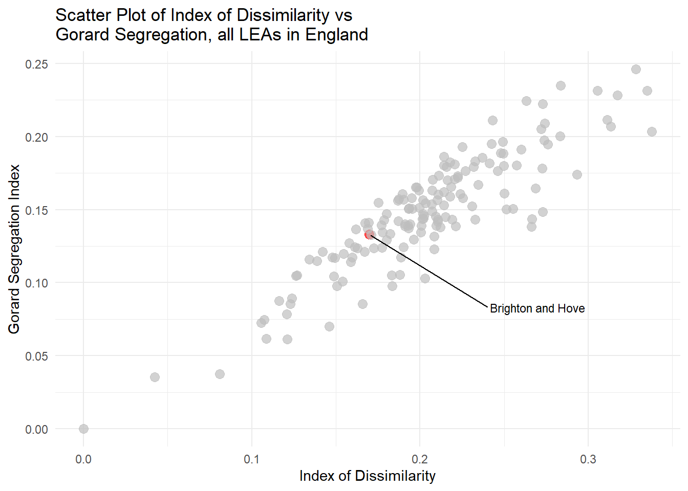
But small likely effects and relatively good levels of integration aside, do we know that the council’s diagnosis for the city is even correct? Before prescribing a treatment, should we have not carried out a thorough examination of the patient first in case a more serious underlying ailment is causing the symptoms? This is all before we get anywhere near the negative side effects.
Not wanting to strain the metaphor further, how do we know for sure that a lack of mixing is indeed the main factor holding back disadvantaged attainment? What if it is not? And if it is not, what is more important? And if there are more important factors, might there be more effective routes to minimising disadvantaged educational outcomes that could offer better (more than a max 1pt improvement in 1 subject at GSCE) or faster results, and indeed do so without the levels of disruption currently on the table?
These are very important questions to ask, not least because under the current proposals, one of the experimental ‘treatments’ being prescribed by the council is forced mixing in schools through artificially reducing places in schools for local students and busing (or for at least 1/4 of children, privately driving) significant numbers of students from some neighbourhoods (some by ‘choice’ and some through ‘displacement’ - see the PGS explainer here) to schools a long way from their homes. This kind of forced mixing not only has a questionable history but has huge negative social/community, financial and environmental implications for our city (many of which were raised in the Parent Support Group’s latest deputation at the Labour Cabinet meeting in November) which have thus-far been ignored by those advocating for the proposals.
And as I will show below, the treatment currently being prescribed by the council, worse than being ineffective, is likely worsen attainment across the city - again, at risk of stretching the metaphor too far, this could be akin 19th Century doctors prescribing arsenic for psoriasis (Sarfraz 2023) - it sort of works in some ways, but OH GOD WHAT HAVE YOU DONE!?
Is there anything more important than social mixing holding back educational attainment, particularly for disadvantaged pupils?
The short answer is: Yes, yes there is. The longer answer is there are lots of things; from raw income deprivation or requiring SEN support, to simply moving schools (see p8 of (Claymore 2023a) to see the relative effects of some of these) - all can have some impact on attainment. But there is one factor, over an above everything else, that affects attainment more than any other: Absence from School.
Absence
Now at this point, you’d be forgiven for shouting “well that’s bloody obvious, I could have told you that!” - which makes it all the more surprising that it has barely surfaced in the narrative during this whole Brighton Secondary School Admissions engagement/consultation process.
I genuinely don’t know why it hasn’t, but again the rush to consultation and a general lack of due care and attention in gathering relevant evidence throughout, are probably in the blame line-up - of course assuming that the publicly stated aims actually align with a desire to conduct evidence-based policy.
The Evidence - the literature
I could get all academic and cite a bunch of papers and government reports, at this juncture, which detail the important role that absence/attendance plays in educational outcomes over and above everything else, but we’ve “had enough of experts”, right? . No? Oh OK then. First up a recent report for the Government’s Social Mobility Commission, where (Riordan, Jopling, and Starr 2021a) state:
“Our statistical models indicate that the strongest predictive factor of the progress made by pupil premium [disadvantaged] students is the school’s absence rate”
“schools with lower absence rates have smaller progress gaps; pupil premium students progress more at schools with lower absence rates; This correlation is regardless of whether they begin with low, medium or high rates of absence.”
“These findings concur with previous research and we share their interpretation too, that this correlation is most likely to be causal. This is because there is an intuitive underlying causal mechanism: students not in school are less likely to learn the school curriculum.”
“On average, the association between being absent from school and KS4 outcomes is worse for disadvantaged pupils than their more affluent peers”
“Supporting secondary schools to reduce absence, improve behaviour and support within-secondary phase transfers are all key areas of policy focus to boost outcomes of disadvantaged pupils and reduce group gaps in progress and attainment.”
“over half of the gap in outcomes between disadvantaged pupils and their more affluent peers is associated with the underlying group differences in absence, exclusion and pupil transfer rates. Improving these underlying factors for disadvantaged pupils should therefore substantially boost outcomes for the group”
I could also go on to cite work by the National Governance Association (NGA 2024) on improving School Attendance, or the Department for Education’s extensive resources on why improving school attendance is important(DfE 2023)(DfE 2024), or this excellent paper by (Klein et al. 2024), but I think you are starting to get the picture. It makes sense, right? If you don’t go to school, it’s harder to learn and achieve.
So the literature clearly says absence is important but:
Is absence from school important for Brighton and Hove?
And if it is, is it more or less important than concentrations of disadvantage in schools in the city?
Fortunately, as has been the case throughout this whole engagement/consultation exercise, data and analysis can shed some light and help us answer these questions.
The Evidence - the data
What is absence and how is absence measured?
There are lots of different reasons why students miss school, for example to attend medical appointments, illness, religious observance, study leave etc. these are likely to be counted as valid reasons and ‘authorised’ by schools. Then there are reasons that are ‘unauthorised’ and these might include things like going on holiday, but also apply to students that might have to stay home to care for family members as well as truancy - i.e. intentionally missing school without permission to be absent.
Reasons for truancy or ‘school refusal’ can be complex and vary between different children, and I won’t go into them here (various sources of information elsewhere if you are interested, including here), but one of the ways in which longer-term absence is measured is if more than 10% of the sessions in a school year are missed. This is often referred to as ‘Persistent Absence’ in the data and this is what we will zoom in on here (rather than other types of authorised or unauthorised absence).
Data Sources
The Department for Education (DfE) publishes various datasets online which cover things like attainment and absence at both the Local Authority level and at the level of individual schools. We will start with this dataset - https://explore-education-statistics.service.gov.uk/data-catalogue/data-set/be024b4d-4f91-40e4-8a58-50dc53dcc93f - “Absence by geographic level - autumn and spring terms combined” which allows us to look at absence in secondary schools across all local authorities from 2016 until 2023.
Question: What is the national picture of persistent absence and how does Brighton and Hove compare?
Persistent Absence - The National Picture
Code
#unauthorised absence#https://explore-education-statistics.service.gov.uk/data-catalogue/data-set/be024b4d-4f91-40e4-8a58-50dc53dcc93f##school performance#https://www.compare-school-performance.service.gov.uk/#from here - https://explore-education-statistics.service.gov.uk/data-catalogue/data-set/be024b4d-4f91-40e4-8a58-50dc53dcc93fabsence <-read_csv("https://explore-education-statistics.service.gov.uk/data-catalogue/data-set/be024b4d-4f91-40e4-8a58-50dc53dcc93f/csv")absence_meta <-as.data.frame(names(absence))absence <- absence %>%mutate(year =as.numeric(substr(time_period, 1, 4)))# Filter the dataframeabsence_2022 <- absence %>%filter(year =="2022"&!is.na(la_name) & education_phase =="State-funded secondary")brighton_rate_2022 <- absence_2022 %>%filter(la_name =="Brighton and Hove") %>%pull(sess_unauthorised_percent)library(ggplot2)library(ggrepel)library(RColorBrewer)library(dplyr)# Ensure the data has necessary columns and correct typesabsence <- absence %>%mutate(year =as.factor(substr(time_period, 1, 4))) # Extract year and convert to factor# Ensure the data has necessary columns and correct typesabsence_secondary <- absence %>%filter(education_phase =="State-funded secondary") %>%mutate(year =as.factor(substr(time_period, 1, 4))) # Extract year and convert to factorbtn_absence_secondary <- absence_secondary %>%filter(la_name =="Brighton and Hove")eng_absence_secondary <- absence_secondary %>%filter(geographic_level =="National")medians <- absence_secondary %>%group_by(year) %>%summarize(median_sess_unauthorised_percent =median(sess_unauthorised_percent, na.rm =TRUE))# ggplot(absence_secondary, aes(x = sess_unauthorised_percent, fill = factor(year))) +# geom_histogram(binwidth = 0.2, alpha = 1, position = "identity") +# geom_vline(data = medians, aes(xintercept = median_sess_unauthorised_percent, color = "England Median"), linetype = "solid", size = 1) +# geom_vline(data = btn_absence_secondary, aes(xintercept = sess_unauthorised_percent, color = "Brighton and Hove"), linetype = "dashed", linewidth = 1) +# facet_wrap(~ year) + # Facet by year# labs(title = "Unauthorised Absence Rates (% sessions missed) \nfor State-funded Secondary Schools by Year",# x = "Unauthorised Absence Rate",# y = "Count",# fill = "Year",# color = "") + # Change legend title# theme_minimal() +# scale_fill_manual(values = brewer.pal(10, "Set3")) + # Use Set3 palette for fill colors# scale_color_manual(values = c("England Median" = "black", "Brighton and Hove" = "blue")) + # Correct manual scale# guides(color = guide_legend(override.aes = list(linetype = c("dashed", "solid"), # shape = c(NA, NA), # size = c(1, 1))))
Code
medians <- absence_secondary %>%group_by(year) %>%summarize(median_enrolments_pa_10_exact_percent =median(enrolments_pa_10_exact_percent, na.rm =TRUE))ggplot(absence_secondary, aes(x = enrolments_pa_10_exact_percent, fill =factor(year))) +geom_histogram(binwidth =0.5, alpha =1, position ="identity") +geom_vline(data = medians, aes(xintercept = median_enrolments_pa_10_exact_percent, color ="England Median"), linetype ="solid", size =1) +geom_vline(data = btn_absence_secondary, aes(xintercept = enrolments_pa_10_exact_percent, color ="Brighton and Hove"), linetype ="dashed", linewidth =1) +facet_wrap(~ year) +# Facet by yearlabs(title ="Percentage of persistent absentees - 10% or more sessions missed - \nfor State-funded Secondary Schools by Year",x ="Percentage of persistent absentees",y ="Count",fill ="Year",color ="") +# Change legend titletheme_minimal() +scale_fill_manual(values =brewer.pal(10, "Set3")) +# Use Set3 palette for fill colorsscale_color_manual(values =c("England Median"="black", "Brighton and Hove"="blue")) +# Correct manual scaleguides(color =guide_legend(override.aes =list(linetype =c("dashed", "solid"), shape =c(NA, NA), size =c(1, 1))))
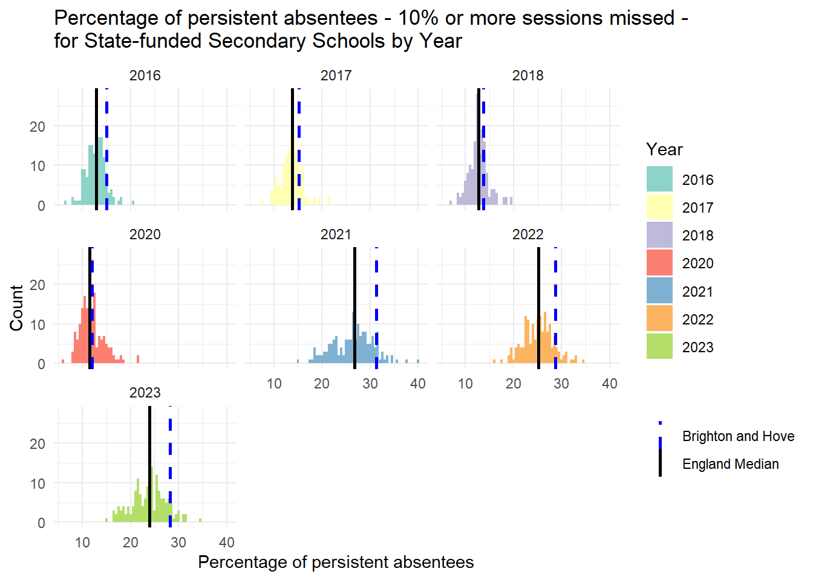
Figure 1: Persistent Absence in State Secondary Schools, 2016/17 to 2023/24; All Local Authorities in England. Brighton and Hove and England Overlaid.
There are couple of things worth pointing out in Figure 1 above:
The problem of persistent absence has increased massively since 2016/17, with stark change in the years after the COVID-19 pandemic, where the median persistent absence had been declining and has reduced to about 12% by 2020, but shot up to over 25% after COVID and is still at about 24% in the most recent data for 2023/24.
At the same time, the variance has increased (meaning the median is less representative of the whole data) - with more Local Authorities having rates of persistent absence well above average, with some having over 1/3 of students missing 10% or more of school.
For Brighton and Hove this situation is bad. Persistent absence has been above average since 2016/17 and while it had declined to only just above the national average in 2020/21, since the Pandemic, the rates of persistent absence have been well above the national average, in 2023/24 topping out at 28%, 4% above the national average of 24%.
Figure 2: Persistent Absence in State Secondary Schools, All Local Authorities in England 2023/24. Brighton and Hove, Mean, Interquartile Range and Outliers at 90% and 95% added.
If we look at just 2023/24 (Figure 2 above), we can see that Brighton and Hove is not quite an outlier (above the 90% percentile at 1.65 standard deviations from the mean) in terms of persistent absence, but it is well above the national average and outside the interquartile range (where 50% of local authorities would lie) with a rate of 28.2%.
This is a slightly wordy statistical way of saying that the persistent absence situation in Brighton and Hove raises interest and is much worse than most other places in the country.
Code
# Line plot for sess_unauth_totalreasons_rate for Brighton and Hove over all values of year absence_btn <- absence %>%filter(la_name =="Brighton and Hove"& education_phase =="State-funded secondary") %>%mutate(year =as.factor(substr(time_period, 1, 4))) # Extract year and convert to factorfiltered_data <- absence %>%filter(education_phase =="State-funded secondary"&is.na(la_name))ggplot() +geom_line(data = filtered_data, aes(x = year, y = enrolments_pa_10_exact_percent, color = region_name, group = region_name)) +geom_point(data = filtered_data, aes(x = year, y = enrolments_pa_10_exact_percent, color = region_name, group = region_name)) +geom_line(data = absence_btn, aes(x = year, y = enrolments_pa_10_exact_percent, color ="Brighton and Hove"), group =1, size =1) +geom_point(data = absence_btn, aes(x = year, y = enrolments_pa_10_exact_percent, color ="Brighton and Hove")) +labs(title ="Persistent Absence (10% or more sessions missed) Rates Over Time \nfor State-funded Secondary Schools by Region",x ="Year",y ="Persistent Absence Rate",color ="Region") +# Change legend titletheme_minimal() +scale_color_manual(values =c("black", brewer.pal(9, "Set1"))) # Add black for Brighton and Hove and Set1 for regions
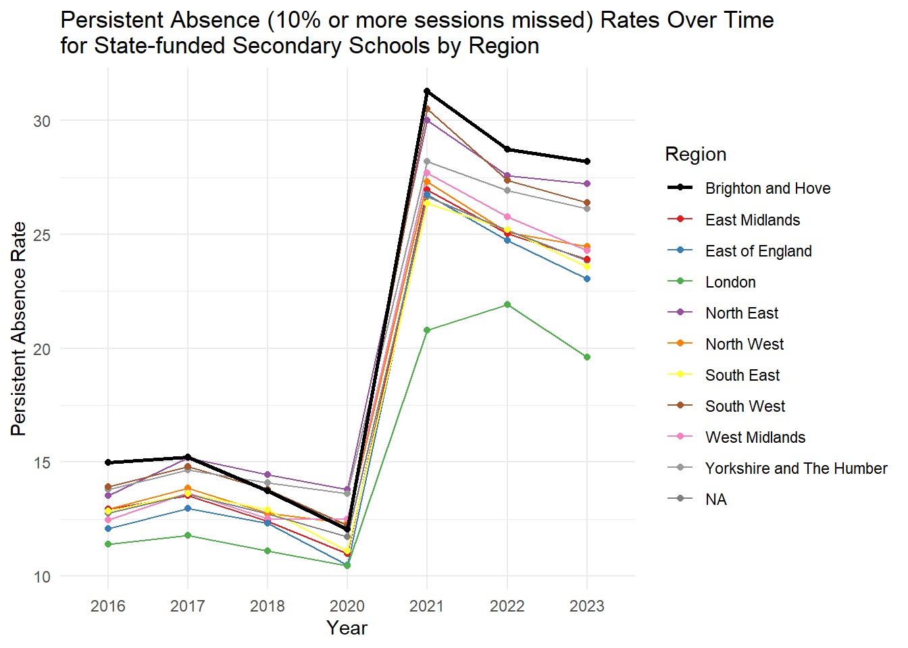
Figure 3: Persistent Absence Over Time, Compared to Regions in England
If we compare Brighton and Hove with other areas in the county (Figure 3) - here I have chosen regions simply because there are fewer of them and they can fit on a single graph relatively tidily - we can see that Persistent Absence is worse in the Local Authority than it is in any other region in the country.
So what does persistent absence look like at the school-level in Brighton? Are all schools contributing to the city performing so badly on persistent absence or are there areas where absence is particularly bad? The histogram in Figure 4 below plots the rates of persistent absence for all state secondary schools in England in 2022/23 and overlays the rates the different schools for Brighton and Hove. The black dotted line is the median for England.
Code
##Absence 2022-23 regression analysis##All Data downloaded from here##https://www.compare-school-performance.service.gov.uk/#read in data for every school in the countryengland_abs <-read_csv(here("data", "Performancetables_Eng_2022_23", "2022-2023", "england_abs.csv"), na =c("", "NA", "SUPP", "NP", "NE"))england_census <-read_csv(here("data", "Performancetables_Eng_2022_23", "2022-2023", "england_census.csv"), na =c("", "NA", "SUPP", "NP", "NE"))england_ks4final <-read_csv(here("data", "Performancetables_Eng_2022_23", "2022-2023", "england_ks4final.csv"), na =c("", "NA", "SUPP", "NP", "NE"))england_school_information <-read_csv(here("data", "Performancetables_Eng_2022_23", "2022-2023", "england_school_information.csv"), na =c("", "NA", "SUPP", "NP", "NE"))england_ks4final <- england_ks4final %>%mutate(URN =as.character(URN)) %>%mutate(across(TOTPUPS:PTOTENT_E_COVID_IMPACTED_PTQ_EE, ~parse_number(as.character(.))))england_ks4final <- england_ks4final %>%filter(!is.na(URN))england_abs <- england_abs %>%mutate(URN =as.character(URN))england_census <- england_census %>%mutate(URN =as.character(URN))england_school_information <- england_school_information %>%mutate(URN =as.character(URN))# Left join england_ks4final with england_absengland_school_2022_23 <- england_ks4final %>%left_join(england_abs, by ="URN") %>%left_join(england_census, by ="URN") %>%left_join(england_school_information, by ="URN")data_types <-sapply(england_school_2022_23, class)england_school_2022_23_meta <-data.frame(Field =names(data_types), DataType = data_types)
Code
median_value <-median(england_school_2022_23_not_special$PPERSABS10, na.rm =TRUE)# Order factor levels of SCHNAME.x by PERCTOTbtn_sub <- btn_sub %>%mutate(SCHNAME.x =factor(SCHNAME.x, levels = SCHNAME.x[order(PPERSABS10)]))#btn_sub[,c("SCHNAME.x","PPERSABS10")]# Create the histogram with vertical lines using the Set3 paletteggplot(england_school_2022_23_not_special, aes(x = PPERSABS10)) +geom_histogram(binwidth =1, fill ="grey", alpha =0.4) +# New color for the bars with added transparencygeom_vline(xintercept = median_value, color ="black", linetype ="dotted", size =1) +labs(title ="Percentage of Enrolments Who Are Persistent Absentees - Missing 10% \nor More of Possible Sessions Across the Full 2022/23 Academic Year - \n(All Secondary Schools England, Brighton overlaid)",x ="Percentage of Enrolments Who Are Persistent Absentees",y ="Count",color ="School (ordered lowest absence)") +# Change legend title to "School"theme_minimal() +geom_vline(data = btn_sub, aes(xintercept = PPERSABS10, color = SCHNAME.x), linetype ="solid", linewidth =1) +# Solid vertical lines colored by SCHNAME.xscale_color_manual(values =brewer.pal(10, "Set3")) +# Use Set3 palette for high contrast with 10 colorstheme(legend.position =c(0.8, 0.5), # Position legend inside the plotlegend.background =element_rect(fill ="white", size =0.5, linetype ="solid", color ="black"))
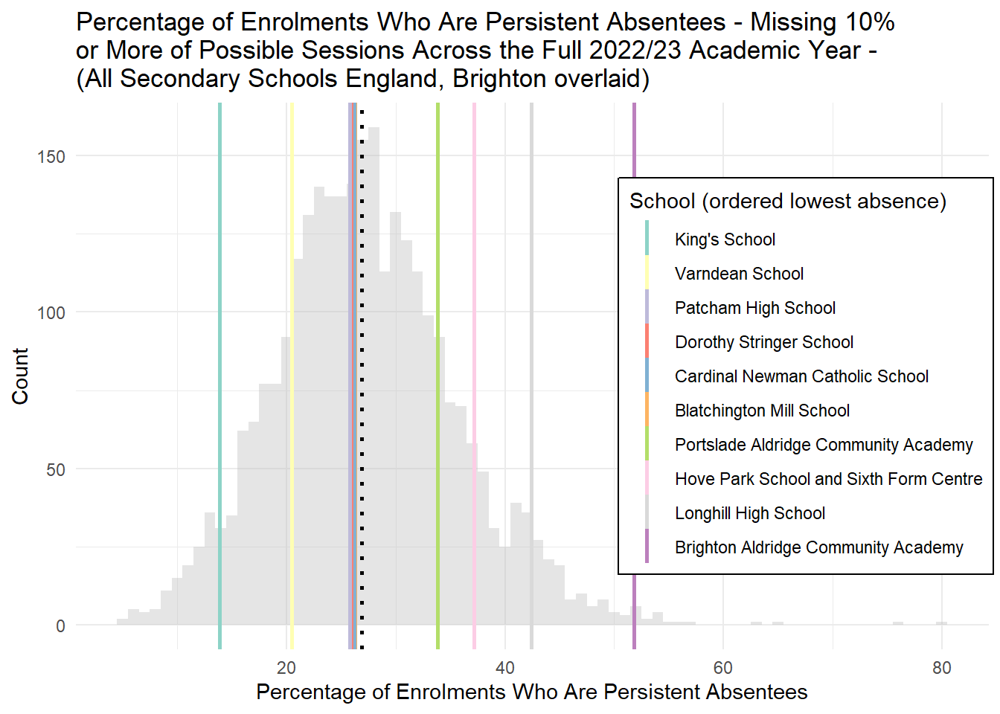
Figure 4: Percentage of Enrolments who are persistently absence (over 10% sessions missed), England (Brighton and Hove Schools overlaid).
Schools are ordered from lowest to highest left-to-right, so congested lines in the middle can be read from the legend in order.
The national median for persistent absence in 2022/23 is 26.7% of pupils missing 10% or more of possible sessions. Cardinal Newman, Patcham, Dorothy Stringer and Blatchington Mill are all very close to the national average.
King’s School and Varndean have better/lower persistent absence rates than average - King’s much lower.
At the other end of the scale, PACA and Hove Park have noticably above-average/worse persistent absence rates, while Longhill has 42.4% of students persistently absent with BACA an outlier with an incredibly high rate of 51.8% making it a school suffering from one of the the highest rates of persistent absence in the country.
The high, above average, city-levels of persistent absence over time shown at the local authority level, appear to be being driven mainly by students who attend two schools - Longhill and BACA
While we are here, it will be useful to look at the disadvantaged pupil picture in the same way. This is because later on we will compare the effects that both disadvantage and absence have on attainment to see which is more important both nationally and in the city. Figure 5 below plots a similar histogram to that above, but this time for disadvantaged pupils.
Taking the description from the DfE “Pupils are defined as disadvantaged if they are known to have been eligible for free school meals at any point in the past six years (from year 6 to year 11), if they are recorded as having been looked after for at least one day or if they are recorded as having been adopted from care.”
Code
#https://explore-education-statistics.service.gov.uk/find-statistics/key-stage-4-performance/2022-23## "Pupils are defined as disadvantaged if they are known to have been eligible for free school meals at any point in the past six years (from year 6 to year 11), if they are recorded as having been looked after for at least one day or if they are recorded as having been adopted from care."##FSM - % disadvantaged at the end of KS4 (6-year measure)# ggplot(england_school_2022_23_not_special, aes(x = PTFSM6CLA1A# # )) +# geom_histogram(fill = "#b3cde3", color = "black") + # Pastel color for the bars# labs(title = "% disadvantaged at the end of KS4",# x = "% disadvantaged at the end of KS4",# y = "Count") +# theme_minimal()median_value <-median(england_school_2022_23_not_special$PTFSM6CLA1A, na.rm =TRUE)btn_sub <- btn_sub %>%mutate(SCHNAME.x =factor(SCHNAME.x, levels = SCHNAME.x[order(PTFSM6CLA1A, decreasing = F)]))#btn_sub[,c("SCHNAME.x","PTFSM6CLA1A")]ggplot(england_school_2022_23_not_special, aes(x = PTFSM6CLA1A)) +geom_histogram(binwidth =1, fill ="grey", alpha =0.4) +# New color for the bars with added transparencygeom_vline(xintercept = median_value, color ="black", linetype ="dotted", size =1) +labs(title ="% Pupils Disadvantaged at end of KS4 - 2022/23 Academic Year - \n(All Secondary Schools England, Brighton overlaid)",x ="% Pupils Disadvantaged",y ="Count",color ="School (ordered lowest % disadvantaged)") +# Change legend title to "School"theme_minimal() +geom_vline(data = btn_sub, aes(xintercept = PTFSM6CLA1A, color = SCHNAME.x), linetype ="solid", linewidth =1) +# Solid vertical lines colored by SCHNAME.xscale_color_manual(values =brewer.pal(10, "Set3")) +# Use Set3 palette for high contrast with 10 colorstheme(legend.position ="bottom", legend.title =element_blank(),legend.background =element_rect(fill ="white", size =0.2, linetype ="solid", color ="black")) +guides(col =guide_legend(nrow =4))
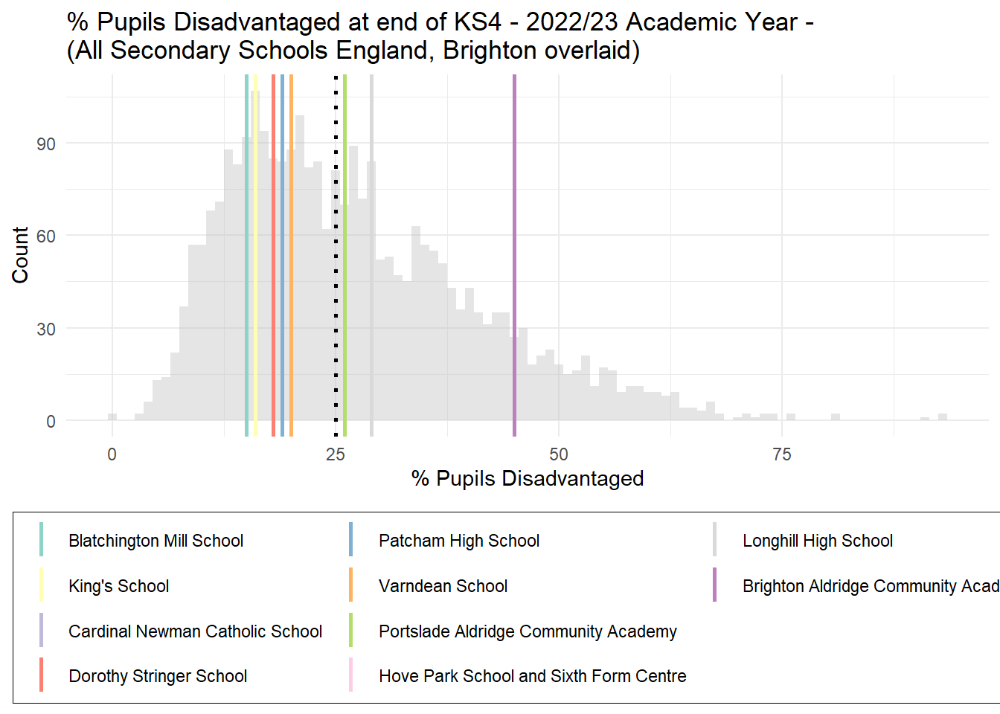
Figure 5: Percentage of Pupils Disadvantaged at the end of KS4, England (Brighton and Hove Schools overlaid).
The national median for disadvantaged pupils at the end of KS4 is around 24%. Most schools in Brighton have below the national average rates of disadvantage.
PACA (26%) and Longhill (29%) have slightly above the national average rate of disadvantage, but not significantly so.
BACA, on the other hand, has a very high rate of disadvantage, with 45% of pupils being disadvantaged.
Attainment
Measuring attainment is tricky. Absolute attainment (number of A*s at GCSE - sorry, I know we don’t have A*s anymore, showing my age, but you know what I mean) is a crude measure as it fails to take any account of the diversity of schools and their cohorts, so for a number of years now the preferred measure of attainment has been to look at the ‘value added’ by schools to their pupils by essentially comparing the levels of attainment of pupils when they leave secondary school after their GCSEs, with the levels of attainment they came in with after Primary School.
The standard measure of ‘value added’ used by the government for the last few years is something called the “Progress 8” score. “The score is calculated for each student by comparing their GCSE (or equivalent) results with the results of peers who achieved a similar level of attainment at the end of primary school” (Riordan, Jopling, and Starr 2021b). This is done across 8 subjects/qualifications (hence the name), with England and Maths given a double weighting. It is a ratio centred on Zero and generally ranges between -1 and +1 for most schools (when aggregated to school level).
Progress 8 has been criticised as a measure for various reasons, including its perceived volatility, however the general conclusions in the literature are, it’s not perfect, but it’s certainly better than the old measure of counting students achieving 5 A*-C grades - various pieces including by (Prior et al., n.d.) and (Beynon 2024)here, and here if you want to follow up. And in an Institute for Fiscal Studies report, (Britton, Clark, and Lee 2023) evaluate the effectiveness of using Progress 8 and also conclude that
“controlling for prior attainment alone is sufficient to produce accurate estimates, and we find no compelling evidence to suggest that the government’s current effectiveness measure, Progress 8, is unreliable. Given its relative simplicity, Progress 8 is a usable measure for teachers and schools, leading us to conclude that there is a limited case for reform based on our data.”
So most of what follows will relate to Progress 8. However, since the first pass at this I’ve been into the council and seen Jacob Taylor, Richard Barker and others. Jacob was concerned that Progress 8 incorporates disadvantage into the measure - it doesn’t quite as it simply measures progress between KS2 and KS4 for pupils relative to the national picture and as we’ll see below, while there is some correlation between P8 and disadvantage, it’s weak. It simply acknowledges that some students start KS3 at higher and lower points. However, to assuage those fears, I’ll also look briefly at Attainment 8 - which is the measure of raw attainment, not accounting for prior attainment.
Code
# ggplot(england_school_2022_23_not_special, aes(x = P8MEA)) +# geom_histogram(binwidth = 0.1, fill = "#b3cde3", color = "black") + # Pastel color for the bars# labs(title = "Distribution of P8MEA",# x = "P8MEA",# y = "Count") +# theme_minimal()median_value <-median(england_school_2022_23_not_special$P8MEA, na.rm =TRUE)btn_sub <- btn_sub %>%mutate(SCHNAME.x =factor(SCHNAME.x, levels = SCHNAME.x[order(P8MEA, decreasing = T)]))#btn_sub[,c("SCHNAME.x","P8MEA")]ggplot(england_school_2022_23_not_special, aes(x = P8MEA)) +geom_histogram(binwidth =0.1, fill ="grey", alpha =0.4) +# New color for the bars with added transparencygeom_vline(xintercept = median_value, color ="black", linetype ="dotted", size =1) +labs(title ="Progress 8 Measure Across the Full 2022/23 Academic Year - \n(All Secondary Schools England, Brighton overlaid)",x ="Progress 8 Measure",y ="Count",color ="School (ordered highest Progress8)") +# Change legend title to "School"theme_minimal() +geom_vline(data = btn_sub, aes(xintercept = P8MEA, color = SCHNAME.x), linetype ="solid", linewidth =1) +# Solid vertical lines colored by SCHNAME.xscale_color_manual(values =brewer.pal(10, "Set3")) +# Use Set3 palette for high contrast with 10 colorstheme(legend.position ="bottom", legend.title =element_blank(),legend.background =element_rect(fill ="white", size =0.2, linetype ="solid", color ="black")) +guides(col =guide_legend(nrow =4))
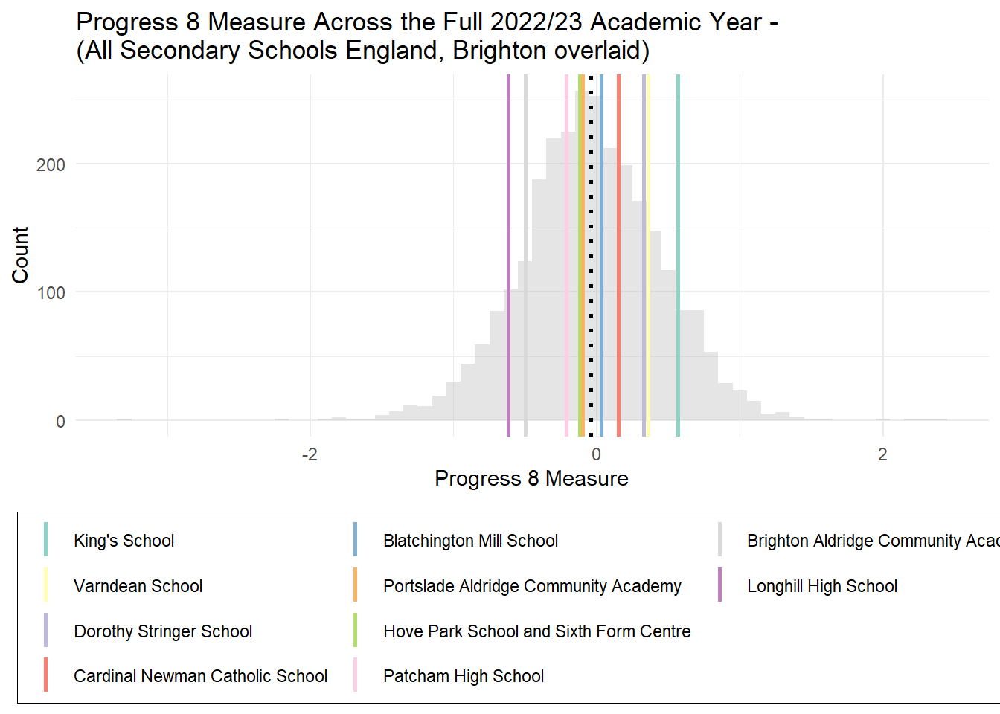
Figure 6: Progress 8 across all schools in England, 2022/23 with Brighton and Hove schools overlaid.
Note, these are not the latest Progress 8 scores from 2023/24 - these have just been publilshed, but not with useful comparative data for the same year yet, so I’m sticking to 2022/23 for now. However, if you want to look at the latest Progress 8 Scores for Brighton Schools, you can see them here. Of note in 2023/24, however, is the fact that of the schools performing below average, BACA has made a notable improvement from -0.5 to -0.4 in the latest P8 stats. Longhill has declined further from -0.62 to -0.7 and Patcham has declined from -0.21 to -0.45. At the other end of the scale, of those above average, Blatchington Mill has improved from 0.03 to 0.3.
As Progress 8 scores are relative to a national average, the distribution around the mean of 0 is about as normal as you might get and the distribution of Brighton schools around this mean is also pretty normal with as many schools above as below average.
Longhill has the worst Progress 8 scores in the City in 2022/23, with BACA performing slightly better at that time, although with BACA improving and Longhill declining in 2024, the gap between these schools has increased.
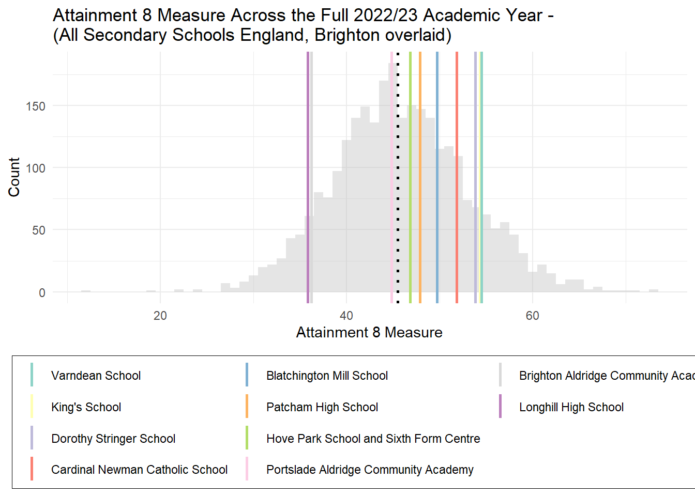
Figure 7: Attainment 8 across all schools in England, 2022/23 with Brighton and Hove schools overlaid.
Attainment 8 is simply raw attainment scores at the end of KS4, not accounting for prior achievement.
The histogram is a slightly odd shape with long-tails (i.e. a large number of small counts of schools stretching out to the extremes of the plot). This means when we compare with other data which are more normally distributed, some non-linear patterns might emerge.
As far as Brighton and Hove are concerned, however, the majority of schools in the city achieve above the national median for Attainment 8 - which brings us back to my observations in past pieces that in raw attainment terms, Brighton is an above-average city. Only Longhill and BACA are achieving below average.
Absence, Disadvantage and Attainment
In a deputation to Labour Cabinet on 6th December 2024, representatives from Class Divide aimed an arrow at ‘apparently sophisticated analysis’ from groups in the city opposed to elements of the council’s proposals.
What I hope to offer below is not particularly sophisticated as hopefully you will be able to see with your own eyes the patterns that the data on Absence, Disadvantage and Attainment reveals and arrive at the same interpretations I have.
Being unsophisticated does not mean that I will assume an understanding of some of the more esoteric mathematical dimensions of this analysis, but I will try to keep it as simple as I can and please email me at the address at the top of this piece if you have any questions or queries.
Absence and Attainment
To begin with, I will start with a simple scatter plot. We probably all drew these by hand in science at some point in school. You may have even had a go at drawing a line of best-fit through the points with a ruler (I remember my teachers getting us to do this). The idea is the line is our best attempt at summarising the pattern shown by the dots in the scatter plot, and can be thought of as the average of all the points.
The plot below in Figure 8 is a scatter plot, with each point representing a school in England. The y-axis (vertical) has the average Progress 8 score at the end of KS4 for that school in 2022/23. In this plot, the x-axis (horizontal) represents the % of enrolments at that school that are persistently absent (over 10% of sessions missed) in the same year.
Code
# Base plot with england_school_2022_23lm_model <-lm(P8MEA ~ PPERSABS10, data = england_school_2022_23_not_special)lm_summary <-summary(lm_model)lm_coefficients <- lm_summary$coefficientsintercept <-round(lm_coefficients[1, 1], 2)slope <-round(lm_coefficients[2, 1], 2)r_squared <-round(lm_summary$r.squared, 2)ggplot(england_school_2022_23_not_special, aes(y = P8MEA, x = PPERSABS10)) +geom_point() +geom_smooth(method ="lm", se =TRUE) +geom_point(data = btn_sub, aes(y = P8MEA, x = PPERSABS10, colour = OFSTEDRATING)) +labs(title ="Progress 8 vs Persistent Absence %, All Schools, England, 2022-23",x ="% Enrollments who are persistently absent",y ="Progress 8 measure after adjustment for extreme scores",color ="Brighton Schools") +theme_minimal() +annotate("text", x =100, y =Inf, label =paste("Intercept:", intercept, "\nSlope:", slope, "\nR²:", r_squared), hjust =1.1, vjust =2, size =5, color ="black") +xlim(0, 100)#ggsave(here("images","progress8_vs_persabs.png"), width = 10, height = 6, dpi = 300)
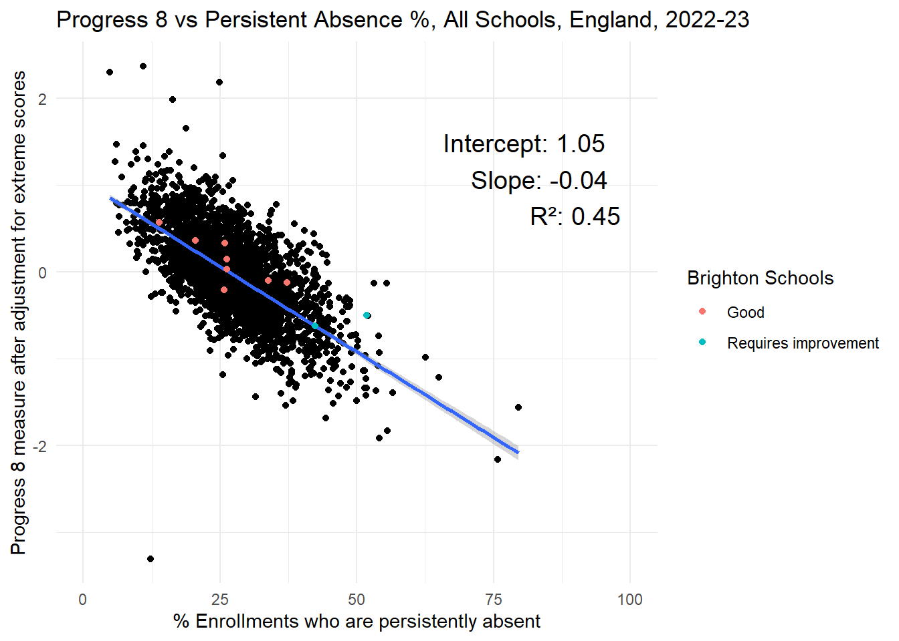
Figure 8: Progress 8 vs Persistent Absence across all schools in England, 2022/23
Looking at the plot and all points together, it should hopefully be clear that on the whole, as the % of enrolments who are persistently absent increases, the value of the Progress 8 score decreases. The more a school has high levels of persistent absence, the lower its Progress 8 score is likely to be. There are, of course, a few weird values (outliers) which don’t follow this trend, but most do.
The blue line through the centre of the plot is the line of best-fit (also known as the ‘regression’ line). This is drawn by the computer by minimising the total sum of the squared vertical distances (known as residuals) between each black dot in the plot and the blue line itself. In doing this it ends up with the sum of the positive (dots above the line) and negative residuals (dots below the line) equalling zero.
The blue line has two properties that are useful for helping us describe the cloud of points it is representing:
The first is known as the ‘intercept’. This is the value on the y-axis of the blue line as it crosses zero. In our example, it can be thought of as the value of Progress 8 we would expect for a school if it had 0% persistent absence. Our average best-case Progress 8, if you like. In our case, this value would be 1.06.
The second is known as the ‘slope’. This is the change in the value of \(y\) (Progress 8) for a one-unit change (1% persistent absence) on the \(x\)-axis. In our example, the slope is -0.04. This means that for every additional 1% of students that are persistently absent, on average, the Progress 8 score for that school will reduce by -0.04.
The other way of thinking about the slope is how much effect \(x\) (persistent absence) is having on \(y\) (Progress 8) - if there is there is a causal relationship (which I will return to below). The higher the value of the slope, the more effect \(x\) is having on \(y\), the lower the value, the less effect it is having. It’s worth also noting that the slope value is in units of \(x\).
On the plot above, I have calculated one more useful property of the points which statisticians know as the \(R^2\). In lay terms, this is a number between 0-1 that describes how good a representation of the points the blue line is. The closer the points hug the line, the closer to 1 the value gets. If all of the black points fell exactly on the line, the \(R^2\) = 1. Another way of describing the blue line is it’s a model (a representation) of the black points. The closer to 1 our \(R^2\) value is, the better our model is and the more reliable it is at describing the underlying relationship.
Our blue line (model) has an \(R^2\) = 0.47. Another way of thinking about this is to say that 47% of the variation in Progress 8 scores between schools can be explained just by the variation in persistent absence. So almost 50%. In statistical terms, this is a very good model. The relationship between Progress 8 and persistent absence is very strong.
One note of caution with interpreting relationships like this is often it is easy to confuse correlation (things going up or down together) with causation (\(x\) causing \(y\), rather than \(y\) causing \(x\)). This is something all researchers need to be aware of and careful to identify clear theoretical reasons behind suggested relationships. However, in this particular case, the causal pathways are clear. As (Riordan, Jopling, and Starr 2021c) (cited earlier) states: “this correlation [between absence and attainment] is most likely to be causal. This is because there is an intuitive underlying causal mechanism: students not in school are less likely to learn the school curriculum.”
Brighton Schools have been overlaid - I will return to this in more detail later, but it is worth commenting that most are above the regression line. Positive residuals. This means relative the the levels of persistent absence they are experiencing, they are, on the whole, doing better than most other schools in similar situations, nationally.
So this simple plot actually contains a lot of information:
We know that Persistent Absence explains almost 50% of the variance in Progress 8 scores at the school level in England in 2022/23.
We know that, on average, reducing persistent absence in a school by 1% will likely increase their Progress 8 score by 0.04. 10% reduction in persistent absence will lead to a Progress 8 increasing by 0.4.
Code
library(mgcv)# fit a generalised additive model# lm_model <- gam(ATT8SCR ~ PPERSABS10, data = england_school_2022_23_not_special)# lm_summary <- summary(lm_model)# lm_coefficients <- lm_summary$p.coeff# intercept <- round(lm_coefficients[1], 2)# slope <- round(lm_coefficients[2], 2)# r_squared <- round(lm_summary$r.sq, 2)ggplot(england_school_2022_23_not_special, aes(y = ATT8SCR, x = PPERSABS10)) +geom_point() +#geom_smooth(method = "gam", se = TRUE) +geom_smooth(method ="lm", se =TRUE, colour ="red") +geom_point(data = btn_sub, aes(y = ATT8SCR, x = PPERSABS10, colour = OFSTEDRATING)) +labs(title ="Attainment 8 vs Persistent Absence %, all schools in England, 2022-23",x ="% Enrollments who are persistently absent",y ="Attainment 8 measure",color ="Brighton Schools") +theme_minimal() +xlim(0, 100)
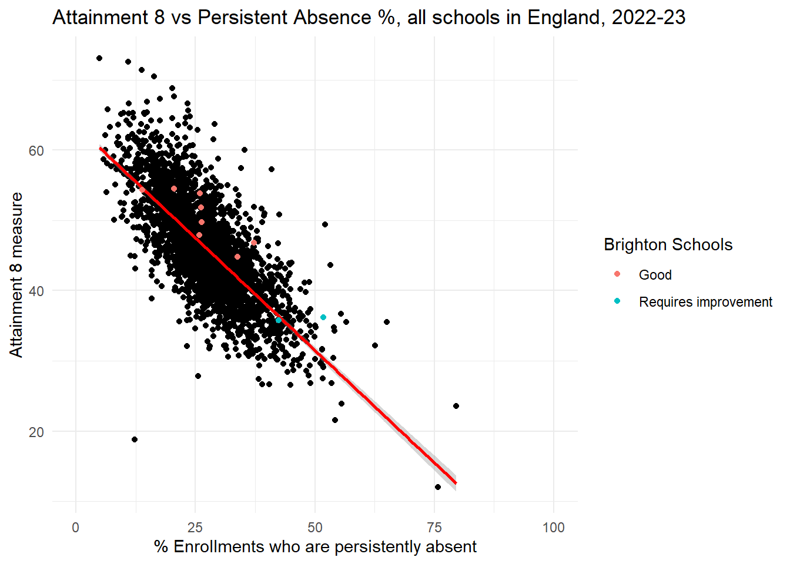
Figure 9: Attainment 8 vs Persistent Absence across all schools in England, 2022/23
Code
lm_model <-lm(log(ATT8SCR) ~log(PPERSABS10), data = england_school_2022_23_not_special)lm_summary <-summary(lm_model)lm_coefficients <- lm_summary$coefficientsintercept <-round(lm_coefficients[1, 1], 2)slope <-round(lm_coefficients[2, 1], 2)r_squared <-round(lm_summary$r.squared, 2)ggplot(england_school_2022_23_not_special, aes(y =log(ATT8SCR), x =log(PPERSABS10))) +geom_point() +#geom_smooth(method = "gam", se = TRUE) +geom_smooth(method ="lm", formula = y ~exp(-0.05*x), se =TRUE, colour ="red") +geom_point(data = btn_sub, aes(y =log(ATT8SCR), x =log(PPERSABS10), colour = OFSTEDRATING)) +labs(title ="Attainment 8 vs Persistent Absence %, all schools in England, 2022-23",x ="log(% Enrollments who are persistently absent)",y ="log(Attainment 8 measure)",color ="Brighton Schools") +theme_minimal() +annotate("text", x =2.5, y =4, label =paste("Intercept:", intercept, "\nSlope:", slope, "\nR²:", r_squared), hjust =1.1, vjust =2, size =5, color ="black") +ylim(2,5)
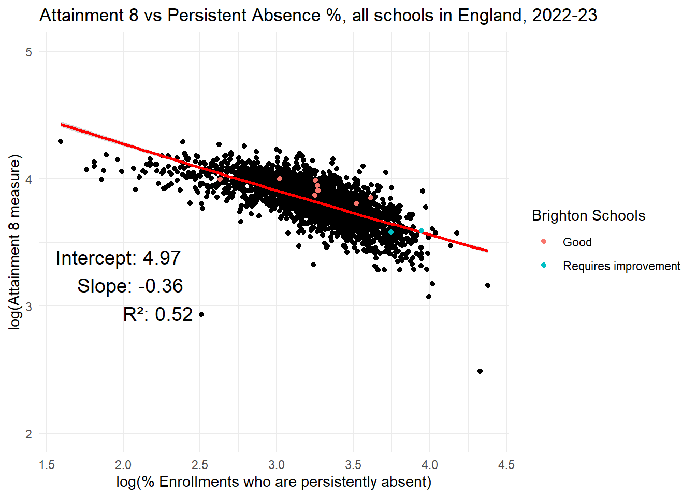
Figure 10: Log-Log plot Attainment 8 vs Persistent Absence across all schools in England, 2022/23
The first thing to note about the Attainment 8 data and its relationship to Persistent Absence is, in its raw form, it is not a linear relationship, but rather an inverse power-law relationship. This can be seen with the model curve estimate overlaid in red.
What this means in practice is that in raw-attainment terms, once a school gets below about 25% persistent absence, for every 1% point reduction in absence, the corresponding improvement in Attainment 8 gets magnified.
At the other end of the distribution, once a school gets above about 35% persistent absence, further increases in persistent absence won’t reduce average Attainment 8 much further - which makes sense as at some point, even just turning up and completing an exam will lead to a minimum grade. Very rarely will Attainment 8 dip below 25.
Taking the log of both Attainment 8 and Persistent absence allows us to view this inverse power law relationship as a more conventional straight-line. We can see this in Figure 10 which is known as a log-log plot.
Brighton Schools have been overlaid - and as with Progress 8, it is a similar story with Attainment 8: most are above the regression line. Positive residuals again. To re-iterate, this means relative to the levels of persistent absence they are experiencing, Brighton schools are, on the whole, doing better than most other schools in similar situations, nationally.
Disadvantage and Attainment
OK, now we’re warmed up, here’s a very similar scatter plot, but this time plotting the % of disadvantaged students at a school relative to Progress 8. You might notice some similarities and some differences and I will highlight the ones I think relevant below.
Code
# Base plot with england_school_2022_23lm_model <-lm(P8MEA ~ PTFSM6CLA1A, data = england_school_2022_23_not_special)lm_summary <-summary(lm_model)lm_coefficients <- lm_summary$coefficientsintercept <-round(lm_coefficients[1, 1], 2)slope <-round(lm_coefficients[2, 1], 2)r_squared <-round(lm_summary$r.squared, 2)ggplot(england_school_2022_23_not_special, aes(y = P8MEA, x = PTFSM6CLA1A)) +geom_point() +geom_smooth(method ="lm", se =TRUE) +geom_point(data = btn_sub, aes(y = P8MEA, x = PTFSM6CLA1A, colour = OFSTEDRATING)) +labs(title ="Progress 8 vs % Percentage of Disadvantaged Students, 2022-23",x ="% Percentage of Disadvantaged Students",y ="Progress 8 measure after adjustment for extreme scores",color ="Brighton Schools") +theme_minimal() +annotate("text", x =100, y =Inf, label =paste("Intercept:", intercept, "\nSlope:", slope, "\nR²:", r_squared), hjust =1.1, vjust =2, size =5, color ="black") +xlim(0, 100)#ggsave(here("images","progress8_vs_persabs.png"), width = 10, height = 6, dpi = 300)
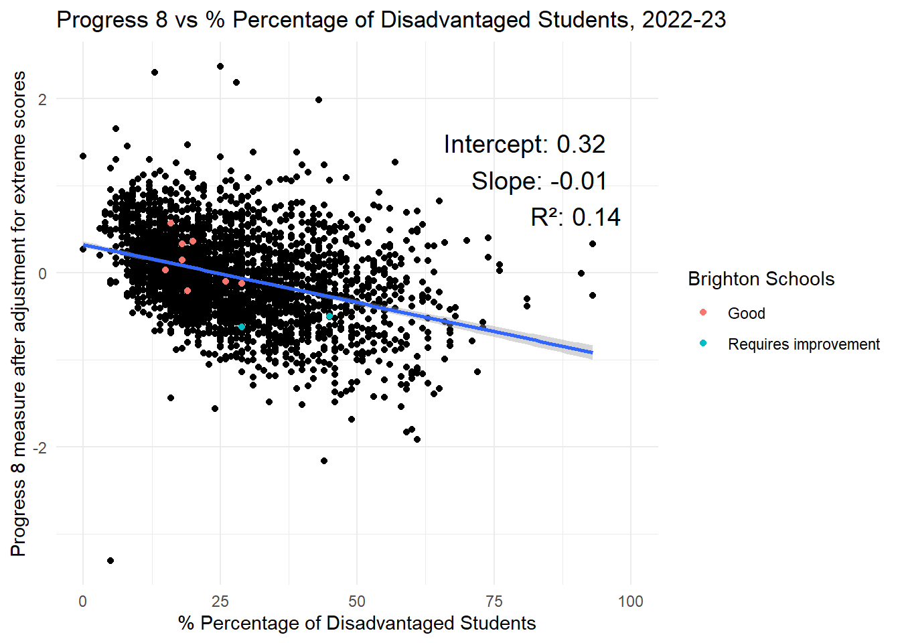
Figure 11: Progress 8 vs % Disadvantaged across all schools in England, 2022/23
The first thing to note is there is also a negative correlation in this graph. As the proportion of disadvantaged students a school has goes up, on average, the progress 8 score goes down.
However, hopefully you will have noticed a few differences between this plot and the first one.
Slope - the slope of the blue line is shallower. This means that (assuming a causal relationship), on average, having a higher concentration of disadvantaged students in a school has a less severe negative impact on Progress 8. A 1% increase in disadvantaged students will only lead to a 0.01 decrease in Progress 8 (compared to a 0.04 decrease for persistent absence).
Intercept - the intercept is 0.36, which means that, on average, if a school had 0% disadvantaged students, it might expect a Progress 8 score of 0.36. This is compared to an intercept of 1.06 for Persistent absence, again, suggesting reducing absence rather than disadvantage concentrations is likely to have a greater impact on Progress 8.
\(R^2\) - this is 0.15. So the % of disadvantaged students in a school can only predict 15% of the variation in Progress 8 scores (compared to 47% for Persistent Absence). It is also possible to see this visually - the cloud of points in this plot are far more dispersed than in the earlier plot, showing visually the weaker relationship.
We will look at this in more detail later, but for Brighton the relationship between progress 8 and disadvantage is broadly negative, but it is clear that it is not a straightforward linear relationship at all.
Code
# Base plot with england_school_2022_23lm_model <-lm(ATT8SCR ~exp(-0.05*PTFSM6CLA1A), data = england_school_2022_23_not_special, , na.action = na.omit)lm_summary <-summary(lm_model)lm_coefficients <- lm_summary$coefficientsintercept <-round(lm_coefficients[1,1], 2)slope <-round(lm_coefficients[1,2], 2)r_squared <-round(lm_summary$r.squared, 2)ggplot(england_school_2022_23_not_special, aes(y = ATT8SCR, x = PTFSM6CLA1A)) +geom_point() +geom_point(data = btn_sub, aes(y = ATT8SCR, x = PTFSM6CLA1A, colour = OFSTEDRATING)) +#geom_smooth(method = "gam", se = TRUE) + geom_smooth(method ="lm", formula = y ~exp(-0.05*x), se = T, colour ="red") +#geom_smooth(method = "lm", formula = y ~ exp(-0.09*x), se = T, colour = "red") + #geom_smooth(method = "loess", formula=(y ~ x), se = TRUE, colour = "green") + labs(title ="Attainment 8 vs % Percentage of Disadvantaged Students, 2022-23",x ="% Percentage of Disadvantaged Students",y ="Attainment 8 measure",color ="Ofsted Rating") +theme_minimal() +xlim(0, 100)
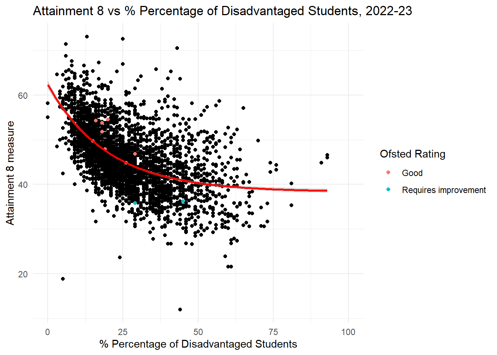
Figure 12: Attainment 8 vs % Disadvantaged across all schools in England, 2022/23
Code
# Remove rows with NA or infinite values after taking logcleaned_data <- england_school_2022_23_not_special %>%filter(!is.na(ATT8SCR) & ATT8SCR >0&!is.na(PTFSM6CLA1A) & PTFSM6CLA1A >0)# Fit the model againlm_model <-lm(log(ATT8SCR) ~log(PTFSM6CLA1A), data = cleaned_data, na.action = na.exclude)lm_summary <-summary(lm_model)lm_coefficients <- lm_summary$coefficientsintercept <-round(lm_coefficients[1,1], 2)slope <-round(lm_coefficients[1,2], 2)r_squared <-round(lm_summary$r.squared, 2)ggplot(england_school_2022_23_not_special, aes(y =log(ATT8SCR), x =log(PTFSM6CLA1A))) +geom_point() +#geom_smooth(method = "gam", se = TRUE) + geom_smooth(method ="lm", se = T, colour ="red") +geom_point(data = btn_sub, aes(y =log(ATT8SCR), x =log(PTFSM6CLA1A), colour = OFSTEDRATING)) +#geom_smooth(method = "lm", formula = y ~ exp(-0.09*x), se = T, colour = "red") + #geom_smooth(method = "loess", formula=(y ~ x), se = TRUE, colour = "green") + labs(title ="Attainment 8 vs % Percentage of Disadvantaged Students, 2022-23",x ="log(% Percentage of Disadvantaged Students)",y ="log(Attainment 8 measure)",color ="Brighton Schools") +theme_minimal() +annotate("text", x =Inf, y =3, label =paste("Intercept:", intercept, "\nSlope:", slope, "\nR²:", r_squared), hjust =1.1, vjust =2, size =5, color ="black") +ylim(1, 5)
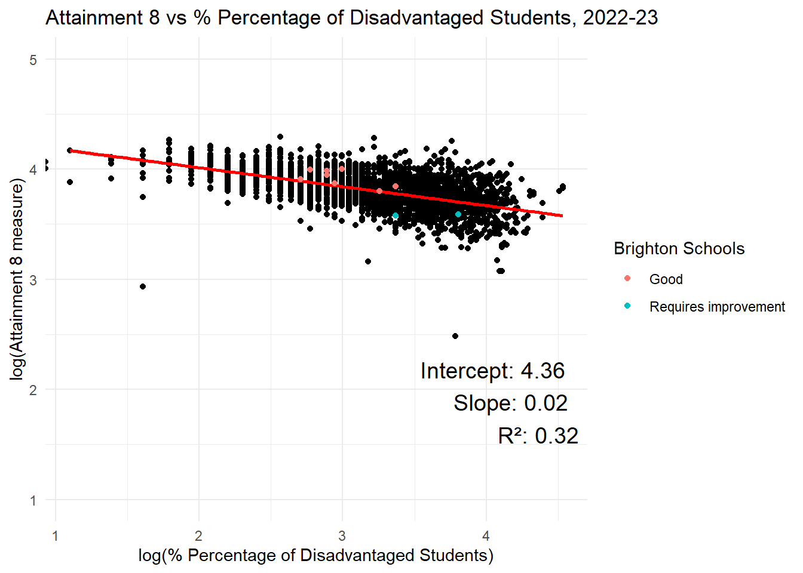
Figure 13: Log-Log Attainment 8 vs % Disadvantaged across all schools in England, 2022/23
As far as raw attainment is concerned, we have a similar log-linear relationship between Attainment 8 and disadvantage as we did with Progress 8 and disadvantage. It is also notable again that disadvantage has both a shallower slope (less influential as a predictor of raw attainment) than absence and a weaker correlation with an \(R^2\) of 0.27 (compared to 0.56 for Progress 8).
Relative to all other schools in the country with similar levels of disadvantage, the good schools on the whole perform better than average (positive residuals above the line) and the requires improvement schools worse than we would expect, given their levels of disadvantage).
Interpretation
At a national level in 2022/23, then, it’s clear that persistent absence is both a better predictor of Progress 8 and Attainment 8 than disadvantage and stands a better chance of being more influential on progress outcomes if reduced in schools. If I were a policy maker and sitting on top of evidence such as this and I wanted to improve educational outcomes using some high-level lever, the most sensible course of action would be to look at persistent absence before getting anywhere near disadvantage.
It also points to the premise in the consultation documents I mentioned earlier - that outcomes in the city are being driven by economic advantage - potentially being incorrect. This evidence seems to suggest that while economic advantage/disadvantage might play a part, factors like persistent absence are likely to be playing even more of a part.
It’s also the case that once we control for levels of disadvantage and absence and compare schools in Brighton with other schools in England in a similar position, most schools in Brighton are actually performing better than expected most of the time, both on Attainment 8 and Progress 8.
As such, some questions you might well be asking at this point are:
“why have we heard nothing about persistent absence from the council or organisations like Class Divide over the last few months?“
and
“why has the council been zooming in on trying to mix students up in the city when a much more important factor and potentially bigger policy win is sitting there being ignored?”
I genuinely don’t know the answers - perhaps they can provide them in due course. But in the meantime let’s dig a little deeper into the data to see if even more questions or observations emerge.
Absence, Disadvantage, Ofsted, Brighton and Attainment
The plots above are informative, but we can actually make them work a little harder and reveal even more dimensions to the issue.
Figure 14 below is exactly the same plot as in Figure 8, but this time I have coloured the schools according to their last Ofsted rating and have highlighted each school in Brighton for comparison.
The Ofsted Rating Effect - Persistent Absence
Progress 8
Code
filtered_data <- eng_sch_2022_23_not_special_plus %>%filter(OFSTEDRATING !="Inadequate"&!is.na(OFSTEDRATING))filtered_region <- eng_sch_2022_23_not_special_plus %>%filter(OFSTEDRATING !="Inadequate"&!is.na(OFSTEDRATING) &!is.na(gor_name))btn_sub <- filtered_region %>%filter(URN %in% btn_urn_list$urn)# Base plot with england_school_2022_23plot <-ggplot(filtered_data, aes(y = P8MEA, x = PPERSABS10, colour = OFSTEDRATING)) +geom_point() +geom_smooth(method ="lm", se =FALSE) +# Add linear model line for england_school_2022_23labs(title ="Progress 8 vs Persistent Absence %, 2022-23",x ="% Enrollments who are persistently absent",y ="Progress 8 measure after adjustment for extreme scores",color ="Ofsted Rating") +theme_minimal()# Add another layer with btn_sub points and labels with sticksplot +geom_point(data = btn_sub, aes(y = P8MEA, x = PPERSABS10), color ="black") +geom_smooth(data = btn_sub, aes(y = P8MEA, x = PPERSABS10), method ="lm", se =FALSE, color ="black") +# Add linear model line for btn_subgeom_text_repel(data = btn_sub, aes(y = P8MEA, x = PPERSABS10, label = SCHNAME.x), color ="black", size =3, nudge_y =c(-1.5, 1.5), force =10, box.padding =0.5, max.overlaps =10, direction ="both") #ggsave(here("images","progress8_vs_persabs.png"), width = 10, height = 6, dpi = 300)
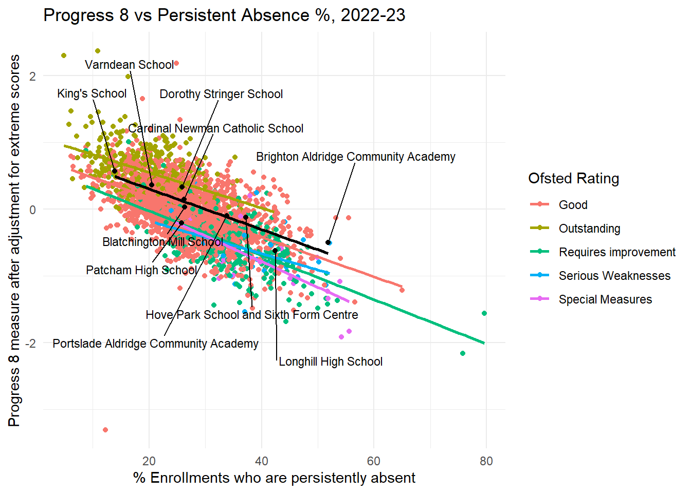
Figure 14: Progress 8 vs Persistent Absence, by OfSted Rating, All Schools in England, 2022/23. Brighton Schools Overlaid.
Code
ggplot(filtered_data, aes(y = P8MEA, x = PPERSABS10, colour = OFSTEDRATING)) +geom_point() +geom_smooth(method ="lm", se =FALSE) +# Add linear model line for england_school_2022_23labs(title ="Progress 8 vs Persistent Absence %, 2022-23",x ="% Enrollments who are persistently absent",y ="Progress 8 measure after adjustment for extreme scores",color ="Ofsted Rating") +theme_minimal() +facet_wrap(~ OFSTEDRATING) # Facet plots for each Ofsted rating
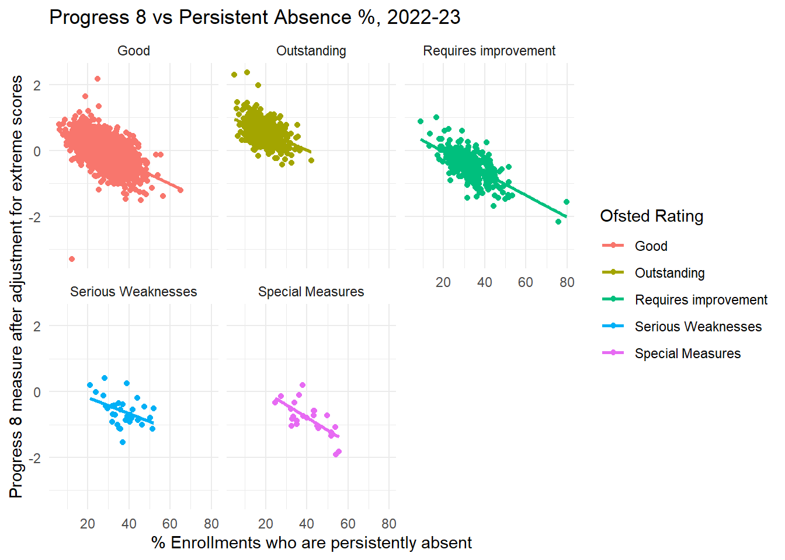
Figure 15: Progress 8 vs Persistent Absence, by OfSted Rating, All Schools in England, 2022/23.
By grouping observations according to the Ofsted rating of the school, there is an impact on both the slopes and the intercepts of the relationship between persistent absence and Progress 8 score.
The line intercepts now run in order from outstanding to special measures, with Outstanding schools having the highest intercepts (theoretical value of Progress 8 if 0% persistent absence) and RI / Special measures at the bottom. Which makes intuitive sense - all other things being equal, if no schools had any persistent absence, even though it predicts almost 50% of the variation in P8, the other qualities of Outstanding schools are likely to make their P8 scores better.
The slopes also become less steep as you get towards Outstanding. This means that for outstanding schools, even though persistent absence still affects their P8 scores negatively, the effect is less severe than for good, requires improvement or special measures schools, where the effect is sucessively more amplifed.
For Brighton (see Figure 16 below for a zoomed in view - or here for an interactive version), most of the schools in the city are rated good in 2022/23 (except for Longhill and BACA which are ‘requires improvement’).
The relationship between persistent absence and attainment, on average, appears no different in Brighton than it does in the rest of the country. It’s slope and intercept are similar to the ‘good schools’ slope for the rest of the country.
We already know that BACA and Longhill have serious problems with students who are persistently absent from those schools and it would appear that reducing persistent absence at these schools to anything even near to the city average, would have a big impact on attainment.
It’s worth nothing that this is 2022/23 data and in 2023/24, the P8 situation for BACA and Blatchington mill gets better, but worse for Longhill and Patcham.
In some ways, despite BACA having such dire persistent absence, for a school with that many students not attending on a regular basis, it falls above the city regression line. This means in some senses, it is actually doing better for its students, attainment wise, than we would expect.
The opposite is true for Longhill and Patcham - relative to their persistent absence rates, these schools are doing worse than we would expect - they are below the black regression line. Both would still certainly improve if they cut their persistent absence rates, but it is clear that there are other things also going on. More so than in other schools.
Code
ggplot(england_school_2022_23_not_special, aes(y = P8MEA, x = PPERSABS10, colour = OFSTEDRATING)) +geom_point(data = btn_sub, aes(y = P8MEA, x = PPERSABS10, colour = OFSTEDRATING)) +geom_smooth(data = btn_sub, aes(y = P8MEA, x = PPERSABS10), method ="lm", se =TRUE, color ="black") +# Add linear model line for btn_subgeom_text_repel(data = btn_sub, aes(y = P8MEA, x = PPERSABS10, label = SCHNAME.x), color ="black", size =3, nudge_y =c(-1.5, 1.5), force =10, box.padding =0.5, max.overlaps =10, direction ="both") +# Add linear model line for england_school_2022_23labs(title ="Progress 8 vs Persistent Absence %, 2022-23",x ="% Enrollments who are persistently absent",y ="Progress 8 measure after adjustment for extreme scores") +theme_minimal()
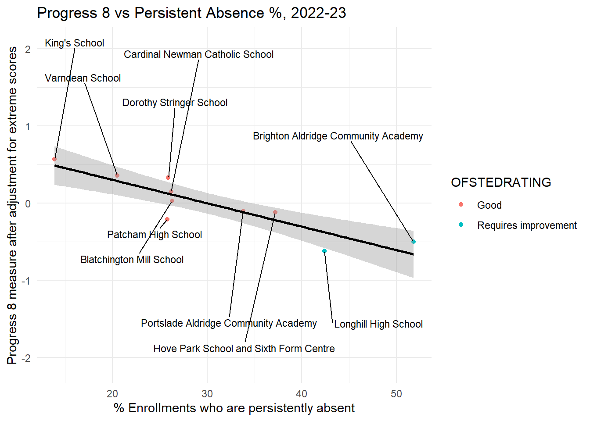
Figure 16: Progress 8 vs Persistent Absence, by OfSted Rating, Brighton and Hove Schools Only
Attainment 8
Code
filtered_data <- eng_sch_2022_23_not_special_plus %>%filter(OFSTEDRATING !="Inadequate"&!is.na(OFSTEDRATING))filtered_region <- eng_sch_2022_23_not_special_plus %>%filter(OFSTEDRATING !="Inadequate"&!is.na(OFSTEDRATING) &!is.na(gor_name))btn_sub <- filtered_region %>%filter(URN %in% btn_urn_list$urn)# Base plot with england_school_2022_23plot <-ggplot(filtered_data, aes(y =log(ATT8SCR), x =log(PPERSABS10), colour = OFSTEDRATING)) +geom_point() +geom_smooth(method ="lm", se =FALSE) +labs(title ="Attainment 8 vs Persistent Absence %, 2022-23",x ="log(% Enrollments who are persistently absent)",y ="log(Attainment 8 measure)",color ="Ofsted Rating") +theme_minimal()# Add another layer with btn_sub points and labels with sticksplot +geom_point(data = btn_sub, aes(y =log(ATT8SCR), x =log(PPERSABS10)), color ="black") +geom_smooth(data = btn_sub, aes(y =log(ATT8SCR), x =log(PPERSABS10)), method ="lm", se =FALSE, color ="black") +# Add linear model line for btn_subgeom_text_repel(data = btn_sub, aes(y =log(ATT8SCR), x =log(PPERSABS10), label = SCHNAME.x), color ="black", size =3, nudge_y =c(-0.5, 0.5), force =10, box.padding =0.5, max.overlaps =10, direction ="both") +ylim(2,5) +xlim(1,6)#ggsave(here("images","progress8_vs_persabs.png"), width = 10, height = 6, dpi = 300)
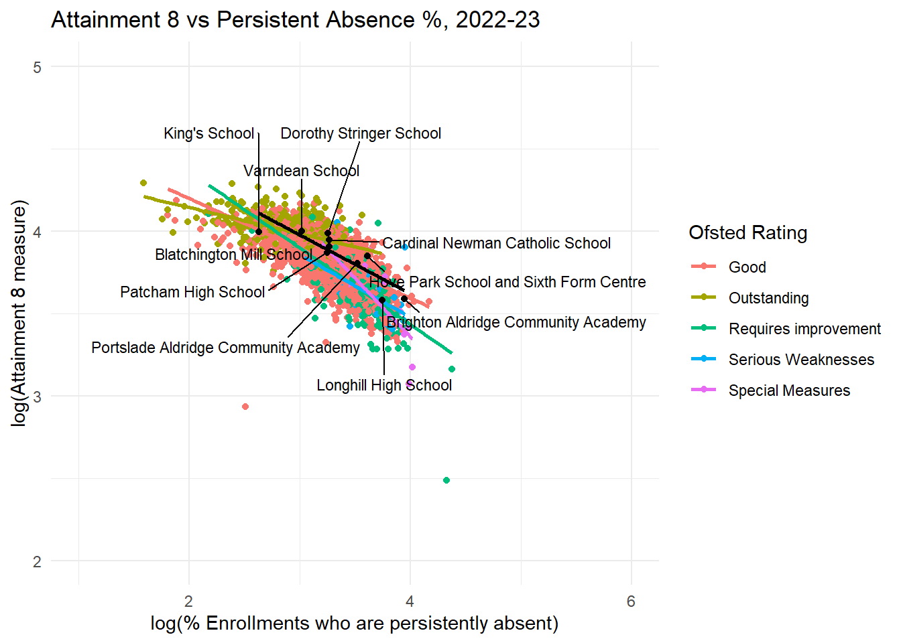
Figure 17: Attainment 8 vs Persistent Absence, by OfSted Rating, All Schools in England, 2022/23. Brighton Schools Overlaid.
Code
ggplot(filtered_data, aes(y =log(ATT8SCR), x =log(PPERSABS10), colour = OFSTEDRATING)) +geom_point() +geom_smooth(method ="lm", se =FALSE) +# Add linear model line for england_school_2022_23labs(title ="Attainment 8 vs Persistent Absence %, 2022-23",x ="log(% Enrollments who are persistently absent)",y ="log(Attainment 8 measure)",color ="Ofsted Rating") +theme_minimal() +ylim(2.5,5) +facet_wrap(~ OFSTEDRATING) # Facet plots for each Ofsted rating
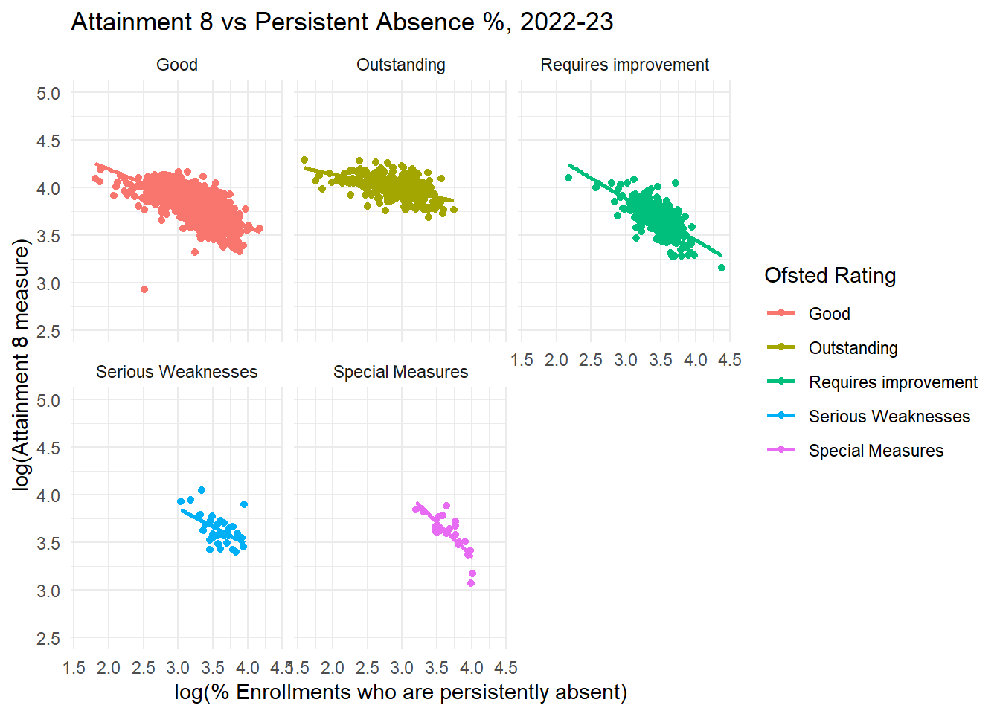
Figure 18: Attainment 8 vs Persistent Absence, by OfSted Rating, All Schools in England, 2022/23.
Code
ggplot(england_school_2022_23_not_special, aes(y = ATT8SCR, x = PPERSABS10, colour = OFSTEDRATING)) +geom_point(data = btn_sub, aes(y = ATT8SCR, x = PPERSABS10, colour = OFSTEDRATING)) +geom_smooth(data = btn_sub, aes(y = ATT8SCR, x = PPERSABS10, linetype ="LM - btn_sub", colour ="LM - btn_sub"), method ="lm", se =TRUE, color ="black", alpha =0.5, show.legend =TRUE) +geom_smooth(data = england_school_2022_23_not_special, aes(y = ATT8SCR, x = PPERSABS10, linetype ="LM - National", colour ="LM - National"), method ="lm", formula = y ~exp(-0.05*x), se =TRUE, alpha =0.5, show.legend =TRUE) +geom_text_repel(data = btn_sub, aes(y = ATT8SCR, x = PPERSABS10, label = SCHNAME.x), color ="black", size =3, nudge_y =c(-1.5, 1.5), force =10, box.padding =0.5, max.overlaps =10, direction ="both") +labs(title ="Attainment 8 vs Persistent Absence %, 2022-23",x ="% Enrollments who are persistently absent",y ="Attainment 8 measure after adjustment for extreme scores",colour ="Ofsted Rating",linetype ="Model Type") +theme_minimal() +xlim(10, 60)
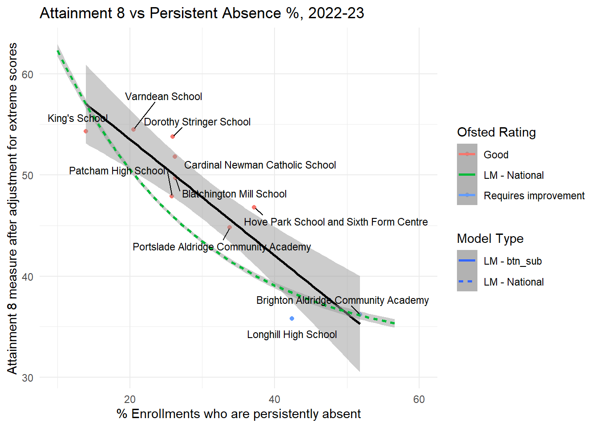
Figure 19: Attainment 8 vs Persistent Absence, by OfSted Rating, Brighton and Hove Schools Only
Observations
For completeness I have also shown Attainment 8 here, but the patterns are broadly similar to Progress 8, so I won’t dwell on them here.
Regional Effects - Persistent Absence
For comparison, we can try other data groupings to see if these reveal anything else within the data. Below in Figure 20 and Figure 21 the data are grouped according to region. I have done this as we already know from work in previous weeks, that London is an outlier educationally (generally achieving better attainment scores than the rest of the country and doing better by its most disadvantaged pupils).
Code
# Base plot with england_school_2022_23plot <-ggplot(filtered_region, aes(y = P8MEA, x = PPERSABS10, colour = gor_name)) +geom_point() +geom_smooth(method ="lm", se =FALSE) +# Add linear model line for england_school_2022_23labs(title ="Progress 8 vs Persistent Absence %, 2022-23",x ="% Enrollments who are persistently absent",y ="Progress 8 measure after adjustment for extreme scores",color ="Region") +theme_minimal()# Add another layer with btn_sub points and labels with sticksplot +geom_point(data = btn_sub, aes(y = P8MEA, x = PPERSABS10), color ="black") +geom_smooth(data = btn_sub, aes(y = P8MEA, x = PPERSABS10), method ="lm", se =FALSE, color ="black") +# Add linear model line for btn_subgeom_text_repel(data = btn_sub, aes(y = P8MEA, x = PPERSABS10, label = SCHNAME.x), color ="black", size =3, nudge_y =c(-1.5, 1.5), force =10, box.padding =0.5, max.overlaps =10, direction ="both") #ggsave(here("images","progress8_vs_persabs.png"), width = 10, height = 6, dpi = 300)
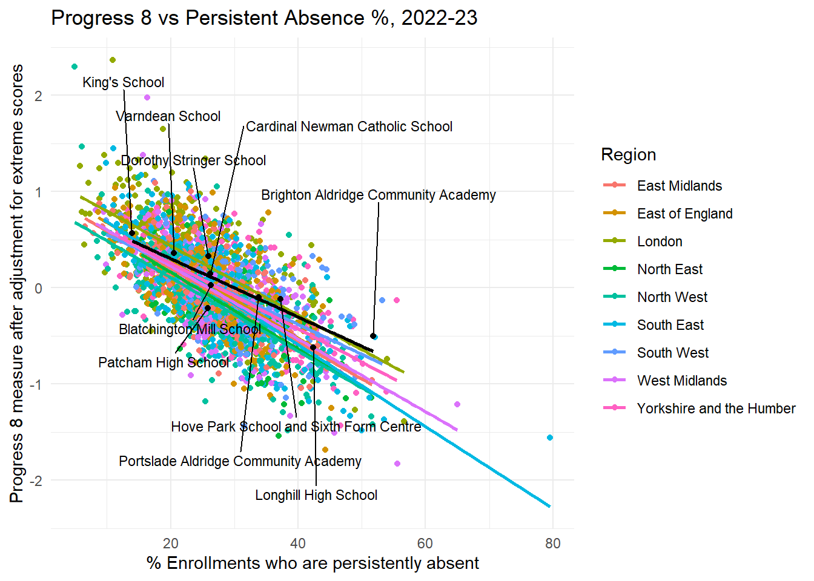
Figure 20: Progress 8 vs Persistent Absence, by Region, All Schools in England, 2022/23. Brighton Schools Overlaid.
Code
ggplot(filtered_region, aes(y = P8MEA, x = PPERSABS10, colour = gor_name)) +geom_point() +geom_smooth(method ="lm", se =FALSE) +# Add linear model line for england_school_2022_23labs(title ="Progress 8 vs Persistent Absence %, 2022-23",x ="% Enrollments who are persistently absent",y ="Progress 8 measure after adjustment for extreme scores",color ="Region") +theme_minimal() +facet_wrap(~ gor_name) # Facet plots for each region
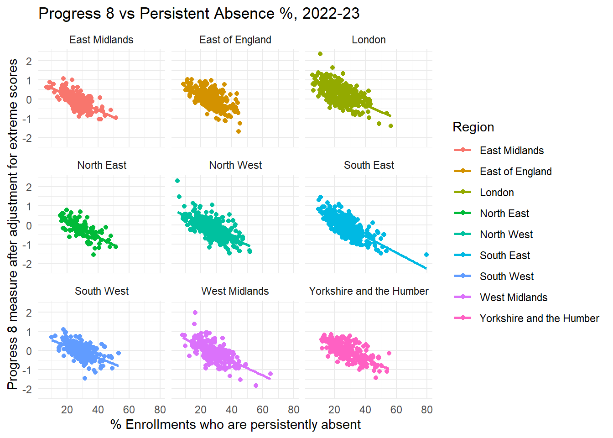
Figure 21: Progress 8 vs Persistent Absence, by Region, All Schools in England, 2022/23.
Slightly contrary to what I might have expected, there doesn’t appear to be much of an obvious regional effect, although peering closely, it is possible to see that the intercept for London is a bit higher than for everywhere else, although most of the slopes look to be parallel for most regions, indicating absence has a similar effect wherever you are in the country.
Interestingly, overlaying Brighton, we see that the slope is slightly shallower than for regions. Part of this is a function of the small number of schools in the city meaning drawing a reliable regression (bet-fit) line is hard because small changes to just one or two schools can have a big impact on the line.
One possible interpretation of the shallower line could be that it suggests that reducing persistent absence in the city might have slightly less of an impact on Progress 8 scores than it does in other regions. However, I don’t think this is the correct interpretation.
Having a look a what schools are impacting the line - https://www.desmos.com/calculator/oost57whub - it’s possible to observe that the shallowness of the line relative to English regions is a function of the small number of points and BACA performing better than would be expected given the very high number of persistent absentees in the school. Dropping BACA’s Progress 8 from -0.5 to something like -0.65 would bring the line down to something like the regional slopes.
Conversely, BACA’s 2023/24 improvement (although we don’t know the corresponding persistent absence) is likely to make the slope even shallower. So this is not that improving persistent absence in the city would have less impact than it would elsewhere in the country, rather BACA despite a headline ‘below average’ Progress 8 score, is actually doing much better than we would expect given the levels of persistent absence and this is pulling the slope upwards for the city.
Code
# Base plot with england_school_2022_23plot <-ggplot(filtered_region, aes(y =log(ATT8SCR), x =log(PPERSABS10), colour = gor_name)) +geom_point() +geom_smooth(method ="lm", se =FALSE) +# Add linear model line for filtered_regionlabs(title ="Attainment 8 vs Persistent Absence %, 2022-23",x ="log(% Enrollments who are persistently absent)",y ="log(Attainment 8 measure)",color ="Region") +theme_minimal()# Add another layer with btn_sub points and labels with sticksplot +geom_point(data = btn_sub, aes(y =log(ATT8SCR), x =log(PPERSABS10)), color ="black") +geom_smooth(data = btn_sub, aes(y =log(ATT8SCR), x =log(PPERSABS10)), method ="lm", se =FALSE, color ="black") +# Add linear model line for btn_subgeom_text_repel(data = btn_sub, aes(y =log(ATT8SCR), x =log(PPERSABS10), label = SCHNAME.x), color ="black", size =3, nudge_y =c(-1.5, 1.5), force =10, box.padding =0.5, max.overlaps =10, direction ="both")
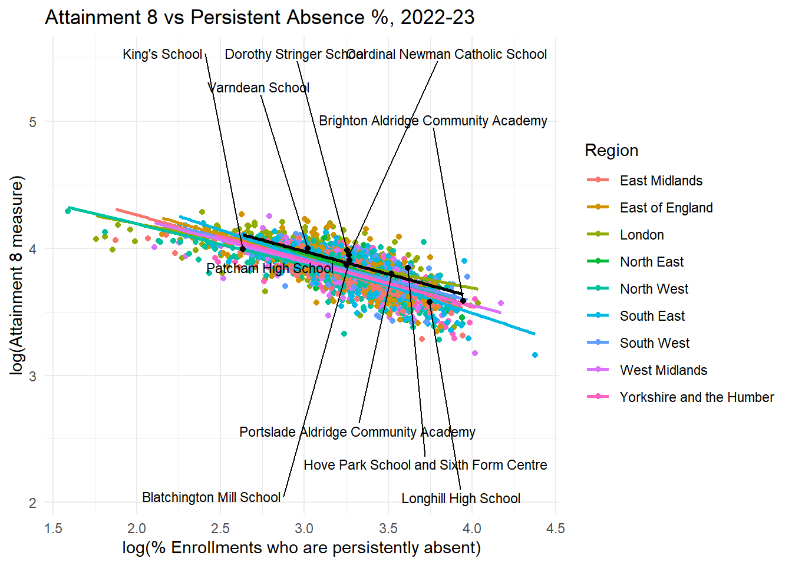
Figure 22: Log-Log Attainment 8 vs Persistent Absence, by Region, All Schools in England, 2022/23. Brighton Schools Overlaid.
Ofsted and Disadvantage
Progress 8
We already know that there is a less strong association between the proportion of disadvantaged students in a school and Progress 8, but for completeness, what does disaggregating the scatter plot in Figure 11 by Ofsted rating show us? We can see below:
Code
#colour = "#b3cde3"plot <-ggplot(filtered_data, aes(y = P8MEA, x = PTFSM6CLA1A, colour = OFSTEDRATING)) +geom_point() +geom_smooth(method ="lm", se =FALSE) +# Add linear model line for england_school_2022_23labs(title ="Progress 8 vs Disadvantaged Student %, 2022-23",x ="% Percentage of Disadvantaged Students",y ="Progress 8 measure after adjustment for extreme scores") +theme_minimal()# Add another layer with btn_sub points and labels with sticksplot +geom_point(data = btn_sub, aes(y = P8MEA, x = PTFSM6CLA1A), color ="black") +geom_smooth(data = btn_sub, aes(y = P8MEA, x = PTFSM6CLA1A), method ="lm", se =FALSE, color ="black") +# Add linear model line for btn_subgeom_text_repel(data = btn_sub, aes(y = P8MEA, x = PTFSM6CLA1A, label = SCHNAME.x), color ="black", size =3, nudge_y =c(-1.5, 1.5), force =10, box.padding =0.5, max.overlaps =10, direction ="both")#ggsave(here("images","progress8_vs_disadvantage.png"), width = 10, height = 6, dpi = 300)
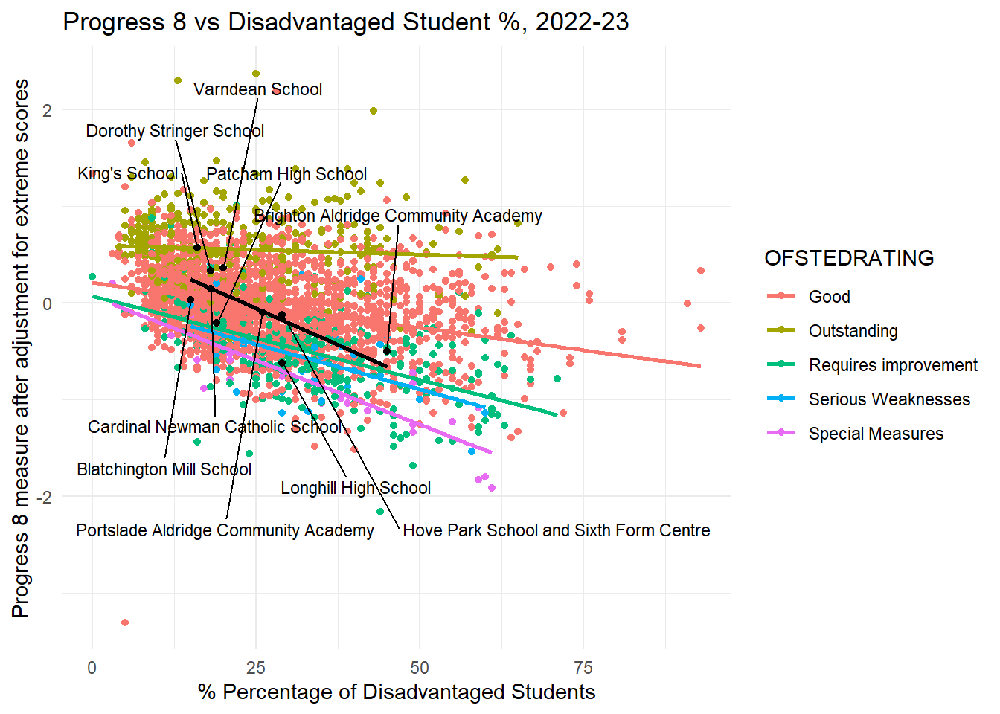
Figure 23: Progress 8 vs % Disadvantaged, by OfSted Rating, All Schools in England, 2022/23. Brighton Schools Overlaid.
Code
ggplot(filtered_data, aes(y = P8MEA, x = PTFSM6CLA1A, colour = OFSTEDRATING)) +geom_point() +geom_smooth(method ="lm", se =FALSE) +# Add linear model line for filtered_datalabs(title ="Progress 8 vs Disadvantaged Student %, 2022-23",x ="% Percentage of Disadvantaged Students",y ="Progress 8 measure after adjustment for extreme scores") +theme_minimal() +facet_wrap(~ OFSTEDRATING) # Facet plots for each Ofsted rating
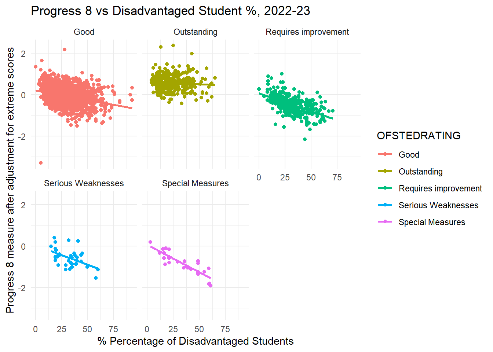
Figure 24: Progress 8 vs % Disadvantaged, by OfSted Rating, All Schools in England, 2022/23.
Code
ggplot(filtered_data) +geom_point(data = btn_sub, aes(y = P8MEA, x = PTFSM6CLA1A, colour = OFSTEDRATING)) +geom_smooth(data = btn_sub, aes(y = P8MEA, x = PTFSM6CLA1A), method ="lm", se =TRUE, color ="black") +# Add linear model line for btn_subgeom_text_repel(data = btn_sub, aes(y = P8MEA, x = PTFSM6CLA1A, label = SCHNAME.x), color ="black", size =3, nudge_y =c(-1.5, 1.5), force =10, box.padding =0.5, max.overlaps =10, direction ="both") +# Add linear model line for england_school_2022_23labs(title ="Progress 8 vs % Disadvantaged, 2022-23",x ="% Disadvantaged",y ="Progress 8 measure after adjustment for extreme scores") +theme_minimal()#export <- btn_sub[,c("P8MEA", "PTFSM6CLA1A")]
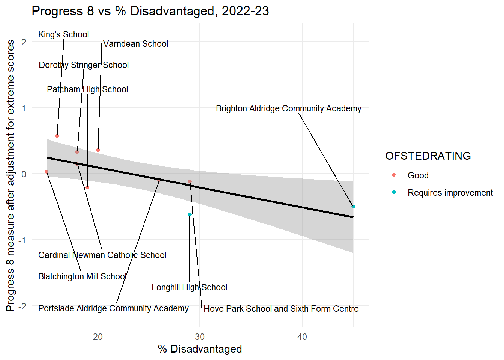
Figure 25: Progress 8 vs % Disadvantaged, by OfSted Rating, Brighton and Hove Schools Only
In many ways this is a fascinating plot as it shows what a difference the quality of the education at a school makes to disadvantage in a way it doesn’t for persistent absence.
If we look at the regression line for ‘outstanding’ we can see that it is almost flat - virtually no slope at all. This means that for outstanding schools, having a higher percentage of disadvantaged students makes very little difference to Progress 8 scores. We can contrast that with the similar line in Figure 14 where persistent absence still had a negative impact even for outstanding schools.
What this tells us is it’s possible for outstanding schools to mitigate the impact of disadvantage, but if the students aren’t in the school to begin with, no amount of outstanding teaching will remedy that.
The slope for Brighton is steeper than the slopes for schools grouped by all levels of Ofsted rating. However, zooming in on the plot (Figure 25 - or interactively here) and examining the slope and the points that are influencing it, it is clear that:
the distribution of the points means the line is not a very reliable summary (it’s a poor model for Brighton and likely statistically insignificant after controlling for levels of absence - we will come to this later.)
but looking at Kings, Stringer and Varndean, rather than schools with more disadvantaged students doing worse than expected, it is back to the point I made on advantaged and disadvantaged attainment in the city here - that Brighton and Hove is doing particularly well for its non-disadvantaged students and these schools are helping pull the line up at the top.
Attainment 8
Code
#colour = "#b3cde3"plot <-ggplot(filtered_data, aes(y =log(ATT8SCR), x =log(PTFSM6CLA1A), colour = OFSTEDRATING)) +geom_point() +geom_smooth(method ="lm", se =FALSE) +# Add linear model line for england_school_2022_23labs(title ="Attainment 8 vs Disadvantaged Student %, 2022-23",x ="% Percentage of Disadvantaged Students",y ="Attainment 8 measure after adjustment for extreme scores") +theme_minimal()# Add another layer with btn_sub points and labels with sticksplot +geom_point(data = btn_sub, aes(y =log(ATT8SCR), x =log(PTFSM6CLA1A)), color ="black") +geom_smooth(data = btn_sub, aes(y =log(ATT8SCR), x =log(PTFSM6CLA1A)), method ="lm", se =FALSE, color ="black") +# Add linear model line for btn_subgeom_text_repel(data = btn_sub, aes(y =log(ATT8SCR), x =log(PTFSM6CLA1A), label = SCHNAME.x), color ="black", size =3, nudge_y =c(-0.5, 0.5), force =10, box.padding =0.5, max.overlaps =10, direction ="both") +ylim(1,5)#ggsave(here("images","progress8_vs_disadvantage.png"), width = 10, height = 6, dpi = 300)
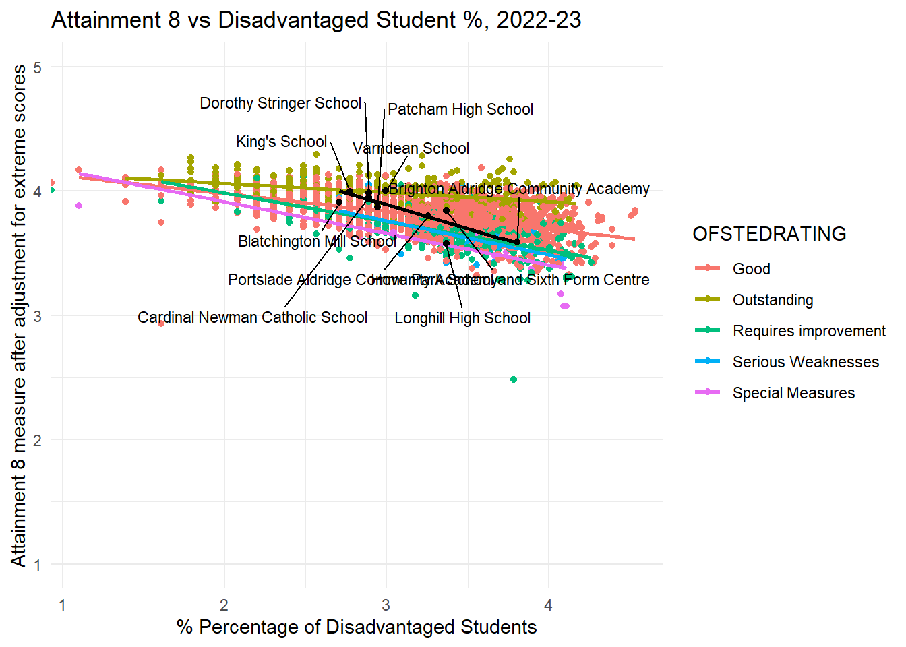
Figure 26: Attainment 8 vs % Disadvantaged, by OfSted Rating, All Schools in England, 2022/23. Brighton Schools Overlaid.
Code
ggplot(filtered_data, aes(y =log(ATT8SCR), x =log(PTFSM6CLA1A), colour = OFSTEDRATING)) +geom_point() +geom_smooth(method ="lm", se =FALSE) +# Add linear model line for filtered_datalabs(title ="Log-Log Attainment 8 vs Disadvantaged Student %, 2022-23",x ="log(% Percentage of Disadvantaged Students)",y ="log(Attainment 8 measure)") +theme_minimal() +ylim(1,5) +facet_wrap(~ OFSTEDRATING) # Facet plots for each Ofsted rating
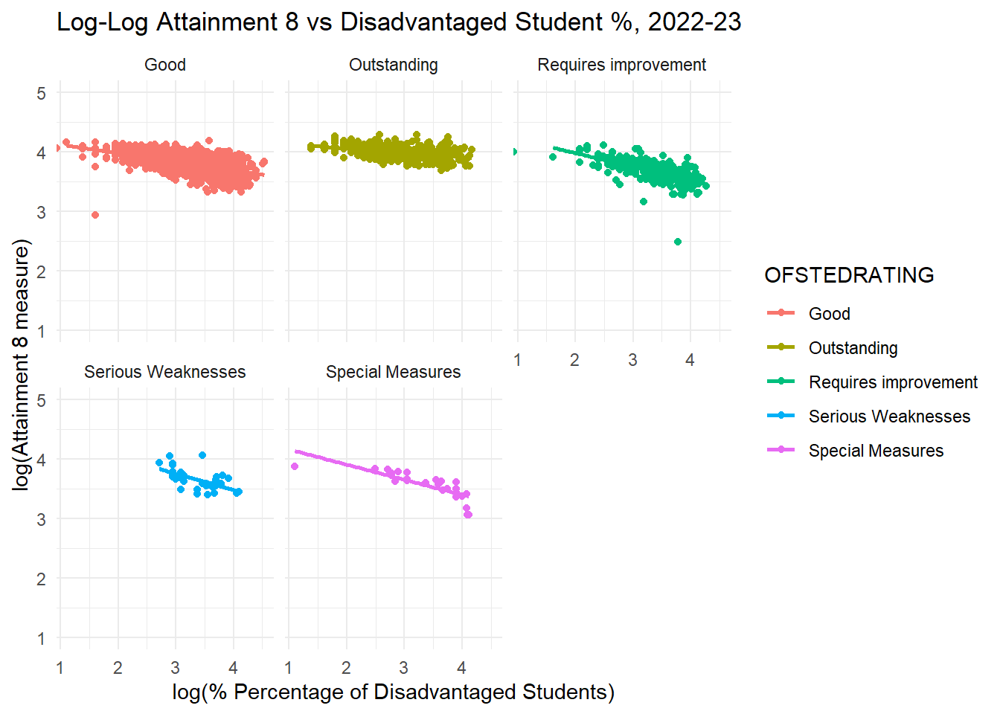
Figure 27: Log-Log Attainment 8 vs % Disadvantaged, by OfSted Rating, All Schools in England, 2022/23.
Code
ggplot(filtered_data) +geom_point(data = btn_sub, aes(y = ATT8SCR, x = PTFSM6CLA1A, colour = OFSTEDRATING)) +geom_smooth(data = btn_sub, aes(y = ATT8SCR, x = PTFSM6CLA1A), method ="lm", se =TRUE, color ="black") +# Add linear model line for btn_subgeom_text_repel(data = btn_sub, aes(y = ATT8SCR, x = PTFSM6CLA1A, label = SCHNAME.x), color ="black", size =3, nudge_y =c(-1.5, 1.5), force =10, box.padding =0.5, max.overlaps =10, direction ="both") +# Add linear model line for england_school_2022_23labs(title ="Attainment 8 vs % Disadvantaged, 2022-23",x ="% Disadvantaged",y ="Attainment 8 measure") +theme_minimal()#export <- btn_sub[,c("P8MEA", "PTFSM6CLA1A")]
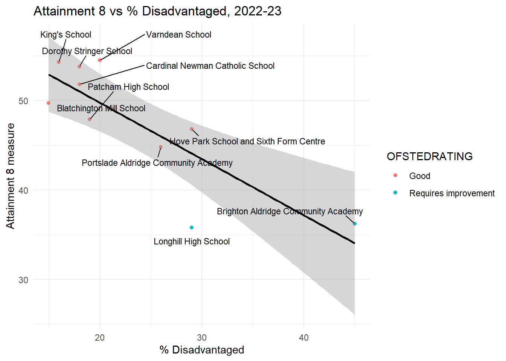
Figure 28: Attainment 8 vs % Disadvantaged, by OfSted Rating, Brighton and Hove Schools Only
Again, looking at raw attainment doesn’t tell a different story. The relationship between Attainment 8 and absence is far stronger than it is for disadvantage.
In Brighton, it appears that the effect of the relationship between disadvantage and attainment is steeper than for the country average, however, this is an artefact of a number of schools pulling overall attainment up at the top, rather than others pulling it down at the bottom.
That said, Longhill consistently performs worse than would be expected on both Progress 8 and Attainment 8, relative to other schools with similar levels of disadvantage. Hove Park has similar levels of deprivation, but crucially, much lower rates of persistent absence and the contrast between the outcomes of the two schools is stark.
The point above is a crucial narrative point. We have been told throughout this whole process that it is all about disadvantage, when actually, the evidence is very strongly suggesting that it’s all about absence.
Interpretation
The fact that the scatters plot in Figure 11 / Figure 23 and Figure 13 / Figure 26 suggest there is a weak relationship between disadvantage and attainment in Brighton should be ringing big alarm bells for Brighton and Hove Council at this point. The consultation is built upon the premise that poor attainment in the city is driven by disadvantage, when the evidence presented here is suggesting at best there a weak association and one which is dwarfed by the persistent absence problem.
But one thing we haven’t done yet is look at how much more important persistent absence is than disadvantage and how these compare each other directly and with other factors like Ofsted rating or just being in London. We can also see below in Figure 29 that there is a small amount of positive correlation between absence and disadvantage, so does this matter as well?
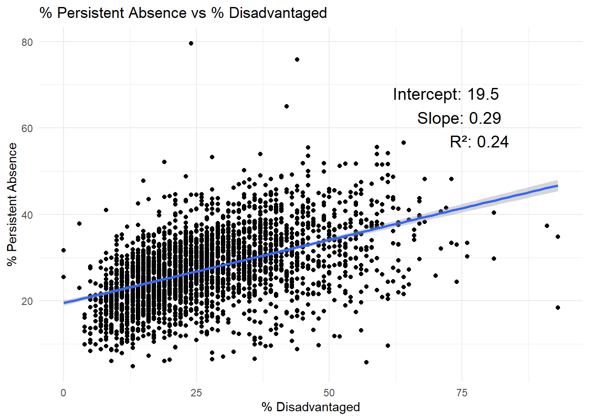
Figure 29: % Persistent Absent vs % Disadvantaged, All Schools in England, 2022/23.
A Model of Attainment
So far we have explored some of the factors that might affect Progress/Attainment 8 Scores in schools across England through visualisation. This is an incredibly useful starting point - and something I would encourage all of my students to do at the beginning of any piece of similar analysis. But while scatter plots are fantastic at allowing us to explore data with two dimensions (\(x\) and \(y\)) and while it is possible to explore things in three dimensions (see Figure 30 below), we can’t go beyond 3-dimensions visually and the analysis starts to become awkward.
Fortunately, we have done the ground-work above to allow us to begin to make use of some of the statistics which described our plots, to try to understand how multiple variables can affect attainment and compare them with each other to build a more complete understanding of the relative importance of each of the factors we have already explored in this piece.
Code
library(plotly)fig <-plot_ly(filtered_data, x =~PTFSM6CLA1A, y =~P8MEA, z =~PERCTOT, color =~OFSTEDRATING)fig <- fig %>%add_markers()fig <- fig %>%layout(scene =list(xaxis =list(title ='% Disadvantaged'),yaxis =list(title ='Progress 8'),zaxis =list(title ='% Persistent Absence')))fig
Figure 30: Progress 8 vs % Persistent Absent vs % Disadvantaged, All Schools in England, 2022/23.
A Multiple Linear Regression Model of Attainment at English Schools, 2022/23
We can combine all of the variables we have explored above and look at their combined effects on Progress 8 using a simple multiple linear regression model - the workhorse of all statistical models.
I’m not going to go into details about regression modelling here - suffice to say, if you are interested, there is a lot of material out there. All of my code for these outputs are in this document. All it is worth saying at this point is, if you were able to understand the ideas around the scatter plots and the lines of best fit from earlier and had a reasonable understanding of things like the slope, the intercept and the \(R^2\) , then you have pretty much got everything you need to understand what will come out of a regression model.
This is something I was asked about in the recent council meeting - A KEY thing to note about multiple regression models is because they allow you to look at several variables at the same time, where one variable is more important than the others, it will emerge in the analysis. And indeed, where they might overlap a bit (such as with absence and disadvantage) the one that is more important will shine more brightly.
In the models I will present below, the variables are the names in the original data file, so to be clear, these are:
P8MEA - School Level Progress 8 Score in 2022/23 at the end of KS4, adjusted for extreme values
PPERSABS10 - Percent of Pupils who are Persistently Absent (missing over 10% of sessions)
PTFSM6CLA1A - Percentage of Pupils who are classified as ‘disadvantaged’ - having received Free School Meals at any point in the preceding 6 years.
OFSTEDRATING - Ofsted rating at the last inspection
gor_name - name of the Government Office Region the School resides within
In the regression model, just as in the scatter plots, Progress 8 is the variable on the \(y\)-axis. In regression parlance, it is also known as the ‘dependent variable’. In the model, we are trying to see what the combined effect the other variables (\(x\)-variables, or independent variables) have on explaining variation in Progress 8.
When we run the model using a piece of standard statistical software (I’m using R here) we get a series of outputs which tell us how well we can explain \(y\) (Progress 8). The main outputs are the same as we saw earlier - an intercept value, some estimates of the slope parameters and an \(R^2\) for the whole model.
We also get some other useful pieces of information -
a ‘standard error’ number - this is essentially a numeric representation of how close or far the black dots not on the blue line in Figure 8 and Figure 11 are away from that line. Big standard errors relative to the slope value show that that value is probably not reliable.
a t-statistic. This is useful as it is the slope value divided by the standard error and has the properly of then effectively being standardised and so comparable with other t-values in the model. I often use them as a short-hand for indicating which variables in the model are most important.
a p-value. The p-value is calcuated from the t-statistic and is a shorthand for determining whether a variable is ‘statistically significant’ in the model. I won’t go into the detail now, but the rule-of-thumb frequently used in statistics is if the p-value is less than 0.05, then this says that there is a greater than 0.95 (95%) probability that the slope value / estimate is reliable and a true relationship between the x variable in question and the y variable we are trying to predict. 95% confidence is the usual stamp of approval in a statistical analysis.
## regression modellibrary(gglm)library(car)library(jtools)library(kableExtra)# Create a linear modelmodel <-lm(P8MEA ~ PPERSABS10 + PTFSM6CLA1A + OFSTEDRATING, data = filtered_region)#summary(model)#vif_values <- car::vif(model)#vif_valuessumm(model, scale = F)
Observations
2517 (42 missing obs. deleted)
Dependent variable
P8MEA
Type
OLS linear regression
F(6,2510)
508.03
R²
0.55
Adj. R²
0.55
Est.
S.E.
t val.
p
(Intercept)
0.80
0.03
31.69
0.00
PPERSABS10
-0.03
0.00
-28.11
0.00
PTFSM6CLA1A
-0.00
0.00
-5.48
0.00
OFSTEDRATINGOutstanding
0.37
0.02
18.69
0.00
OFSTEDRATINGRequires improvement
-0.24
0.02
-11.55
0.00
OFSTEDRATINGSerious Weaknesses
-0.29
0.07
-3.96
0.00
OFSTEDRATINGSpecial Measures
-0.40
0.09
-4.32
0.00
Standard errors: OLS
Code
#gglm(model)
Plot of Model 1 scaled slope coefficients
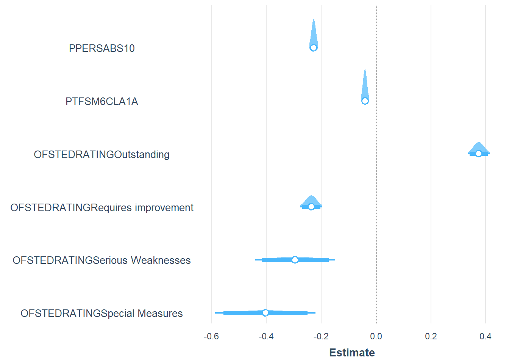
Observations and Interpretation - Model 1
Model 1 includes:
Persistent Absence
Disadvantage
Ofsted ratings - relative to “Good” (which is set to zero).
All variables are statistically significant and the model has an \(R^2\) of 0.55, meaning the variables included explain 57% of the variance in Progress 8 Score across schools in England. This is a good model with strong predictive power.
Standardised t-values indicate which variables are having the most influence on explaining that variation in Progress 8.
Persistent Absence - PPRESABS10 - is the most important variable in the model with a negative t-value of -28.11 (Progress 8 goes down as absence goes up). The next most important is Ofsted-Outstanding with a positive t-value of 18.69 (being in an outstanding school pushes Progress 8 up). The next most important is Ofsted - requires improvement, which has a negative t-value of -11.55.
The overall % of disadvantaged students has a negative effect as we would expect, but it is a comparatively small effect compared to these other variables, with a t-value of only -5.48.
The standardised plot below the tabular output give a visual representation of this overall pattern. Here the coefficients have been scaled so they are not the t-values, but the broad patterns are the same and are perhaps more intuitive to interpret.
This model provides a robust statistical corroboration of the patterns we were inferring from the scatterplots earlier in this analysis. Absence, not disadvantage is the most important factor in determining outcomes. This, of course, is exactly what the wider literature was already telling us, but crucially, not the message that was coming out of Brighton and Hove council when we have been told over and again - not based on any evidence - that disadvantage is what needs to be focused on to improve attainment.
We can take this model further and add additional variables in to see if we can explain any more of the variation. What about the ‘London effect’ for example?
Results - Model 2: Progress 8 ~ % Persistent Absence + % Disadvantage + Ofsted rating + Government Office Region
Code
# Create a linear model# Filter out rows with missing valuesfiltered_region <- filtered_region %>%filter(!is.na(P8MEA) &!is.na(PPERSABS10) &!is.na(PTFSM6CLA1A) &!is.na(OFSTEDRATING) &!is.na(gor_name))# Fit the linear model againmodel2 <-lm(P8MEA ~ PPERSABS10 + PTFSM6CLA1A + OFSTEDRATING + gor_name, data = filtered_region)# Add the fitted values to the data framefiltered_region$model2.fitted <-fitted(model2)filtered_region$model2.resids <-residuals(model2)btn_sub <- filtered_region %>%filter(URN %in% btn_urn_list$urn)#summary(model2)#vif_values <- car::vif(model)#vif_valuessumm(model2, scale = F)
ggplot(filtered_region, aes(x = PPERSABS10)) +geom_point(data = btn_sub, aes(y = model2.fitted, x = PPERSABS10, colour ="lightgreen")) +geom_point(data = btn_sub, aes(y = P8MEA, x = PPERSABS10, colour = OFSTEDRATING)) +geom_smooth(data = filtered_region, aes(y = model2.fitted, x = PPERSABS10), method ="lm", se =TRUE, color ="black") +# Add linear model line for btn_subgeom_text_repel(data = btn_sub, aes(y = P8MEA, x = PPERSABS10, label = SCHNAME.x), color ="black", size =3, nudge_y =c(-2.5, 2.5), force =10, box.padding =0.5, max.overlaps =10, direction ="both") +labs(title ="Model Estimate (Green) vs % Persistent Absence, 2022-23",x ="% Persistent Absent",y ="Progress 8 measure after adjustment for extreme scores") +theme_minimal() +geom_segment(data = btn_sub, aes(x = PPERSABS10, xend = PPERSABS10, y = P8MEA, yend = model2.fitted), linetype ="dotted", color ="black", alpha =0.5) +theme(legend.position ="none")
`geom_smooth()` using formula = 'y ~ x'
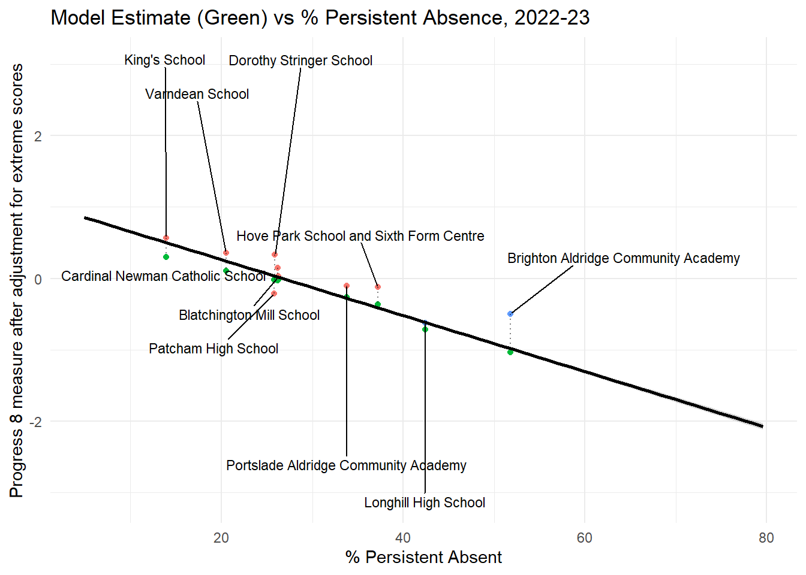
Figure 31: Model Estimate (Green) vs % Persistent Absence, by OfSted Rating, Brighton and Hove Schools Only
Observations and Interpretation - Model 2
Model 2 is essentially the same as Model 1, but this time incorporates a further ‘region’ variable.
The model fit is better - we are now explaining 58% of the variation in Progress 8 scores with the variables we have chosen. We can, of course, keep building this model and adding additional variables in. For now, as we have explained most of the variance in the model, we will not keep going. In future weeks, I may go further, however.
Where we have p-values of >0.05, these variables are statistically insignificant, so we can ignore their parameters - they are not influencing the model. This is the case for a lot of the regions, however, London sticks out as it is both statistically significant and positive on its effect on attainment. This aligns with observations we have made in previous weeks about the importance of London in England’s education story.
Most of the other variables don’t change much with the addition of regions, however the importance of absence decreases slightly (London having low rates of absence, in accounting for it separately in the model, it makes sense that some of that effect from London disappears). Similarly, the affect of disadvantage increases slightly - again, an impact of including London which has very high levels of disadvantage, but also high levels of attainment in that disadvantage, so including London increases the effect elsewhere.
However, even with London in the model, Absence is still the most important factor by far, followed by being an Ofsted outstanding school and not a requires improvement school. Interestingly, the London effect is similar to the disadvantage effect.
Plotting schools and their observed Progress 8 values against the model estimates - Figure 31 - it is clear to see which schools are doing well relative to the model predictions based on their observed persistent absence, rates of disadvantage, ofsted rating and region.
Green dots are the model estimates. Blue and Red dots are the observed school values.
Observed values vertically above their modelled green dots are known as positive residuals and show schools which, given their circumstances, are doing better than expected. Those below their dots - negative residuals - are doing worse.
BACA, despite the challenges it faces, has a large residual value and shows it is doing well, relative to what we would expect.
Patcham, despite the relative benefits afforded by lower levels of persistent absence, disadvantage and being a good school, does worse than we would expect.
Nearly all other schools in the city are doing better than the model would have predicted with positive residuals. This shows that despite the challenges faced by most Brighton schools, they are doing well relative to the factors that might otherwise hinder their progress.
Results - Model 3: Progress 8 ~ % Persistent Absense + % Disadvantage - Brighton Only
Running a model on just Brighton data in 2022/23 is unreliable - not enough observations so weird behaviour going on - however we can still look at it, just maybe not draw firm conclusions from the patterns revealed.
At city level, persistent absence and FSM pretty strongly co-linear (not the case nationally) - variance inflation factor above 6. Very high probability that any observations of influence of disadvantage at city level, actually to do with absence instead (given what we have observed at the national level - absence more important than disadvantage).
Two variable model for Brighton shows that absence dominates - statistically significant predictor of Progress 8. In the presence of this relationship, disadvantage becomes statistically insignificant (and weirdly positive).
In Brighton then, despite there being a high correlation between disadvantage and absence, absence is far more important and essentially invalidates any perceived effects on attainment that we may think disadvantage has.
Conclusions
Multiple regression models allow us to take the same underlying principles for making associations between continuous variables as scatter plots, but allow us to do so in multiple dimensions at the same time.
Multiple regression is particularly useful as including a number of independent variables at the same time in a model allows for their effects on the dependent variable to be evaluated at the same time. This is particularly useful when there might be some degree of correlation between independent variables such as in our case with persistent absence and disadvantage.
Levels of correlation between these two variables were not high enough to cause problems of double counting (known as ‘multicollinearity’ in statistical terms) but enough that any apparent effects of disadvantage are overridden by the more important absence factors.
The importance of being an outstanding school or not a require improvement school came through in the modelling. Again, as these effects were assessed at the same time as the effects of attendance and disadvantage, these effects can be seen as in addition to, rather than affected by, these factors. This is an important distinction to make: outstanding schools have a positive effect on Progress 8 attainment levels, regardless of their levels of disadvantage or absence. Requires improvement schools, on the other hand, tend to have a negative effect on Progress 8, despite these other factors.
Given these clear statistical patterns and earlier plots show definitively, any policy which fails to tackle persistent absence is likely to make very little impact on attainment levels in Brighton and Hove. As the Attainment 8 plots show - Figure 12 - policies that zoom in on disadvantage and try to adjust distributions and concentrations are likely to only have positive impact on the schools where concentrations are reduced below 20%.
Brighton’s city average disadvantage rates are too high to make any noticeable positive impact on attainment even if all schools were levelled to the city average - a reduction from 50% to 25% will make only marginal impact on Attainment 8.
if levels of absence are increased, it is clear that these negative impacts will easily cancel out any marginal gains from
Good and outstanding schools can and often are good and outstanding regardless of the challenges faced by the cohorts of students they teach. Policies that focus on bringing requires improvement schools up will have a far greater impact on attainment levels.
How Bad Policy Will Make Attainment Even Worse
Unfortunately, not only is Brighton and Hove City Council misdiagnosing the malady and trying to prescribe an incredibly unpopular treatment (moving students away from their local schools and manufacturing a situation where up to 30% of students in the city have to attend schools outside of their catchment), it is also the case that the treatment is actually highly likely to make things MUCH WORSE.
The policies in the consultation, especially the 20% open ballot, will lead to up to 30% of the students in the city attending schools outside their catchment. For many, attending schools outside of catchment will mean long journeys on public transport with distance of travel to school having a direct impact on attendance, as will be shown below.
The scale of the deliberate displacement proposed, however, is unprecedented. The council have tried to argue that they have ‘never guaranteed a place at any school to any student’ - which I’m sure is true. But to my mind they have also never actively engaged in trying to stop students from attending their local schools in the name of an ill-conceived educational experiment. And they have also stated in the past that their broad aim is to match the number of places in a catchment area to the number of students in the catchment area - this is a significant departure.
Numbers of Displaced Students Over Time in Brighton and Hove
Code
displacement_cumulative_long <- displacement_cumulative %>%pivot_longer(cols =c(`2026`, `2027`, `2028`, `2029`, `2030`), names_to ="year", values_to ="value") %>%filter(number_categories %in%c("20% Choice Marginal Ballot", "10% Displaced by Marginal Ballot"))pupils_data <- displacement_cumulative %>%select(number_categories, `2026`, `2027`, `2028`, `2029`, `2030`) %>%filter(number_categories =="Pupils") %>%pivot_longer(cols =c(`2026`, `2027`, `2028`, `2029`, `2030`), names_to ="year", values_to ="pupils_value")combined_data <-merge(displacement_cumulative_long, pupils_data, by =c("number_categories", "year"))ggplot() +geom_bar(data = pupils_data, aes(x = year, y = pupils_value), stat ="identity", fill ="lightgrey", alpha =0.5) +geom_bar(data = displacement_cumulative_long, aes(x = year, y = value, fill = number_categories), stat ="identity") +labs(title ="Cumulative numbers of displaced pupils by 2030 (council estimates)",x ="Year",y ="Number of Pupils",fill ="Number Categories") +theme_minimal() +scale_fill_manual(values =c("20% Choice Marginal Ballot"="#1f78b4", "10% Displaced by Marginal Ballot"="#33a02c", "Total Pupils Affected"="lightgrey")) # Custom colors for categories
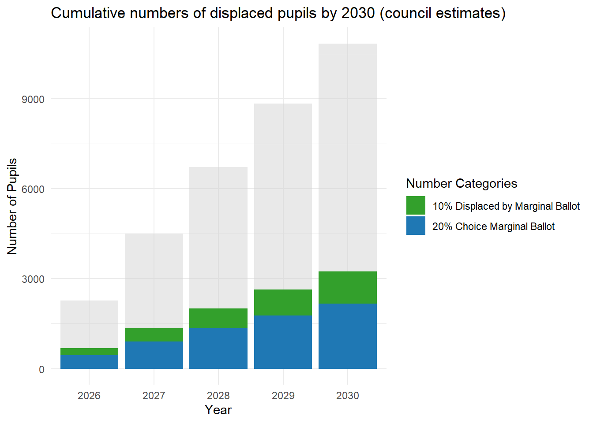
Observations
If implemented in 2026, 454 students will be permitted to attend out of catchment schools through ‘choice’ (inverted commas as for some, a 4th choice will be a low down priority, but still treated above that of a 1st choice, non-sibling, non-FSM child within catchment). As a result of this ‘choice’ a further 223 children will be displaced from their own catchments as there will be no places left at their catchment schools.
In the first year, the total number of displaced students will be 677 - according to the figures released by the council (student estimates, multiplied by published probabilities).
Each subsequent year a similar number of students is added to the travel pile until in 2030, 3,234 students every day have to travel to schools outside of their catchment area. 1/3 of the city’s student population.
We know the council is having serious financial challenges at present and it has a statutory duty to pay the bus fares for all journeys greater than 3-miles. In Brighton and Hove, currently the annual cost of a bus ticket is currently £445 - so even if, say, 1,000 of those 3,234 students travel over 3-miles, this will be an annual cost to the Council of £445,000.
I will not reiterate the environmental, social and community impacts of this as they have been voiced many times and they alone should be enough to make the council pause. However, here I am just focusing on educational outcomes, so let’s look at those.
Absence and Distance from School
Pupils who live further away from their school are absent more often. This is a fact derived from analysis from the fft Education Data Lab here.
Disadvantaged Students in furthest fifth miss up to 2% more sessions than those in the nearest fifth. This is equivalent to -0.1 Progress 8 score in Brighton, just from being further away. And this is a reliable estimate as the relationship between P8 and Persistent Absence is statistically significant in Brighton.
This is on-top of all of the other negative impacts on the city of forced travel.
Relationship between disadvantage and Progress 8 in Brighton is statistically insignificant in our study year, so impossible to know impacts of changing FSM distributions through forced out-of-catchment movements
Policy is a total gamble on benefits, but clear and reliable detriment on attainment scores across the city for those subjected to it.
Discussion and Conclusions
In this analysis, I have tried to highlight that given the stated aims of the council - to improve educational outcomes for disadvantaged pupils - they have failed in the most basic task of trying to understand the problem properly.
Persistent Absence from School has been entirely absent from any of the debate on educational outcomes in the city thus far. The council has not mentioned it. Class Divide, whose entire raison d’etre is to improve educational outcomes for kids in th east of the city have not mentioned it.
Why?
I don’t know the answer. However this kind of thing has sadly been seen many times before. “Project Fear”. “Remoaners”. Those who like the “Status Quo”. People who have genuine fears about the negative impacts of policy but also realise that that policy might whiff a bit. And dare to raise concerns or ask for evidence or merely just to see someone’s workings. I hope, however, that this piece of work has helped fill another information void.
I have said it again and the evidence is here again - Brighton actually does very well for its school pupils on the whole. Most schools are doing brilliantly well in absolute terms. Others are doing brilliantly well against all the odds. One is not doing so well on most metrics.
Forced social mixing through busing is the wrong solution to an ill-defined and misunderstood problem. The 20% open allocation which will lead to serious displacement of students in the city is simply bad policy. The evidence is here that it won’t work. And in the process of not working, it will cause irreparable harm to the social fabric of the city, breaking up communities and forcing more families out. It would be a bad policy on these terms even if it stood some chance of working, but with no chance of affecting meaningful change to the stated aims of the exercise, it should be consigned to the bin right now.
Misdiagnosis of the problem and failure to understand the problem also does the residents of the wards who thought they might have benefited, a disservice though a lack of understanding too. On top of this is a further disservice to the schools in their wards who would benefit from being community schools. Watching some ward councillors on facebook encouraging their constituents to support policies that will actively harm the children in their areas through likely increasing absence rates, is difficult to watch. Schools like BACA need the support of their local communities and their local politicians. And the evidence in this piece of analysis points to them doing incredibly well in difficult circumstances compared to what we could expect. But to have councillors implicitly talking down their local community schools through actively encouraging their constituents to support ‘choice’ based policies to take them away and with uncertain and likely detrimental outcomes - almost certainly though ignorance rather than intended malice - I believe these councillors want to do the right thing - from the perspective of someone who always starts with data and evidence first, is incredibly frustrating.
I hope this piece of work can help those councillors too.
We have at times, during this process, been challenged to come up with solutions to the problem of educational disadvantage in the city. I have already offered some in relation to the challenges the Longhill faces, but here I will offer another: rather than wasting hundreds of thousands of pounds every year busing students across the city to schools they would rather not go to, impacting their education negatively as they go; why not invest that money an a proper city-wide programme to tackle the persistent absence problem the city has? £445,000 per year never goes as far as you think - having employed many researchers over the years at my university, I realise this - however, this is the kind of money that could fund a small dedicated team within the council to tasked with working with families of students whose attendance is an issue.
The fieldwork indicates that schools where they make exceptional progress [on absence] are more likely to have either a very small or a very large proportion of pupil premium students. Schools with less extreme proportions (likely to be defined as ‘local schools’ in our school typology) find it much more difficult to help such students to progress.
But they go on to say:
Our survey indicates that how schools approach the challenge of improving student attendance is important. Not all strategies are associated with higher progress for pupil premium students:
a home-centred approach to student attendance (for example meeting parents, making home visits, collecting students from home) is associated with higher progress
So I would propose that the money that the council would have wasted on bus journeys no student wants to make, is re-invested in a home-centred programme of absence-reduction, working with families and schools together. I would hope that they could garner support from organisations in the city like Class Divide, who have connections to communities and who might also see the benefits of this kind of approach and together affect some real positive change on this issue.
Klein, Markus, Edward Sosu, Jascha Dräger, and Valentina Perinetti Casoni. 2024. “Understanding School Attendance, Educational Attainment, and Labour Market Outcomes.” Glasgow. https://strathprints.strath.ac.uk/90427/.
Sarfraz, Rabia. 2023. “H16 Arsenic to Biologics: Psoriasis Treatment Through the Ages.”British Journal of Dermatology 188 (Supplement_4): ljad113.298. https://doi.org/10.1093/bjd/ljad113.298.
Source Code
---title: "Let's Talk About Absence"author: "[Author redacted for double-blind review]"published-title: 12/12/24format: htmleditor: visualbibliography: references.bib---```{r echo=FALSE, message=FALSE, warning=FALSE, error=FALSE, include=FALSE, results='hide'}library(tidyr)library(dplyr)library(writexl)library(tidyverse)library(here)library(janitor)library(sf)library(usethis)library(tmap)library(readxl)library(r5r)library(RColorBrewer)library(accessibility)library(data.table)library(ggplot2)library(interp)library(h3jsr)library(h3r)library(osmextract)library(stplanr)library(od)library(tidytransit)library(ggrepel)```# Executive Summary- During a meeting at BHCC on 19/12/2024 which included 6 members of the [Parent Support Group](https://www.parentsupport.group/), two Ward Councillors and members of the BHCC Schools Team, Cllr Tayor stated that the main aim of this whole Schools Admissions Process was to improve attainment in the city.- There is a large body of literature including recent government reports, which states unquivocally that if improving attainment is the goal, then the best way to achieve this is through reducing school absence and in particular, persistent absence.- This paper finds that pupil absence is the main factor driving attainment and the attainment gap in Brighton & Hove. And that the measures currently proposed by the council could make this worse rather than better.- Exploring national school-level data for 2022-23 published by the Department for Education alongside some LEA-level data going back to 2016, it is clear that Brighton and Hove has a more serious problem with persistent absence than most other local authorities in England. And it is absence over and above any other factor, including concentrations of disadvantage, that is leading to any reduced levels of attainment observed in the city.- Problems of persistent absence are mainly concentrated in two schools - BACA and Longhill - although despite having one of the most serious problems of persistent absence of anywhere in England, BACA actually produces outcomes that are better than expected, given the chronic absence problem it faces.- The evidence here suggests that most of the perceived associations between disadvantage and educational attainment in Brighton are actually a mistaken conflation with persistent absence. The two can be correlated - and they are more so in Brighton than in some other places - but the correlation at the national level is weak. And at the local level, disadvantage becomes statistically insignificant in the presence of persistent absence when trying to explain attainment.- BHCC has misdiagnosed a perceived 'problem' of disadvantaged attainment and has failed to even acknowledge publicly in any part of the October engagement or the latest consultation that persistent absence is the #1 problem facing the city's schools and hindering the attainment of its pupils. Tackling this should be a priority over and above anything else.- Statistical Analysis reveals that due to the high average levels of disadvantage in Brighton and Hove (council predicting an average of 30% FSM across schools by 2026), reductions in the % of disadvantaged students in some schools from, say from 50% to 30%, is unlikely to have a noticeable impact on either Attainment 8 or Progress 8 scores. With Attainment 8, Schools in Brighton would need to have levels of disadvantage below 15% or so to see any noticeable impact on attainment scores by reducing disadvantage concentrations further - this is not likely.- After controlling for levels of persistent absence, levels of deprivation, school quality effects (proxied by Ofsted classifications) and regional effects across all state funded secondary schools in England in 2022/23, persistent absence is confirmed as the most important factor driving attainment in England. Concentrations of disadvantaged students in schools, while contributing some effect, are below school quality effects and well below the effects of absence. After controlling for these effects, BACA can be viewed as performing well above average given the challenges it faces and compared with other schools in a similarly challenging situation nationally.- In Brighton and Hove in 2022/23, disadvantage becomes a statistically insignificant variable in the presence of persistent absence, although the small number of data points means this needs further investigation.- As a consequence of misdiagnosing the problem, the treatment prescribed by the council not only fails to address the real underlying issue, but it actually stands to make it much worse. The 20% out-of-catchment open admissions criteria, if implemented, will lead to up to 30% of the City's children having to attend a school out of catchment (20% through 'choice' and 10% through forced displacement).- If the 20% out of catchment priority is implemented then (according to figures derived from the Council Consultation papers) by 2030, some 3,234 pupils a day (out of 10,843 - 1/3) will have to travel to and from school out of catchment. Evidence from FFT education data lab using National Pupil Database data from the UK confirms that pupils who live nearest to school attend more often. Deliberately designing more travel into the school system, given the evidence presented in this piece, can only be viewed as either a conscious move to make educational outcomes for this large proportion of students in the city worse, or a total failure to understand the problem given the stated objectives.- Forced long-distance travel and the disconnection between local community, family and school is virtually guaranteed to exacerbate the attendance problem and thus drive down attainment in the city (which currently is above average).- Serious questions need to be asked about why the most significant problem affecting attainment in the city has been completely absent in the discourse from the council. It has also been entirely absent from any of the public proclamations made by Class Divide who, given that educational attainment of disadvantaged students is their core mission and has been for a decade or so, should have been aware of this issue.- Serious questions need to be asked about why Councillors from wards in the city which given the current school catchments, will be home to the majority of persistent absentees, are not aware of the #1 issue driving educational disadvantage in their wards, but are happy to support plans which will make the educational outcomes in their areas even worse. These wards in particular are: - Colden and Stanmer - Moulscoombe and Bevendean - Woodingdean - Whitehawk and Marina## Absence/Attendance and Attainment?In this piece I am going to change the focus of the conversation and look at something which has thus far been absent (excuse the pun) from any of the conversations about the school system in Brighton. The issue of absence/attendance and its importance for educational outcomes.### Improving Educational OutcomesThe Council's premise in the very first slide shown in the engagement exercise back in October, was that Brighton and Hove has a large attainment gap and is failing its most disadvantaged pupils. Now, I have since refuted that claim [here](#) and shown that Brighton is not performing badly as a city and indeed is above the national median in terms of disadvantaged attainment.However, it is clear that disadvantage and attainment is still an important topic for the council. Indeed Cllr Taylor confirmed as much in the presence of other councillors, council officers and the Parent Support Group saying it was his number 1 aim for this whole process.This is supported in the new proposal documentation ([supporting documents here](https://democracy.brighton-hove.gov.uk/mgAi.aspx?ID=102291)) where it states in 3.7 that the council wants a system that:> *"delivers children's outcomes which are good and improving especially for those at risk of disadvantage"*and under 3.9 that:> *"the proposals put forward were designed to include: a) Better equality of outcomes – results not driven by economic advantage. b) Deliver a ‘comprehensive’ offer from our city schools as a more mixed pupil intake creates better outcomes for disadvantaged pupils."*#### Trick or Treatment?The underpinning assumptions in those statements above and the proposals that follow are that:- economic advantage/disadvantage are the main drivers of results in the city- the main remedy is through some kind of economic mixing in intakesBut in much the same way as when we go to the doctor, we expect an accurate diagnosis and corresponding efficacious treatment, we all know that unfortunately, sometimes, neither diagnosis nor treatment are correct.We know the council's prescribed treatment has been influenced quite heavily by some of the work of Stephen Gorard (<https://theconversation.com/poorer-pupils-do-worse-at-school-heres-how-to-reduce-the-attainment-gap-205535>) and a full paper here - <https://journals.sagepub.com/doi/full/10.1177/2158244018825171>, but the effect of school level mixing, relative to other factors is small. Here is what Gorard says in the conclusions in his influential paper:> "Whether school composition is a phantom or not, the school-level variables tell a consistent story across the duration of schooling. Pupils do worse in schools with clusters of disadvantage or clusters of prior attainment. Put another way, if this composition is real, then schools should be as mixed as possible both socially and academically. This could lead to improved outcomes of between 0.05 and 0.15 of a standard deviation for almost no cost."Now this needs a bit of unpicking.1) Gorard is not 100% confident that the school-level effect is a real one. The "Phantom" being referred to in the paper is the fact that measuring pupil-level data and characteristics could be imprecise and when aggregated up to the school level, might give misleading impressions.2) But if we accept that it is real - and let's just say it is - then increased mixing in schools could lead to improved outcomes of between 0.05 and 0.15 of a standard deviation - now Gorard says "for almost no cost", perhaps a better way of phrasing this would be "assuming no cost" - as the means by which increasing mixing in schools occurs could come at quite high cost - particularly as we have seen in Brighton where the mechanism is essentially via long-distance busing of children between catchment areas. This is likely to incur quite considerable costs for children (tiredness, anxiety, reluctance to attend if school far away etc.)3) In the case of Brighton and Hove, we can put a real number on 0.05 and 0.15 of a standard deviation in approved attainment? In 2022-23 the mean school - level [Attainment 8](https://www.ethnicity-facts-figures.service.gov.uk/education-skills-and-training/11-to-16-years-old/gcse-results-attainment-8-for-children-aged-14-to-16-key-stage-4/latest/) score was 47.56 (in England it was 45.9). The standard deviation (how much, on average, the attainment 8 scores in the city vary around that mean) was 6.92 (in England, 7.23). 0.15 (the most improvment Gorard thinks might be possible from increased mixing) of 6.92 = 1.038.4) So if social mixing can occur at no negative cost, we might expect - at best according to the Gorard paper - a 1pt improvement in the average pupil (and I assume by extension average school-level) Attainment 8 score in 1 subject out of the 10 used to calculate the score. If no negative costs. Although it's not clear how much of a change in the levels of mixing would be required to affect this 1pt improvement - usually these things relate to a 1-unit change in $x$ (concentration of disadvantaged pupils, but this feels high and is not clear?) for a corresponding change in $y$, but this is not clear in the paper.5) For context, in Brighton and Hove in 2022-23, Attainment 8 scores at the school level ranged from 35.8 to 54.5. So the effect is at best small, and relative to the range experienced by schools in Brighton (almost 20pts), very small.So if there are no negative costs associated with increasing social mixing (and it's not a phantom effect), we might expect a very small positive impact on attainment by increasing mixing, but we don't know how much additional mixing (over and above the mixing already present) will be required to reach this maximum benefit of 1 Attainment 8 point.If we look at the level of mixing and segregation in Brighton's schools already (using the [Gorard Segregation Index](https://sru.soc.surrey.ac.uk/SRU30.html)) - see below - we can observe that Brighton and Hove is already ranked the 44th best (out of 154 LEAs) in England for its levels of disadvantaged integration, so it already has less headroom than other LEAs for improvement.```{r echo=T, message=FALSE, warning=FALSE}#all england schoolsedubase_schools <- read_csv("https://www.dropbox.com/scl/fi/fhzafgt27v30lmmuo084y/edubasealldata20241003.csv?rlkey=uorw43s44hnw5k9js3z0ksuuq&raw=1") %>% clean_names() %>% filter(phase_of_education_name == "Secondary") %>% filter(establishment_status_name == "Open") %>% mutate(urn = as.character(urn))#read in Brighton Secondary Schools Databrighton_sec_schools <- read_csv("https://www.dropbox.com/scl/fi/fhzafgt27v30lmmuo084y/edubasealldata20241003.csv?rlkey=uorw43s44hnw5k9js3z0ksuuq&raw=1") %>% clean_names() %>% filter(la_name == "Brighton and Hove") %>% filter(phase_of_education_name == "Secondary") %>% filter(establishment_status_name == "Open") %>% st_as_sf(., coords = c("easting", "northing")) %>% st_set_crs(27700)btn_urn_list <- brighton_sec_schools %>% select(urn) england_abs <- read_csv(here("data", "Performancetables_Eng_2022_23", "2022-2023", "england_abs.csv"), na = c("", "NA", "SUPP", "NP", "NE"))england_census <- read_csv(here("data", "Performancetables_Eng_2022_23", "2022-2023", "england_census.csv"), na = c("", "NA", "SUPP", "NP", "NE"))england_ks4final <- read_csv(here("data", "Performancetables_Eng_2022_23", "2022-2023", "england_ks4final.csv"), na = c("", "NA", "SUPP", "NP", "NE"))england_school_information <- read_csv(here("data", "Performancetables_Eng_2022_23", "2022-2023", "england_school_information.csv"), na = c("", "NA", "SUPP", "NP", "NE"))la_codes <- read_csv(here("data", "Performancetables_metadata", "2022-2023", "la_and_region_codes_meta.csv"), na = c("", "NA", "SUPP", "NP", "NE")) %>% clean_names()england_ks4final <- england_ks4final %>% mutate(URN = as.character(URN)) %>% mutate(across(TOTPUPS:PTOTENT_E_COVID_IMPACTED_PTQ_EE, ~ parse_number(as.character(.))))england_ks4final <- england_ks4final %>% filter(!is.na(URN))england_abs <- england_abs %>% mutate(URN = as.character(URN))england_census <- england_census %>% mutate(URN = as.character(URN))england_school_information <- england_school_information %>% mutate(URN = as.character(URN))# Left join england_ks4final with england_absengland_school_2022_23 <- england_ks4final %>% left_join(england_abs, by = "URN") %>% left_join(england_census, by = "URN") %>% left_join(england_school_information, by = "URN")data_types <- sapply(england_school_2022_23, class)england_school_2022_23_meta <- data.frame(Field = names(data_types), DataType = data_types)btn_sub <- england_school_2022_23 %>% filter(URN %in% btn_urn_list$urn)#P8_BANDINGengland_school_2022_23_not_special <- england_school_2022_23 %>% filter(MINORGROUP != "Special school" & ADMPOL.x == "NSE")eng_sch_2022_23_not_special_plus <- england_school_2022_23_not_special %>% left_join( edubase_schools, by = join_by(URN == urn))calculate_index_of_dissimilarity <- function(df) { # Ensure the dataframe has the necessary columns required_columns <- c("TFSM6CLA1A", "TNOTFSM6CLA1A") if (!all(required_columns %in% colnames(df))) { stop("Dataframe must contain the columns: TFSM6CLA1A and TNOTFSM6CLA1A") } # Calculate the total number of disadvantaged and non-disadvantaged pupils total_disadvantaged <- sum(df$TFSM6CLA1A, na.rm = TRUE) total_non_disadvantaged <- sum(df$TNOTFSM6CLA1A, na.rm = TRUE) # Calculate the index of dissimilarity df$dissimilarity_component <- abs(df$TFSM6CLA1A / total_disadvantaged - df$TNOTFSM6CLA1A / total_non_disadvantaged) index_of_dissimilarity <- 0.5 * sum(df$dissimilarity_component, na.rm = TRUE) return(index_of_dissimilarity)}calculate_gorard_segregation <- function(df) { # Ensure the dataframe has the necessary columns required_columns <- c("TFSM6CLA1A", "TNOTFSM6CLA1A", "TPUP") if (!all(required_columns %in% colnames(df))) { stop("Dataframe must contain the columns: TFSM6CLA1A, TNOTFSM6CLA1A, and TPUP") } # Calculate the total number of disadvantaged, non-disadvantaged pupils, and total pupils total_disadvantaged <- sum(df$TFSM6CLA1A, na.rm = TRUE) total_pupils <- sum(df$TPUP, na.rm = TRUE) # Calculate the Gorard Segregation Index df$gorard_component <- abs(df$TFSM6CLA1A / total_disadvantaged - df$TPUP / total_pupils) gorard_segregation <- 0.5 * sum(df$gorard_component, na.rm = TRUE) return(gorard_segregation)}# Function to calculate the Index of Dissimilaritycalculate_index_of_dissimilarity <- function(df) { total_disadvantaged <- sum(df$TFSM6CLA1A, na.rm = TRUE) total_non_disadvantaged <- sum(df$TNOTFSM6CLA1A, na.rm = TRUE) df$dissimilarity_component <- abs(df$TFSM6CLA1A / total_disadvantaged - df$TNOTFSM6CLA1A / total_non_disadvantaged) index_of_dissimilarity <- 0.5 * sum(df$dissimilarity_component, na.rm = TRUE) return(index_of_dissimilarity)}# Apply the functions to each LEA and create a new dataframe with the resultsresults_df <- england_school_2022_23_not_special %>% group_by(LEA) %>% summarise( index_of_dissimilarity = calculate_index_of_dissimilarity(cur_data()), gorard_segregation = calculate_gorard_segregation(cur_data()) )# Join the dataframesmerged_df <- left_join(results_df, la_codes, by = c("LEA" = "lea"))ggplot(merged_df, aes(x = index_of_dissimilarity, y = gorard_segregation)) + geom_point(aes(color = factor(LEA == 846)), size = 3, alpha = 0.7) + scale_color_manual(values = c("grey", "red")) + geom_text_repel(data = subset(merged_df, LEA == 846), aes(label = "Brighton and Hove"), size = 3, nudge_x = 0.1, nudge_y = -0.05, force = 10, box.padding = 0.5, direction = "both") + labs(title = "Scatter Plot of Index of Dissimilarity vs \nGorard Segregation, all LEAs in England", x = "Index of Dissimilarity", y = "Gorard Segregation Index") + theme_minimal() + theme(legend.position = "none")```But small likely effects and relatively good levels of integration aside, do we know that the council's diagnosis for the city is even correct? Before prescribing a treatment, should we have not carried out a thorough examination of the patient first in case a more serious underlying ailment is causing the symptoms? This is all before we get anywhere near the negative side effects.Not wanting to strain the metaphor further, how do we know for sure that a lack of mixing is indeed the main factor holding back disadvantaged attainment? What if it is not? And if it is not, what is more important? And if there are more important factors, might there be more effective routes to minimising disadvantaged educational outcomes that could offer better (more than a max 1pt improvement in 1 subject at GSCE) or faster results, and indeed do so without the levels of disruption currently on the table?These are very important questions to ask, not least because under the current proposals, one of the experimental 'treatments' being prescribed by the council is forced mixing in schools through artificially reducing places in schools for local students and busing (or for at least 1/4 of children, privately driving) significant numbers of students from some neighbourhoods (some by 'choice' and some through 'displacement' [- see the PGS explainer here](https://www.parentsupport.group/wp-content/uploads/2024/12/schools_admissions_2026_explainer_v1.0_2024-12-4-final.pdf)) to schools a long way from their homes. This kind of forced mixing not only has a questionable history but has huge negative social/community, financial and environmental implications for our city (many of which were [raised in the Parent Support Group's latest deputation at the Labour Cabinet meeting in November](https://www.parentsupport.group/deputation-to-brighton-council-cabinet-5th-dec-2024/)) which have thus-far been ignored by those advocating for the proposals.And as I will show below, the treatment currently being prescribed by the council, worse than being ineffective, is likely worsen attainment across the city - again, at risk of stretching the metaphor too far, this could be akin 19th Century doctors prescribing arsenic for psoriasis [@sarfraz2023] - it sort of works in some ways, but OH GOD WHAT HAVE YOU DONE!?### Is there anything more important than social mixing holding back educational attainment, particularly for disadvantaged pupils?The short answer is: Yes, yes there is. The longer answer is there are lots of things; from raw income deprivation or requiring SEN support, to simply moving schools (see p8 of [@claymore2023] to see the relative effects of some of these) - all can have some impact on attainment. But there is one factor, over an above everything else, that affects attainment more than any other: **Absence from School.**## AbsenceNow at this point, you'd be forgiven for shouting "***well that's bloody obvious, I could have told you that!***" - which makes it all the more surprising that it has barely surfaced in the narrative during this whole Brighton Secondary School Admissions engagement/consultation process.I genuinely don't know why it hasn't, but again the rush to consultation and a general lack of due care and attention in gathering relevant evidence throughout, are probably in the blame line-up - of course assuming that the publicly stated aims actually align with a desire to conduct evidence-based policy.### The Evidence - the literatureI could get all academic and cite a bunch of papers and government reports, at this juncture, which detail the important role that absence/attendance plays in educational outcomes over and above everything else, but we've "had enough of experts", right? . No? Oh OK then. First up a recent [report for the Government's Social Mobility Commission](https://www.gov.uk/government/publications/against-the-odds/against-the-odds-achieving-greater-progress-for-secondary-students-facing-socio-economic-disadvantage), where [@riordan2021] state:> *"Our statistical models indicate that the strongest predictive factor of the progress made by pupil premium \[disadvantaged\] students is the school’s absence rate"*> *"schools with lower absence rates have smaller progress gaps; pupil premium students progress more at schools with lower absence rates; This correlation is regardless of whether they begin with low, medium or high rates of absence."*> *"These findings concur with previous research and we share their interpretation too, that this correlation is most likely to be causal. This is because there is an intuitive underlying causal mechanism: students not in school are less likely to learn the school curriculum."*Next, [@claymore2023a] (already citied above) in a paper titled: "[Being Present: the Power of Attendance and Stability for Stability for Disadvantaged Pupils](https://www.nfer.ac.uk/publications/being-present-the-power-of-attendance-and-stability-for-disadvantaged-pupils/)" states:> *"On average, the association between being absent from school and KS4 outcomes is worse for disadvantaged pupils than their more affluent peers"*> *"Supporting secondary schools to reduce absence, improve behaviour and support within-secondary phase transfers are all key areas of policy focus to boost outcomes of disadvantaged pupils and reduce group gaps in progress and attainment."*> *"over half of the gap in outcomes between disadvantaged pupils and their more affluent peers is associated with the underlying group differences in absence, exclusion and pupil transfer rates. Improving these underlying factors for disadvantaged pupils should therefore substantially boost outcomes for the group"*I could also go on to cite work by the National Governance Association [@nga2024] on improving School Attendance, or the Department for Education's extensive resources on why improving school attendance is important[@dfe2023] [@dfe2024], or this excellent paper by [@klein2024], but I think you are starting to get the picture. It makes sense, right? If you don't go to school, it's harder to learn and achieve.So the literature clearly says absence is important but:- **Is absence from school important for Brighton and Hove?**- **And if it is, is it more or less important than concentrations of disadvantage in schools in the city?**Fortunately, as has been the case throughout this whole engagement/consultation exercise, data and analysis can shed some light and help us answer these questions.```{r echo=FALSE, message=FALSE, warning=FALSE, error=FALSE, include=FALSE, results='hide'}#References#https://educationhub.blog.gov.uk/2023/05/18/school-attendance-important-risks-missing-day/#https://www.nga.org.uk/knowledge-centre/improving-school-attendance/#https://www.nga.org.uk/knowledge-centre/disadvantage-in-education/##https://www.nfer.ac.uk/publications/being-present-the-power-of-attendance-and-stability-for-disadvantaged-pupils/ #https://www.gov.uk/government/publications/against-the-odds##this one has the gold#https://www.gov.uk/government/publications/against-the-odds/against-the-odds-achieving-greater-progress-for-secondary-students-facing-socio-economic-disadvantage# # "Our statistical models indicate that the strongest predictive factor of the progress made by pupil premium students is the school’s absence rate:[footnote 31]"# # "schools with lower absence rates have smaller progress gaps# pupil premium students progress more at schools with lower absence rates# This correlation is regardless of whether they begin with low, medium or high rates of absence."# # "These findings concur with previous research and we share their interpretation too, that this correlation is most likely to be causal. This is because there is an intuitive underlying causal mechanism: students not in school are less likely to learn the school curriculum.[footnote 32]"#https://assets.publishing.service.gov.uk/media/66bf300da44f1c4c23e5bd1b/Working_together_to_improve_school_attendance_-_August_2024.pdf ```### The Evidence - the data#### What is absence and how is absence measured?There are lots of different reasons why students miss school, for example to attend medical appointments, illness, religious observance, study leave etc. these are likely to be counted as valid reasons and 'authorised' by schools. Then there are reasons that are 'unauthorised' and these might include things like going on holiday, but also apply to students that might have to stay home to care for family members as well as truancy - i.e. intentionally missing school without permission to be absent.Reasons for truancy or 'school refusal' can be complex and vary between different children, and I won't go into them here (various sources of information elsewhere if you are interested, [including here](https://notfineinschool.co.uk/research)), but one of the ways in which longer-term absence is measured is if more than 10% of the sessions in a school year are missed. This is often referred to as '**Persistent Absence**' in the data and this is what we will zoom in on here (rather than other types of authorised or unauthorised absence).#### Data SourcesThe Department for Education (DfE) publishes various datasets online which cover things like attainment and absence at both the Local Authority level and at the level of individual schools. We will start with this dataset - <https://explore-education-statistics.service.gov.uk/data-catalogue/data-set/be024b4d-4f91-40e4-8a58-50dc53dcc93f> - "Absence by geographic level - autumn and spring terms combined" which allows us to look at absence in secondary schools across all local authorities from 2016 until 2023.**Question: What is the national picture of persistent absence and how does Brighton and Hove compare?**### Persistent Absence - The National Picture```{r echo=T, message=FALSE, warning=FALSE}#unauthorised absence#https://explore-education-statistics.service.gov.uk/data-catalogue/data-set/be024b4d-4f91-40e4-8a58-50dc53dcc93f##school performance#https://www.compare-school-performance.service.gov.uk/#from here - https://explore-education-statistics.service.gov.uk/data-catalogue/data-set/be024b4d-4f91-40e4-8a58-50dc53dcc93fabsence <- read_csv("https://explore-education-statistics.service.gov.uk/data-catalogue/data-set/be024b4d-4f91-40e4-8a58-50dc53dcc93f/csv")absence_meta <- as.data.frame(names(absence))absence <- absence %>% mutate(year = as.numeric(substr(time_period, 1, 4)))# Filter the dataframeabsence_2022 <- absence %>% filter(year == "2022" & !is.na(la_name) & education_phase == "State-funded secondary")brighton_rate_2022 <- absence_2022 %>% filter(la_name == "Brighton and Hove") %>% pull(sess_unauthorised_percent)library(ggplot2)library(ggrepel)library(RColorBrewer)library(dplyr)# Ensure the data has necessary columns and correct typesabsence <- absence %>% mutate(year = as.factor(substr(time_period, 1, 4))) # Extract year and convert to factor# Ensure the data has necessary columns and correct typesabsence_secondary <- absence %>% filter(education_phase == "State-funded secondary") %>% mutate(year = as.factor(substr(time_period, 1, 4))) # Extract year and convert to factorbtn_absence_secondary <- absence_secondary %>% filter(la_name == "Brighton and Hove")eng_absence_secondary <- absence_secondary %>% filter(geographic_level == "National")medians <- absence_secondary %>% group_by(year) %>% summarize(median_sess_unauthorised_percent = median(sess_unauthorised_percent, na.rm = TRUE))# ggplot(absence_secondary, aes(x = sess_unauthorised_percent, fill = factor(year))) +# geom_histogram(binwidth = 0.2, alpha = 1, position = "identity") +# geom_vline(data = medians, aes(xintercept = median_sess_unauthorised_percent, color = "England Median"), linetype = "solid", size = 1) +# geom_vline(data = btn_absence_secondary, aes(xintercept = sess_unauthorised_percent, color = "Brighton and Hove"), linetype = "dashed", linewidth = 1) +# facet_wrap(~ year) + # Facet by year# labs(title = "Unauthorised Absence Rates (% sessions missed) \nfor State-funded Secondary Schools by Year",# x = "Unauthorised Absence Rate",# y = "Count",# fill = "Year",# color = "") + # Change legend title# theme_minimal() +# scale_fill_manual(values = brewer.pal(10, "Set3")) + # Use Set3 palette for fill colors# scale_color_manual(values = c("England Median" = "black", "Brighton and Hove" = "blue")) + # Correct manual scale# guides(color = guide_legend(override.aes = list(linetype = c("dashed", "solid"), # shape = c(NA, NA), # size = c(1, 1))))``````{r echo=FALSE, message=FALSE, warning=FALSE}# medians <- absence_secondary %>%# group_by(year) %>%# summarize(median_sess_overall_percent = median(sess_overall_percent, na.rm = TRUE))# # ggplot(absence_secondary, aes(x = sess_overall_percent, fill = factor(year))) +# geom_histogram(binwidth = 0.2, alpha = 1, position = "identity") +# geom_vline(data = medians, aes(xintercept = median_sess_overall_percent, color = "England Median"), linetype = "solid", size = 1) +# geom_vline(data = btn_absence_secondary, aes(xintercept = sess_overall_percent, color = "Brighton and Hove"), linetype = "dashed", linewidth = 1) +# facet_wrap(~ year) + # Facet by year# labs(title = "Overall Absence Rates (% sessions missed) \nfor State-funded Secondary Schools by Year",# x = "Overall Absence Rate",# y = "Count",# fill = "Year",# color = "") + # Change legend title# theme_minimal() +# scale_fill_manual(values = brewer.pal(10, "Set3")) + # Use Set3 palette for fill colors# scale_color_manual(values = c("England Median" = "black", "Brighton and Hove" = "blue")) + # Correct manual scale# guides(color = guide_legend(override.aes = list(linetype = c("dashed", "solid"), # shape = c(NA, NA), # size = c(1, 1))))``````{r echo=FALSE, message=FALSE, warning=FALSE}# medians <- absence_secondary %>%# group_by(year) %>%# summarize(median_enrolments_pa_50_exact_percent = median(enrolments_pa_50_exact_percent, na.rm = TRUE))# # ggplot(absence_secondary, aes(x = enrolments_pa_50_exact_percent, fill = factor(year))) +# geom_histogram(binwidth = 0.2, alpha = 1, position = "identity") +# geom_vline(data = medians, aes(xintercept = median_enrolments_pa_50_exact_percent, color = "England Median"), linetype = "solid", size = 1) +# geom_vline(data = btn_absence_secondary, aes(xintercept = enrolments_pa_50_exact_percent, color = "Brighton and Hove"), linetype = "dashed", linewidth = 1) +# facet_wrap(~ year) + # Facet by year# labs(title = "Percentage of persistent absentees - 50% or more sessions missed - \nfor State-funded Secondary Schools by Year",# x = "Percentage of persistent absentees",# y = "Count",# fill = "Year",# color = "") + # Change legend title# theme_minimal() +# scale_fill_manual(values = brewer.pal(10, "Set3")) + # Use Set3 palette for fill colors# scale_color_manual(values = c("England Median" = "black", "Brighton and Hove" = "blue")) + # Correct manual scale# guides(color = guide_legend(override.aes = list(linetype = c("dashed", "solid"), # shape = c(NA, NA), # size = c(1, 1))))``````{r echo=T, message=FALSE, warning=FALSE}#| label: fig-plot#| fig-cap: "Persistent Absence in State Secondary Schools, 2016/17 to 2023/24; All Local Authorities in England. Brighton and Hove and England Overlaid."medians <- absence_secondary %>% group_by(year) %>% summarize(median_enrolments_pa_10_exact_percent = median(enrolments_pa_10_exact_percent, na.rm = TRUE))ggplot(absence_secondary, aes(x = enrolments_pa_10_exact_percent, fill = factor(year))) + geom_histogram(binwidth = 0.5, alpha = 1, position = "identity") + geom_vline(data = medians, aes(xintercept = median_enrolments_pa_10_exact_percent, color = "England Median"), linetype = "solid", size = 1) + geom_vline(data = btn_absence_secondary, aes(xintercept = enrolments_pa_10_exact_percent, color = "Brighton and Hove"), linetype = "dashed", linewidth = 1) + facet_wrap(~ year) + # Facet by year labs(title = "Percentage of persistent absentees - 10% or more sessions missed - \nfor State-funded Secondary Schools by Year", x = "Percentage of persistent absentees", y = "Count", fill = "Year", color = "") + # Change legend title theme_minimal() + scale_fill_manual(values = brewer.pal(10, "Set3")) + # Use Set3 palette for fill colors scale_color_manual(values = c("England Median" = "black", "Brighton and Hove" = "blue")) + # Correct manual scale guides(color = guide_legend(override.aes = list(linetype = c("dashed", "solid"), shape = c(NA, NA), size = c(1, 1))))```There are couple of things worth pointing out in @fig-plot above:- The problem of persistent absence has increased massively since 2016/17, with stark change in the years after the COVID-19 pandemic, where the median persistent absence had been declining and has reduced to about 12% by 2020, but shot up to over 25% after COVID and is still at about 24% in the most recent data for 2023/24.- At the same time, the variance has increased (meaning the median is less representative of the whole data) - with more Local Authorities having rates of persistent absence well above average, with some having over 1/3 of students missing 10% or more of school.- For Brighton and Hove this situation is bad. Persistent absence has been above average since 2016/17 and while it had declined to only just above the national average in 2020/21, since the Pandemic, the rates of persistent absence have been well above the national average, in 2023/24 topping out at 28%, 4% above the national average of 24%.```{r echo=T, message=FALSE, warning=FALSE}#| label: fig-plot2#| fig-cap: "Persistent Absence in State Secondary Schools, All Local Authorities in England 2023/24. Brighton and Hove, Mean, Interquartile Range and Outliers at 90% and 95% added."absence_2023 <- absence_secondary %>% filter(year == "2023")mean_value <- mean(absence_2023$enrolments_pa_10_exact_percent, na.rm = TRUE)sd_value <- sd(absence_2023$enrolments_pa_10_exact_percent, na.rm = TRUE)absence_2023 <- absence_2023 %>% mutate(deviation_status = case_when( enrolments_pa_10_exact_percent < mean_value - 1.96 * sd_value ~ "Below 1.96 SD", enrolments_pa_10_exact_percent > mean_value + 1.96 * sd_value ~ "Above 1.96 SD", enrolments_pa_10_exact_percent < mean_value - 1.65 * sd_value & enrolments_pa_10_exact_percent >= mean_value - 1.96 * sd_value ~ "Below 1.65 SD", enrolments_pa_10_exact_percent > mean_value + 1.65 * sd_value & enrolments_pa_10_exact_percent <= mean_value + 1.96 * sd_value ~ "Above 1.65 SD", TRUE ~ "Within 1.65 SD" ))iqr_values <- quantile(absence_2023$enrolments_pa_10_exact_percent, probs = c(0.25, 0.75), na.rm = TRUE)lower_bound <- iqr_values[1]upper_bound <- iqr_values[2]ggplot(absence_2023, aes(x = enrolments_pa_10_exact_percent, fill = deviation_status)) + geom_histogram(binwidth = 0.5, alpha = 0.8, position = "identity") + geom_vline(xintercept = mean_value, color = "black", linetype = "solid", size = 1) + #geom_vline(xintercept = mean_value + 1.96 * sd_value, color = "#E41A1C", linetype = "dashed", size = 1) + #geom_vline(xintercept = mean_value - 1.96 * sd_value, color = "#E41A1C", linetype = "dashed", size = 1) + #geom_vline(xintercept = mean_value + 1.65 * sd_value, color = "#377EB8", linetype = "dotted", size = 1) + #geom_vline(xintercept = mean_value - 1.65 * sd_value, color = "#377EB8", linetype = "dotted", size = 1) + geom_vline(xintercept = lower_bound, color = "#377EB8", linetype = "dashed", size = 1) + geom_vline(xintercept = upper_bound, color = "#377EB8", linetype = "dashed", size = 1) + geom_vline(xintercept = 28.19426, color = "#4DAF4A", linetype = "solid", size = 1) + annotate("text", x = 28.19426, y = 6, label = "Brighton and Hove", color = "#4DAF4A", angle = 90, vjust = 1.5, hjust = 0) + labs(title = "Percentage of Persistent Absentees - 10% or More Sessions \nMissed (2023/24) for State-funded Secondary Schools", x = "Percentage of Persistent Absentees", y = "Count", fill = "Deviation Status") + # Change legend title theme_minimal() + scale_fill_manual(values = c("Below 1.96 SD" = "#FF7F00", "Above 1.96 SD" = "#FF7F00", "Below 1.65 SD" = "#984EA3", "Above 1.65 SD" = "#984EA3", "Within 1.65 SD" = "#A6CEE3")) # Use custom colors for SD classifications```- If we look at just 2023/24 (@fig-plot2 above), we can see that Brighton and Hove is not quite an outlier (above the 90% percentile at 1.65 standard deviations from the mean) in terms of persistent absence, but it is well above the national average and outside the interquartile range (where 50% of local authorities would lie) with a rate of 28.2%.- This is a slightly wordy statistical way of saying that the persistent absence situation in Brighton and Hove raises interest and is much worse than most other places in the country.```{r echo=FALSE, message=FALSE, warning=FALSE}# # Histogram with vertical lines and labels# # # Line plot for sess_unauth_totalreasons_rate for Brighton and Hove over all values of year # # absence_btn <- absence %>%# filter(la_name == "Brighton and Hove" & education_phase == "State-funded secondary") %>%# mutate(year = as.factor(substr(time_period, 1, 4))) # Extract year and convert to factor# # ggplot(absence_btn, aes(x = year, y = sess_unauthorised_percent, group = 1)) + # geom_line(color = "black") +# geom_point() +# labs(title = "Unauthorised Absence Rates Over Time for Brighton and Hove", # x = "Year", # y = "Unauthorised Absence Rate") + # theme_minimal()# ``````{r echo=FALSE, message=FALSE, warning=FALSE}# # Line plot for sess_unauth_totalreasons_rate for Brighton and Hove over all values of year # absence_btn <- absence %>%# filter(la_name == "Brighton and Hove" & education_phase == "State-funded secondary") %>%# mutate(year = as.factor(substr(time_period, 1, 4))) # Extract year and convert to factor# # filtered_data <- absence %>%# filter(education_phase == "State-funded secondary" & is.na(la_name))# # # ggplot() +# geom_line(data = filtered_data, aes(x = year, y = sess_unauthorised_percent, color = region_name, group = region_name)) +# geom_point(data = filtered_data, aes(x = year, y = sess_unauthorised_percent, color = region_name, group = region_name)) +# geom_line(data = absence_btn, aes(x = year, y = sess_unauthorised_percent), color = "black", group = 1, size = 1) +# geom_point(data = absence_btn, aes(x = year, y = sess_unauthorised_percent), color = "black") +# labs(title = "Unauthorised Absence Rates Over Time \nfor State-funded Secondary Schools by Region",# x = "Year",# y = "Unauthorised Absence Rate") +# theme_minimal()``````{r echo=T, message=FALSE, warning=FALSE}#| label: fig-plot3#| fig-cap: "Persistent Absence Over Time, Compared to Regions in England"# Line plot for sess_unauth_totalreasons_rate for Brighton and Hove over all values of year absence_btn <- absence %>% filter(la_name == "Brighton and Hove" & education_phase == "State-funded secondary") %>% mutate(year = as.factor(substr(time_period, 1, 4))) # Extract year and convert to factorfiltered_data <- absence %>% filter(education_phase == "State-funded secondary" & is.na(la_name))ggplot() + geom_line(data = filtered_data, aes(x = year, y = enrolments_pa_10_exact_percent, color = region_name, group = region_name)) + geom_point(data = filtered_data, aes(x = year, y = enrolments_pa_10_exact_percent, color = region_name, group = region_name)) + geom_line(data = absence_btn, aes(x = year, y = enrolments_pa_10_exact_percent, color = "Brighton and Hove"), group = 1, size = 1) + geom_point(data = absence_btn, aes(x = year, y = enrolments_pa_10_exact_percent, color = "Brighton and Hove")) + labs(title = "Persistent Absence (10% or more sessions missed) Rates Over Time \nfor State-funded Secondary Schools by Region", x = "Year", y = "Persistent Absence Rate", color = "Region") + # Change legend title theme_minimal() + scale_color_manual(values = c("black", brewer.pal(9, "Set1"))) # Add black for Brighton and Hove and Set1 for regions```- If we compare Brighton and Hove with other areas in the county (@fig-plot3) - here I have chosen regions simply because there are fewer of them and they can fit on a single graph relatively tidily - we can see that Persistent Absence is worse in the Local Authority than it is in any other region in the country.### Persistent Absence - The Local Picture*All data below are downloaded from - <https://www.compare-school-performance.service.gov.uk/>*So what does persistent absence look like at the school-level in Brighton? Are all schools contributing to the city performing so badly on persistent absence or are there areas where absence is particularly bad? The histogram in @fig-plot4 below plots the rates of persistent absence for all state secondary schools in England in 2022/23 and overlays the rates the different schools for Brighton and Hove. The black dotted line is the median for England.```{r echo=T, message=FALSE, warning=FALSE}##Absence 2022-23 regression analysis##All Data downloaded from here##https://www.compare-school-performance.service.gov.uk/#read in data for every school in the countryengland_abs <- read_csv(here("data", "Performancetables_Eng_2022_23", "2022-2023", "england_abs.csv"), na = c("", "NA", "SUPP", "NP", "NE"))england_census <- read_csv(here("data", "Performancetables_Eng_2022_23", "2022-2023", "england_census.csv"), na = c("", "NA", "SUPP", "NP", "NE"))england_ks4final <- read_csv(here("data", "Performancetables_Eng_2022_23", "2022-2023", "england_ks4final.csv"), na = c("", "NA", "SUPP", "NP", "NE"))england_school_information <- read_csv(here("data", "Performancetables_Eng_2022_23", "2022-2023", "england_school_information.csv"), na = c("", "NA", "SUPP", "NP", "NE"))england_ks4final <- england_ks4final %>% mutate(URN = as.character(URN)) %>% mutate(across(TOTPUPS:PTOTENT_E_COVID_IMPACTED_PTQ_EE, ~ parse_number(as.character(.))))england_ks4final <- england_ks4final %>% filter(!is.na(URN))england_abs <- england_abs %>% mutate(URN = as.character(URN))england_census <- england_census %>% mutate(URN = as.character(URN))england_school_information <- england_school_information %>% mutate(URN = as.character(URN))# Left join england_ks4final with england_absengland_school_2022_23 <- england_ks4final %>% left_join(england_abs, by = "URN") %>% left_join(england_census, by = "URN") %>% left_join(england_school_information, by = "URN")data_types <- sapply(england_school_2022_23, class)england_school_2022_23_meta <- data.frame(Field = names(data_types), DataType = data_types)``````{r echo=FALSE, message=FALSE, warning=FALSE}#all england schoolsedubase_schools <- read_csv("https://www.dropbox.com/scl/fi/fhzafgt27v30lmmuo084y/edubasealldata20241003.csv?rlkey=uorw43s44hnw5k9js3z0ksuuq&raw=1") %>% clean_names() %>% filter(phase_of_education_name == "Secondary") %>% filter(establishment_status_name == "Open") %>% mutate(urn = as.character(urn))#read in Brighton Secondary Schools Databrighton_sec_schools <- read_csv("https://www.dropbox.com/scl/fi/fhzafgt27v30lmmuo084y/edubasealldata20241003.csv?rlkey=uorw43s44hnw5k9js3z0ksuuq&raw=1") %>% clean_names() %>% filter(la_name == "Brighton and Hove") %>% filter(phase_of_education_name == "Secondary") %>% filter(establishment_status_name == "Open") %>% st_as_sf(., coords = c("easting", "northing")) %>% st_set_crs(27700)btn_urn_list <- brighton_sec_schools %>% select(urn) ``````{r echo=FALSE, message=FALSE, warning=FALSE}library(ggplot2)library(ggrepel)btn_sub <- england_school_2022_23 %>% filter(URN %in% btn_urn_list$urn)#P8_BANDINGengland_school_2022_23_not_special <- england_school_2022_23 %>% filter(MINORGROUP != "Special school" & ADMPOL.x == "NSE")eng_sch_2022_23_not_special_plus <- england_school_2022_23_not_special %>% left_join( edubase_schools, by = join_by(URN == urn))``````{r echo=T, message=FALSE, warning=FALSE}#| label: fig-plot4#| fig-cap: "Percentage of Enrolments who are persistently absence (over 10% sessions missed), England (Brighton and Hove Schools overlaid)."median_value <- median(england_school_2022_23_not_special$PPERSABS10, na.rm = TRUE)# Order factor levels of SCHNAME.x by PERCTOTbtn_sub <- btn_sub %>% mutate(SCHNAME.x = factor(SCHNAME.x, levels = SCHNAME.x[order(PPERSABS10)]))#btn_sub[,c("SCHNAME.x","PPERSABS10")]# Create the histogram with vertical lines using the Set3 paletteggplot(england_school_2022_23_not_special, aes(x = PPERSABS10)) + geom_histogram(binwidth = 1, fill = "grey", alpha = 0.4) + # New color for the bars with added transparency geom_vline(xintercept = median_value, color = "black", linetype = "dotted", size = 1) + labs(title = "Percentage of Enrolments Who Are Persistent Absentees - Missing 10% \nor More of Possible Sessions Across the Full 2022/23 Academic Year - \n(All Secondary Schools England, Brighton overlaid)", x = "Percentage of Enrolments Who Are Persistent Absentees", y = "Count", color = "School (ordered lowest absence)") + # Change legend title to "School" theme_minimal() + geom_vline(data = btn_sub, aes(xintercept = PPERSABS10, color = SCHNAME.x), linetype = "solid", linewidth = 1) + # Solid vertical lines colored by SCHNAME.x scale_color_manual(values = brewer.pal(10, "Set3")) + # Use Set3 palette for high contrast with 10 colors theme(legend.position = c(0.8, 0.5), # Position legend inside the plot legend.background = element_rect(fill = "white", size = 0.5, linetype = "solid", color = "black")) ```#### Observations - @fig-plot4- Schools are ordered from lowest to highest left-to-right, so congested lines in the middle can be read from the legend in order.- The national median for persistent absence in 2022/23 is 26.7% of pupils missing 10% or more of possible sessions. Cardinal Newman, Patcham, Dorothy Stringer and Blatchington Mill are all very close to the national average.- King's School and Varndean have better/lower persistent absence rates than average - King's much lower.- At the other end of the scale, PACA and Hove Park have noticably above-average/worse persistent absence rates, while Longhill has 42.4% of students persistently absent with BACA an outlier with an incredibly high rate of 51.8% making it a school suffering from one of the the highest rates of persistent absence in the country.- The high, above average, city-levels of persistent absence over time shown at the local authority level, appear to be being driven mainly by students who attend two schools - Longhill and BACA### Disadvantaged PupilsData from here - <https://explore-education-statistics.service.gov.uk/find-statistics/key-stage-4-performance/2022-23>While we are here, it will be useful to look at the disadvantaged pupil picture in the same way. This is because later on we will compare the effects that both disadvantage and absence have on attainment to see which is more important both nationally and in the city. @fig-plot5 below plots a similar histogram to that above, but this time for disadvantaged pupils.Taking the description from the DfE "Pupils are defined as disadvantaged if they are known to have been eligible for free school meals at any point in the past six years (from year 6 to year 11), if they are recorded as having been looked after for at least one day or if they are recorded as having been adopted from care."```{r echo=T, message=FALSE, warning=FALSE}#| label: fig-plot5#| fig-cap: "Percentage of Pupils Disadvantaged at the end of KS4, England (Brighton and Hove Schools overlaid)."#https://explore-education-statistics.service.gov.uk/find-statistics/key-stage-4-performance/2022-23## "Pupils are defined as disadvantaged if they are known to have been eligible for free school meals at any point in the past six years (from year 6 to year 11), if they are recorded as having been looked after for at least one day or if they are recorded as having been adopted from care."##FSM - % disadvantaged at the end of KS4 (6-year measure)# ggplot(england_school_2022_23_not_special, aes(x = PTFSM6CLA1A# # )) +# geom_histogram(fill = "#b3cde3", color = "black") + # Pastel color for the bars# labs(title = "% disadvantaged at the end of KS4",# x = "% disadvantaged at the end of KS4",# y = "Count") +# theme_minimal()median_value <- median(england_school_2022_23_not_special$PTFSM6CLA1A, na.rm = TRUE)btn_sub <- btn_sub %>% mutate(SCHNAME.x = factor(SCHNAME.x, levels = SCHNAME.x[order(PTFSM6CLA1A, decreasing = F)]))#btn_sub[,c("SCHNAME.x","PTFSM6CLA1A")]ggplot(england_school_2022_23_not_special, aes(x = PTFSM6CLA1A)) + geom_histogram(binwidth = 1, fill = "grey", alpha = 0.4) + # New color for the bars with added transparency geom_vline(xintercept = median_value, color = "black", linetype = "dotted", size = 1) + labs(title = "% Pupils Disadvantaged at end of KS4 - 2022/23 Academic Year - \n(All Secondary Schools England, Brighton overlaid)", x = "% Pupils Disadvantaged", y = "Count", color = "School (ordered lowest % disadvantaged)") + # Change legend title to "School" theme_minimal() + geom_vline(data = btn_sub, aes(xintercept = PTFSM6CLA1A, color = SCHNAME.x), linetype = "solid", linewidth = 1) + # Solid vertical lines colored by SCHNAME.x scale_color_manual(values = brewer.pal(10, "Set3")) + # Use Set3 palette for high contrast with 10 colors theme(legend.position = "bottom", legend.title = element_blank(), legend.background = element_rect(fill = "white", size = 0.2, linetype = "solid", color = "black")) + guides(col = guide_legend(nrow = 4))```#### Observations - @fig-plot5- The national median for disadvantaged pupils at the end of KS4 is around 24%. Most schools in Brighton have below the national average rates of disadvantage.- PACA (26%) and Longhill (29%) have slightly above the national average rate of disadvantage, but not significantly so.- BACA, on the other hand, has a very high rate of disadvantage, with 45% of pupils being disadvantaged.```{r echo=FALSE, message=FALSE, warning=FALSE}# library(ggplot2)# library(ggrepel)# library(RColorBrewer)# # england_median <- median(england_school_2022_23_not_special$PERCTOT, na.rm = TRUE)# # # Order factor levels of SCHNAME.x by PERCTOT# btn_sub <- btn_sub %>%# mutate(SCHNAME.x = factor(SCHNAME.x, levels = SCHNAME.x[order(PERCTOT)]))# # # Create the histogram with vertical lines using the Set3 palette# ggplot(england_school_2022_23_not_special, aes(x = PERCTOT)) +# geom_histogram(binwidth = 0.5, fill = "grey", color = "black", alpha = 0.4) + # New color for the bars with added transparency# labs(title = "Percentage of Overall Absence (Authorised and Unauthorised) \nfor the Full 2022/23 Academic Year (All Secondary Schools England, Brighton overlaid)",# x = "Percentage of Overall Absence",# y = "Count",# color = "School (ordered lowest absence)") + # Change legend title to "School"# theme_minimal() +# geom_vline(data = btn_sub, aes(xintercept = PERCTOT, color = SCHNAME.x), linetype = "solid", linewidth = 1) + # Solid vertical lines colored by SCHNAME.x# scale_color_manual(values = brewer.pal(10, "Set3")) + # Use Set3 palette for high contrast with 10 colors# scale_x_continuous(breaks = seq(0, max(england_school_2022_23_not_special$PERCTOT, na.rm = TRUE), by = 2)) + # Add more numbers on the x-axis# theme(legend.position = c(0.8, 0.5), # Position legend inside the plot# legend.background = element_rect(fill = "white", size = 0.5, linetype = "solid", color = "black"))```## AttainmentMeasuring attainment is tricky. Absolute attainment (number of A\*s at GCSE - sorry, I know we don't have A\*s anymore, showing my age, but you know what I mean) is a crude measure as it fails to take any account of the diversity of schools and their cohorts, so for a number of years now the preferred measure of attainment has been to look at the 'value added' by schools to their pupils by essentially comparing the levels of attainment of pupils when they leave secondary school after their GCSEs, with the levels of attainment they came in with after Primary School.The standard measure of 'value added' used by the government for the last few years is something called the "Progress 8" score. "The score is calculated for each student by comparing their GCSE (or equivalent) results with the results of peers who achieved a similar level of attainment at the end of primary school" [@riordan2021a]. This is done across 8 subjects/qualifications (hence the name), with England and Maths given a double weighting. It is a ratio centred on Zero and generally ranges between -1 and +1 for most schools (when aggregated to school level).Progress 8 has been criticised as a measure for various reasons, including its perceived volatility, however the general conclusions in the literature are, it's not perfect, but it's certainly better than the old measure of counting students achieving 5 A\*-C grades - various pieces including by [@prior] and [@beynon2024] [here](https://www.bristol.ac.uk/policybristol/policy-briefings/calculating-progess-8/), and [here](https://ffteducationdatalab.org.uk/2024/04/changes-in-schools-progress-8-scores-over-time/) if you want to follow up. And in an [Institute for Fiscal Studies report](https://ifs.org.uk/publications/unveiling-school-effectiveness-progress-8-parental-choices-and-closing-achievement-gap), [@britton2023a] evaluate the effectiveness of using Progress 8 and also conclude that*"controlling for prior attainment alone is sufficient to produce accurate estimates, and we find no compelling evidence to suggest that the government’s current effectiveness measure, Progress 8, is unreliable. Given its relative simplicity, Progress 8 is a usable measure for teachers and schools, leading us to conclude that there is a limited case for reform based on our data."*So most of what follows will relate to Progress 8. However, since the first pass at this I've been into the council and seen Jacob Taylor, Richard Barker and others. Jacob was concerned that Progress 8 incorporates disadvantage into the measure - it doesn't quite as it simply measures progress between KS2 and KS4 for pupils relative to the national picture and as we'll see below, while there is some correlation between P8 and disadvantage, it's weak. It simply acknowledges that some students start KS3 at higher and lower points. However, to assuage those fears, I'll also look briefly at [Attainment 8 - which is the measure of raw attainment](https://www.ethnicity-facts-figures.service.gov.uk/education-skills-and-training/11-to-16-years-old/gcse-results-attainment-8-for-children-aged-14-to-16-key-stage-4/latest/), not accounting for prior attainment.```{r echo=T, message=FALSE, warning=FALSE}#| label: fig-plot6#| fig-cap: "Progress 8 across all schools in England, 2022/23 with Brighton and Hove schools overlaid."# ggplot(england_school_2022_23_not_special, aes(x = P8MEA)) +# geom_histogram(binwidth = 0.1, fill = "#b3cde3", color = "black") + # Pastel color for the bars# labs(title = "Distribution of P8MEA",# x = "P8MEA",# y = "Count") +# theme_minimal()median_value <- median(england_school_2022_23_not_special$P8MEA, na.rm = TRUE)btn_sub <- btn_sub %>% mutate(SCHNAME.x = factor(SCHNAME.x, levels = SCHNAME.x[order(P8MEA, decreasing = T)]))#btn_sub[,c("SCHNAME.x","P8MEA")]ggplot(england_school_2022_23_not_special, aes(x = P8MEA)) + geom_histogram(binwidth = 0.1, fill = "grey", alpha = 0.4) + # New color for the bars with added transparency geom_vline(xintercept = median_value, color = "black", linetype = "dotted", size = 1) + labs(title = "Progress 8 Measure Across the Full 2022/23 Academic Year - \n(All Secondary Schools England, Brighton overlaid)", x = "Progress 8 Measure", y = "Count", color = "School (ordered highest Progress8)") + # Change legend title to "School" theme_minimal() + geom_vline(data = btn_sub, aes(xintercept = P8MEA, color = SCHNAME.x), linetype = "solid", linewidth = 1) + # Solid vertical lines colored by SCHNAME.x scale_color_manual(values = brewer.pal(10, "Set3")) + # Use Set3 palette for high contrast with 10 colors theme(legend.position = "bottom", legend.title = element_blank(), legend.background = element_rect(fill = "white", size = 0.2, linetype = "solid", color = "black")) + guides(col = guide_legend(nrow = 4))```Observations - @fig-plot6- Note, these are not the latest Progress 8 scores from 2023/24 - these have just been publilshed, but not with useful comparative data for the same year yet, so I'm sticking to 2022/23 for now. However, if you want to look at the latest Progress 8 Scores for Brighton Schools, you can see them [here](https://www.compare-school-performance.service.gov.uk/schools-by-type?step=default&table=schools®ion=846&geographic=la&for=secondary&schooltype=2,1&schoollevel=IsSecondary). Of note in 2023/24, however, is the fact that of the schools performing below average, BACA has made a notable improvement from -0.5 to -0.4 in the latest P8 stats. Longhill has declined further from -0.62 to -0.7 and Patcham has declined from -0.21 to -0.45. At the other end of the scale, of those above average, Blatchington Mill has improved from 0.03 to 0.3.- As Progress 8 scores are relative to a national average, the distribution around the mean of 0 is about as normal as you might get and the distribution of Brighton schools around this mean is also pretty normal with as many schools above as below average.- Longhill has the worst Progress 8 scores in the City in 2022/23, with BACA performing slightly better at that time, although with BACA improving and Longhill declining in 2024, the gap between these schools has increased.```{r echo=FALSE, message=FALSE, warning=FALSE}#| label: fig-plot66#| fig-cap: "Attainment 8 across all schools in England, 2022/23 with Brighton and Hove schools overlaid."# ggplot(england_school_2022_23_not_special, aes(x = P8MEA)) +# geom_histogram(binwidth = 0.1, fill = "#b3cde3", color = "black") + # Pastel color for the bars# labs(title = "Distribution of P8MEA",# x = "P8MEA",# y = "Count") +# theme_minimal()# median_value <- median(england_school_2022_23_not_special$ATT8SCR, na.rm = TRUE)##median_value <- median(england_school_2022_23_not_special$ATT8SCR, na.rm = TRUE)btn_sub <- btn_sub %>% mutate(SCHNAME.x = factor(SCHNAME.x, levels = SCHNAME.x[order(ATT8SCR, decreasing = T)]))#btn_sub[,c("SCHNAME.x","P8MEA")]ggplot(england_school_2022_23_not_special, aes(x = ATT8SCR)) + geom_histogram(binwidth = 1, fill = "grey", alpha = 0.4) + # New color for the bars with added transparency geom_vline(xintercept = median_value, color = "black", linetype = "dotted", size = 1) + labs(title = "Attainment 8 Measure Across the Full 2022/23 Academic Year - \n(All Secondary Schools England, Brighton overlaid)", x = "Attainment 8 Measure", y = "Count", color = "School (ordered highest Attainment8)") + # Change legend title to "School" theme_minimal() + geom_vline(data = btn_sub, aes(xintercept = ATT8SCR, color = SCHNAME.x), linetype = "solid", linewidth = 1) + # Solid vertical lines colored by SCHNAME.x scale_color_manual(values = brewer.pal(10, "Set3")) + # Use Set3 palette for high contrast with 10 colors theme(legend.position = "bottom", legend.title = element_blank(), legend.background = element_rect(fill = "white", size = 0.2, linetype = "solid", color = "black")) + guides(col = guide_legend(nrow = 4))```Observations - @fig-plot66- Attainment 8 is simply raw attainment scores at the end of KS4, not accounting for prior achievement.- The histogram is a slightly odd shape with long-tails (i.e. a large number of small counts of schools stretching out to the extremes of the plot). This means when we compare with other data which are more normally distributed, some non-linear patterns might emerge.- As far as Brighton and Hove are concerned, however, the majority of schools in the city achieve above the national median for Attainment 8 - which brings us back to [my observations in past pieces](#) that in raw attainment terms, Brighton is an above-average city. Only Longhill and BACA are achieving below average.## Absence, Disadvantage and AttainmentIn a deputation to Labour Cabinet on 6th December 2024, representatives from [Class Divide](https://www.classdivide.co.uk/) aimed an arrow at 'apparently sophisticated analysis' from groups in the city opposed to elements of the council's proposals.What I hope to offer below is not particularly sophisticated as hopefully you will be able to see with your own eyes the patterns that the data on Absence, Disadvantage and Attainment reveals and arrive at the same interpretations I have.Being unsophisticated does not mean that I will assume an understanding of some of the more esoteric mathematical dimensions of this analysis, but I will try to keep it as simple as I can and **please email me at the address at the top of this piece if you have any questions or queries.**#### Absence and AttainmentTo begin with, I will start with a simple scatter plot. We probably all drew these by hand in science at some point in school. You may have even had a go at drawing a line of best-fit through the points with a ruler (I remember my teachers getting us to do this). The idea is the line is our best attempt at summarising the pattern shown by the dots in the scatter plot, and can be thought of as the average of all the points.The plot below in @fig-plot7 is a scatter plot, with each point representing a school in England. The y-axis (vertical) has the average Progress 8 score at the end of KS4 for that school in 2022/23. In this plot, the x-axis (horizontal) represents the % of enrolments at that school that are persistently absent (over 10% of sessions missed) in the same year.```{r echo=T, message=FALSE, warning=FALSE}#| label: fig-plot7#| fig-cap: "Progress 8 vs Persistent Absence across all schools in England, 2022/23"# Base plot with england_school_2022_23lm_model <- lm(P8MEA ~ PPERSABS10, data = england_school_2022_23_not_special)lm_summary <- summary(lm_model)lm_coefficients <- lm_summary$coefficientsintercept <- round(lm_coefficients[1, 1], 2)slope <- round(lm_coefficients[2, 1], 2)r_squared <- round(lm_summary$r.squared, 2)ggplot(england_school_2022_23_not_special, aes(y = P8MEA, x = PPERSABS10)) + geom_point() + geom_smooth(method = "lm", se = TRUE) + geom_point(data = btn_sub, aes(y = P8MEA, x = PPERSABS10, colour = OFSTEDRATING)) + labs(title = "Progress 8 vs Persistent Absence %, All Schools, England, 2022-23", x = "% Enrollments who are persistently absent", y = "Progress 8 measure after adjustment for extreme scores", color = "Brighton Schools") + theme_minimal() + annotate("text", x = 100, y = Inf, label = paste("Intercept:", intercept, "\nSlope:", slope, "\nR²:", r_squared), hjust = 1.1, vjust = 2, size = 5, color = "black") + xlim(0, 100)#ggsave(here("images","progress8_vs_persabs.png"), width = 10, height = 6, dpi = 300)```#### Observations - @fig-plot7- Looking at the plot and all points together, it should hopefully be clear that on the whole, as the % of enrolments who are persistently absent increases, the value of the Progress 8 score decreases. The more a school has high levels of persistent absence, the lower its Progress 8 score is likely to be. There are, of course, a few weird values (outliers) which don't follow this trend, but most do.- The blue line through the centre of the plot is the line of best-fit (also known as the 'regression' line). This is drawn by the computer by minimising the total sum of the squared vertical distances (known as *residuals*) between each black dot in the plot and the blue line itself. In doing this it ends up with the sum of the positive (dots above the line) and negative residuals (dots below the line) equalling zero.- The blue line has two properties that are useful for helping us describe the cloud of points it is representing: - The first is known as the 'intercept'. This is the value on the y-axis of the blue line as it crosses zero. In our example, it can be thought of as the value of Progress 8 we would expect for a school if it had 0% persistent absence. Our average best-case Progress 8, if you like. In our case, this value would be 1.06. - The second is known as the 'slope'. This is the change in the value of $y$ (Progress 8) for a one-unit change (1% persistent absence) on the $x$-axis. In our example, the slope is -0.04. This means that for every additional 1% of students that are persistently absent, on average, the Progress 8 score for that school will reduce by -0.04. - The other way of thinking about the slope is how much effect $x$ (persistent absence) is having on $y$ (Progress 8) - if there is there is a causal relationship (which I will return to below). The higher the value of the slope, the more effect $x$ is having on $y$, the lower the value, the less effect it is having. It's worth also noting that the slope value is in units of $x$.- On the plot above, I have calculated one more useful property of the points which statisticians know as [the $R^2$.](https://en.wikipedia.org/wiki/Coefficient_of_determination) In lay terms, this is a number between 0-1 that describes how good a representation of the points the blue line is. The closer the points hug the line, the closer to 1 the value gets. If all of the black points fell exactly on the line, the [$R^2$](https://en.wikipedia.org/wiki/Coefficient_of_determination) = 1. Another way of describing the blue line is it's a model (a representation) of the black points. The closer to 1 our [$R^2$](https://en.wikipedia.org/wiki/Coefficient_of_determination) value is, the better our model is and the more reliable it is at describing the underlying relationship.- Our blue line (model) has an [$R^2$](https://en.wikipedia.org/wiki/Coefficient_of_determination) = 0.47. Another way of thinking about this is to say that 47% of the variation in Progress 8 scores between schools can be explained just by the variation in persistent absence. So almost 50%. In statistical terms, this is a very good model. The relationship between Progress 8 and persistent absence is very strong.- One note of caution with interpreting relationships like this is often it is easy to confuse correlation (things going up or down together) with causation ($x$ causing $y$, rather than $y$ causing $x$). This is something all researchers need to be aware of and careful to identify clear theoretical reasons behind suggested relationships. However, in this particular case, the causal pathways are clear. As [@riordan2021b] (cited earlier) states: "*this correlation \[between absence and attainment\] is most likely to be causal. This is because there is an intuitive underlying causal mechanism: students not in school are less likely to learn the school curriculum."*- Brighton Schools have been overlaid - I will return to this in more detail later, but it is worth commenting that most are above the regression line. Positive residuals. This means relative the the levels of persistent absence they are experiencing, they are, on the whole, doing better than most other schools in similar situations, nationally.- So this simple plot actually contains a lot of information: - We know that Persistent Absence explains almost 50% of the variance in Progress 8 scores at the school level in England in 2022/23. - We know that, *on average*, reducing persistent absence in a school by 1% will likely increase their Progress 8 score by 0.04. 10% reduction in persistent absence will lead to a Progress 8 increasing by 0.4.```{r echo=T, message=FALSE, warning=FALSE}#| label: fig-plot27#| fig-cap: "Attainment 8 vs Persistent Absence across all schools in England, 2022/23"library(mgcv)# fit a generalised additive model# lm_model <- gam(ATT8SCR ~ PPERSABS10, data = england_school_2022_23_not_special)# lm_summary <- summary(lm_model)# lm_coefficients <- lm_summary$p.coeff# intercept <- round(lm_coefficients[1], 2)# slope <- round(lm_coefficients[2], 2)# r_squared <- round(lm_summary$r.sq, 2)ggplot(england_school_2022_23_not_special, aes(y = ATT8SCR, x = PPERSABS10)) + geom_point() + #geom_smooth(method = "gam", se = TRUE) + geom_smooth(method = "lm", se = TRUE, colour = "red") + geom_point(data = btn_sub, aes(y = ATT8SCR, x = PPERSABS10, colour = OFSTEDRATING)) + labs(title = "Attainment 8 vs Persistent Absence %, all schools in England, 2022-23", x = "% Enrollments who are persistently absent", y = "Attainment 8 measure", color = "Brighton Schools") + theme_minimal() + xlim(0, 100)``````{r echo=T, message=FALSE, warning=FALSE}#| label: fig-plot67#| fig-cap: "Log-Log plot Attainment 8 vs Persistent Absence across all schools in England, 2022/23"lm_model <- lm(log(ATT8SCR) ~ log(PPERSABS10), data = england_school_2022_23_not_special)lm_summary <- summary(lm_model)lm_coefficients <- lm_summary$coefficientsintercept <- round(lm_coefficients[1, 1], 2)slope <- round(lm_coefficients[2, 1], 2)r_squared <- round(lm_summary$r.squared, 2)ggplot(england_school_2022_23_not_special, aes(y = log(ATT8SCR), x = log(PPERSABS10))) + geom_point() + #geom_smooth(method = "gam", se = TRUE) + geom_smooth(method = "lm", formula = y ~ exp(-0.05*x), se = TRUE, colour = "red") + geom_point(data = btn_sub, aes(y = log(ATT8SCR), x = log(PPERSABS10), colour = OFSTEDRATING)) + labs(title = "Attainment 8 vs Persistent Absence %, all schools in England, 2022-23", x = "log(% Enrollments who are persistently absent)", y = "log(Attainment 8 measure)", color = "Brighton Schools") + theme_minimal() + annotate("text", x = 2.5, y = 4, label = paste("Intercept:", intercept, "\nSlope:", slope, "\nR²:", r_squared), hjust = 1.1, vjust = 2, size = 5, color = "black") + ylim(2,5)```#### Observations - @fig-plot27 and @fig-plot67- The first thing to note about the Attainment 8 data and its relationship to Persistent Absence is, in its raw form, it is not a linear relationship, but rather an inverse power-law relationship. This can be seen with the model curve estimate overlaid in red.- What this means in practice is that in raw-attainment terms, once a school gets below about 25% persistent absence, for every 1% point reduction in absence, the corresponding improvement in Attainment 8 gets magnified.- At the other end of the distribution, once a school gets above about 35% persistent absence, further increases in persistent absence won't reduce average Attainment 8 much further - which makes sense as at some point, even just turning up and completing an exam will lead to a minimum grade. Very rarely will Attainment 8 dip below 25.- Taking the log of both Attainment 8 and Persistent absence allows us to view this inverse power law relationship as a more conventional straight-line. We can see this in @fig-plot67 which is known as a [log-log plot](https://en.wikipedia.org/wiki/Log%E2%80%93log_plot).- Brighton Schools have been overlaid - and as with Progress 8, it is a similar story with Attainment 8: most are above the regression line. Positive residuals again. To re-iterate, this means relative to the levels of persistent absence they are experiencing, Brighton schools are, on the whole, doing better than most other schools in similar situations, nationally.#### Disadvantage and AttainmentOK, now we're warmed up, here's a very similar scatter plot, but this time plotting the % of disadvantaged students at a school relative to Progress 8. You might notice some similarities and some differences and I will highlight the ones I think relevant below.```{r echo=T, message=FALSE, warning=FALSE}#| label: fig-plot8#| fig-cap: "Progress 8 vs % Disadvantaged across all schools in England, 2022/23"# Base plot with england_school_2022_23lm_model <- lm(P8MEA ~ PTFSM6CLA1A, data = england_school_2022_23_not_special)lm_summary <- summary(lm_model)lm_coefficients <- lm_summary$coefficientsintercept <- round(lm_coefficients[1, 1], 2)slope <- round(lm_coefficients[2, 1], 2)r_squared <- round(lm_summary$r.squared, 2)ggplot(england_school_2022_23_not_special, aes(y = P8MEA, x = PTFSM6CLA1A)) + geom_point() + geom_smooth(method = "lm", se = TRUE) + geom_point(data = btn_sub, aes(y = P8MEA, x = PTFSM6CLA1A, colour = OFSTEDRATING)) + labs(title = "Progress 8 vs % Percentage of Disadvantaged Students, 2022-23", x = "% Percentage of Disadvantaged Students", y = "Progress 8 measure after adjustment for extreme scores", color = "Brighton Schools") + theme_minimal() + annotate("text", x = 100, y = Inf, label = paste("Intercept:", intercept, "\nSlope:", slope, "\nR²:", r_squared), hjust = 1.1, vjust = 2, size = 5, color = "black") + xlim(0, 100)#ggsave(here("images","progress8_vs_persabs.png"), width = 10, height = 6, dpi = 300)```#### Observations - @fig-plot8- The first thing to note is there is also a negative correlation in this graph. As the proportion of disadvantaged students a school has goes up, on average, the progress 8 score goes down.- However, hopefully you will have noticed a few differences between this plot and the first one. - Slope - the slope of the blue line is shallower. This means that (assuming a causal relationship), on average, having a higher concentration of disadvantaged students in a school has a less severe negative impact on Progress 8. A 1% increase in disadvantaged students will only lead to a 0.01 decrease in Progress 8 (compared to a 0.04 decrease for persistent absence). - Intercept - the intercept is 0.36, which means that, on average, if a school had 0% disadvantaged students, it might expect a Progress 8 score of 0.36. This is compared to an intercept of 1.06 for Persistent absence, again, suggesting reducing absence rather than disadvantage concentrations is likely to have a greater impact on Progress 8. - $R^2$ - this is 0.15. So the % of disadvantaged students in a school can only predict 15% of the variation in Progress 8 scores (compared to 47% for Persistent Absence). It is also possible to see this visually - the cloud of points in this plot are far more dispersed than in the earlier plot, showing visually the weaker relationship.- We will look at this in more detail later, but for Brighton the relationship between progress 8 and disadvantage is broadly negative, but it is clear that it is not a straightforward linear relationship at all.```{r echo=T, message=FALSE, warning=FALSE}#| label: fig-plot28#| fig-cap: "Attainment 8 vs % Disadvantaged across all schools in England, 2022/23"# Base plot with england_school_2022_23lm_model <- lm(ATT8SCR ~ exp(-0.05*PTFSM6CLA1A), data = england_school_2022_23_not_special, , na.action = na.omit)lm_summary <- summary(lm_model)lm_coefficients <- lm_summary$coefficientsintercept <- round(lm_coefficients[1,1], 2)slope <- round(lm_coefficients[1,2], 2)r_squared <- round(lm_summary$r.squared, 2)ggplot(england_school_2022_23_not_special, aes(y = ATT8SCR, x = PTFSM6CLA1A)) + geom_point() + geom_point(data = btn_sub, aes(y = ATT8SCR, x = PTFSM6CLA1A, colour = OFSTEDRATING)) + #geom_smooth(method = "gam", se = TRUE) + geom_smooth(method = "lm", formula = y ~ exp(-0.05*x), se = T, colour = "red") + #geom_smooth(method = "lm", formula = y ~ exp(-0.09*x), se = T, colour = "red") + #geom_smooth(method = "loess", formula=(y ~ x), se = TRUE, colour = "green") + labs(title = "Attainment 8 vs % Percentage of Disadvantaged Students, 2022-23", x = "% Percentage of Disadvantaged Students", y = "Attainment 8 measure", color = "Ofsted Rating") + theme_minimal() + xlim(0, 100)``````{r echo=T, message=FALSE, warning=FALSE}#| label: fig-plot68#| fig-cap: "Log-Log Attainment 8 vs % Disadvantaged across all schools in England, 2022/23"# Remove rows with NA or infinite values after taking logcleaned_data <- england_school_2022_23_not_special %>% filter(!is.na(ATT8SCR) & ATT8SCR > 0 & !is.na(PTFSM6CLA1A) & PTFSM6CLA1A > 0)# Fit the model againlm_model <- lm(log(ATT8SCR) ~ log(PTFSM6CLA1A), data = cleaned_data, na.action = na.exclude)lm_summary <- summary(lm_model)lm_coefficients <- lm_summary$coefficientsintercept <- round(lm_coefficients[1,1], 2)slope <- round(lm_coefficients[1,2], 2)r_squared <- round(lm_summary$r.squared, 2)ggplot(england_school_2022_23_not_special, aes(y = log(ATT8SCR), x = log(PTFSM6CLA1A))) + geom_point() + #geom_smooth(method = "gam", se = TRUE) + geom_smooth(method = "lm", se = T, colour = "red") + geom_point(data = btn_sub, aes(y = log(ATT8SCR), x = log(PTFSM6CLA1A), colour = OFSTEDRATING)) + #geom_smooth(method = "lm", formula = y ~ exp(-0.09*x), se = T, colour = "red") + #geom_smooth(method = "loess", formula=(y ~ x), se = TRUE, colour = "green") + labs(title = "Attainment 8 vs % Percentage of Disadvantaged Students, 2022-23", x = "log(% Percentage of Disadvantaged Students)", y = "log(Attainment 8 measure)", color = "Brighton Schools") + theme_minimal() + annotate("text", x = Inf, y = 3, label = paste("Intercept:", intercept, "\nSlope:", slope, "\nR²:", r_squared), hjust = 1.1, vjust = 2, size = 5, color = "black") + ylim(1, 5)```#### Observations - @fig-plot28 and @fig-plot68- As far as raw attainment is concerned, we have a similar log-linear relationship between Attainment 8 and disadvantage as we did with Progress 8 and disadvantage. It is also notable again that disadvantage has both a shallower slope (less influential as a predictor of raw attainment) than absence and a weaker correlation with an $R^2$ of 0.27 (compared to 0.56 for Progress 8).- Relative to all other schools in the country with similar levels of disadvantage, the good schools on the whole perform better than average (positive residuals above the line) and the requires improvement schools worse than we would expect, given their levels of disadvantage).### InterpretationAt a national level in 2022/23, then, it's clear that persistent absence is both a better predictor of Progress 8 and Attainment 8 than disadvantage and stands a better chance of being more influential on progress outcomes if reduced in schools. If I were a policy maker and sitting on top of evidence such as this and I wanted to improve educational outcomes using some high-level lever, the most sensible course of action would be to look at persistent absence before getting anywhere near disadvantage.It also points to the premise in the consultation documents I mentioned earlier - that outcomes in the city are being driven by economic advantage - potentially being incorrect. This evidence seems to suggest that while economic advantage/disadvantage might play a part, factors like persistent absence are likely to be playing even more of a part.It's also the case that once we control for levels of disadvantage and absence and compare schools in Brighton with other schools in England in a similar position, most schools in Brighton are actually performing better than expected most of the time, both on Attainment 8 and Progress 8.As such, some questions you might well be asking at this point are:> "*why have we heard nothing about persistent absence from the council or organisations like Class Divide over the last few months?"*and> *"why has the council been zooming in on trying to mix students up in the city when a much more important factor and potentially bigger policy win is sitting there being ignored?"*I genuinely don't know the answers - perhaps they can provide them in due course. But in the meantime let's dig a little deeper into the data to see if even more questions or observations emerge.## Absence, Disadvantage, Ofsted, Brighton and AttainmentThe plots above are informative, but we can actually make them work a little harder and reveal even more dimensions to the issue.@fig-plot9 below is exactly the same plot as in @fig-plot7, but this time I have coloured the schools according to their last Ofsted rating and have highlighted each school in Brighton for comparison.### The Ofsted Rating Effect - Persistent Absence#### Progress 8```{r echo=T, message=FALSE, warning=FALSE}#| label: fig-plot9#| fig-cap: "Progress 8 vs Persistent Absence, by OfSted Rating, All Schools in England, 2022/23. Brighton Schools Overlaid."filtered_data <- eng_sch_2022_23_not_special_plus %>% filter(OFSTEDRATING != "Inadequate" & !is.na(OFSTEDRATING))filtered_region <- eng_sch_2022_23_not_special_plus %>% filter(OFSTEDRATING != "Inadequate" & !is.na(OFSTEDRATING) & !is.na(gor_name))btn_sub <- filtered_region %>% filter(URN %in% btn_urn_list$urn)# Base plot with england_school_2022_23plot <- ggplot(filtered_data, aes(y = P8MEA, x = PPERSABS10, colour = OFSTEDRATING)) + geom_point() + geom_smooth(method = "lm", se = FALSE) + # Add linear model line for england_school_2022_23 labs(title = "Progress 8 vs Persistent Absence %, 2022-23", x = "% Enrollments who are persistently absent", y = "Progress 8 measure after adjustment for extreme scores", color = "Ofsted Rating") + theme_minimal()# Add another layer with btn_sub points and labels with sticksplot + geom_point(data = btn_sub, aes(y = P8MEA, x = PPERSABS10), color = "black") + geom_smooth(data = btn_sub, aes(y = P8MEA, x = PPERSABS10), method = "lm", se = FALSE, color = "black") + # Add linear model line for btn_sub geom_text_repel(data = btn_sub, aes(y = P8MEA, x = PPERSABS10, label = SCHNAME.x), color = "black", size = 3, nudge_y = c(-1.5, 1.5), force = 10, box.padding = 0.5, max.overlaps = 10, direction = "both") #ggsave(here("images","progress8_vs_persabs.png"), width = 10, height = 6, dpi = 300)``````{r echo=T, message=FALSE, warning=FALSE}#| label: fig-plot10#| fig-cap: "Progress 8 vs Persistent Absence, by OfSted Rating, All Schools in England, 2022/23."ggplot(filtered_data, aes(y = P8MEA, x = PPERSABS10, colour = OFSTEDRATING)) + geom_point() + geom_smooth(method = "lm", se = FALSE) + # Add linear model line for england_school_2022_23 labs(title = "Progress 8 vs Persistent Absence %, 2022-23", x = "% Enrollments who are persistently absent", y = "Progress 8 measure after adjustment for extreme scores", color = "Ofsted Rating") + theme_minimal() + facet_wrap(~ OFSTEDRATING) # Facet plots for each Ofsted rating```#### Observations - @fig-plot9 and @fig-plot10- By grouping observations according to the Ofsted rating of the school, there is an impact on both the slopes and the intercepts of the relationship between persistent absence and Progress 8 score. - The line intercepts now run in order from outstanding to special measures, with Outstanding schools having the highest intercepts (theoretical value of Progress 8 if 0% persistent absence) and RI / Special measures at the bottom. Which makes intuitive sense - all other things being equal, if no schools had any persistent absence, even though it predicts almost 50% of the variation in P8, the other qualities of Outstanding schools are likely to make their P8 scores better. - The slopes also become less steep as you get towards Outstanding. This means that for outstanding schools, even though persistent absence still affects their P8 scores negatively, the effect is less severe than for good, requires improvement or special measures schools, where the effect is sucessively more amplifed.- For Brighton (see @fig-plot11 below for a zoomed in view - or [here](https://www.desmos.com/calculator/oost57whub) for an interactive version), most of the schools in the city are rated good in 2022/23 (except for Longhill and BACA which are 'requires improvement'). - The relationship between persistent absence and attainment, on average, appears no different in Brighton than it does in the rest of the country. It's slope and intercept are similar to the 'good schools' slope for the rest of the country. - We already know that BACA and Longhill have serious problems with students who are persistently absent from those schools and it would appear that reducing persistent absence at these schools to anything even near to the city average, would have a big impact on attainment. - It's worth nothing that this is 2022/23 data and in 2023/24, the P8 situation for BACA and Blatchington mill gets better, but worse for Longhill and Patcham. - In some ways, despite BACA having such dire persistent absence, for a school with that many students not attending on a regular basis, it falls above the city regression line. This means in some senses, it is actually doing better for its students, attainment wise, than we would expect. - The opposite is true for Longhill and Patcham - relative to their persistent absence rates, these schools are doing worse than we would expect - they are below the black regression line. Both would still certainly improve if they cut their persistent absence rates, but it is clear that there are other things also going on. More so than in other schools.```{r echo=T, message=FALSE, warning=FALSE}#| label: fig-plot11#| fig-cap: "Progress 8 vs Persistent Absence, by OfSted Rating, Brighton and Hove Schools Only"ggplot(england_school_2022_23_not_special, aes(y = P8MEA, x = PPERSABS10, colour = OFSTEDRATING)) +geom_point(data = btn_sub, aes(y = P8MEA, x = PPERSABS10, colour = OFSTEDRATING)) + geom_smooth(data = btn_sub, aes(y = P8MEA, x = PPERSABS10), method = "lm", se = TRUE, color = "black") + # Add linear model line for btn_sub geom_text_repel(data = btn_sub, aes(y = P8MEA, x = PPERSABS10, label = SCHNAME.x), color = "black", size = 3, nudge_y = c(-1.5, 1.5), force = 10, box.padding = 0.5, max.overlaps = 10, direction = "both") + # Add linear model line for england_school_2022_23 labs(title = "Progress 8 vs Persistent Absence %, 2022-23", x = "% Enrollments who are persistently absent", y = "Progress 8 measure after adjustment for extreme scores") + theme_minimal()```#### Attainment 8```{r echo=T, message=FALSE, warning=FALSE}#| label: fig-plot29#| fig-cap: "Attainment 8 vs Persistent Absence, by OfSted Rating, All Schools in England, 2022/23. Brighton Schools Overlaid."filtered_data <- eng_sch_2022_23_not_special_plus %>% filter(OFSTEDRATING != "Inadequate" & !is.na(OFSTEDRATING))filtered_region <- eng_sch_2022_23_not_special_plus %>% filter(OFSTEDRATING != "Inadequate" & !is.na(OFSTEDRATING) & !is.na(gor_name))btn_sub <- filtered_region %>% filter(URN %in% btn_urn_list$urn)# Base plot with england_school_2022_23plot <- ggplot(filtered_data, aes(y = log(ATT8SCR), x = log(PPERSABS10), colour = OFSTEDRATING)) + geom_point() + geom_smooth(method = "lm", se = FALSE) + labs(title = "Attainment 8 vs Persistent Absence %, 2022-23", x = "log(% Enrollments who are persistently absent)", y = "log(Attainment 8 measure)", color = "Ofsted Rating") + theme_minimal()# Add another layer with btn_sub points and labels with sticksplot + geom_point(data = btn_sub, aes(y = log(ATT8SCR), x = log(PPERSABS10)), color = "black") + geom_smooth(data = btn_sub, aes(y = log(ATT8SCR), x = log(PPERSABS10)), method = "lm", se = FALSE, color = "black") + # Add linear model line for btn_sub geom_text_repel(data = btn_sub, aes(y = log(ATT8SCR), x = log(PPERSABS10), label = SCHNAME.x), color = "black", size = 3, nudge_y = c(-0.5, 0.5), force = 10, box.padding = 0.5, max.overlaps = 10, direction = "both") + ylim(2,5) + xlim(1,6)#ggsave(here("images","progress8_vs_persabs.png"), width = 10, height = 6, dpi = 300)``````{r echo=T, message=FALSE, warning=FALSE}#| label: fig-plot30#| fig-cap: "Attainment 8 vs Persistent Absence, by OfSted Rating, All Schools in England, 2022/23."ggplot(filtered_data, aes(y = log(ATT8SCR), x = log(PPERSABS10), colour = OFSTEDRATING)) + geom_point() + geom_smooth(method = "lm", se = FALSE) + # Add linear model line for england_school_2022_23 labs(title = "Attainment 8 vs Persistent Absence %, 2022-23", x = "log(% Enrollments who are persistently absent)", y = "log(Attainment 8 measure)", color = "Ofsted Rating") + theme_minimal() + ylim(2.5,5) + facet_wrap(~ OFSTEDRATING) # Facet plots for each Ofsted rating``````{r echo=T, message=FALSE, warning=FALSE}#| label: fig-plot31#| fig-cap: "Attainment 8 vs Persistent Absence, by OfSted Rating, Brighton and Hove Schools Only"ggplot(england_school_2022_23_not_special, aes(y = ATT8SCR, x = PPERSABS10, colour = OFSTEDRATING)) + geom_point(data = btn_sub, aes(y = ATT8SCR, x = PPERSABS10, colour = OFSTEDRATING)) + geom_smooth(data = btn_sub, aes(y = ATT8SCR, x = PPERSABS10, linetype = "LM - btn_sub", colour = "LM - btn_sub"), method = "lm", se = TRUE, color = "black", alpha = 0.5, show.legend = TRUE) + geom_smooth(data = england_school_2022_23_not_special, aes(y = ATT8SCR, x = PPERSABS10, linetype = "LM - National", colour = "LM - National"), method = "lm", formula = y ~ exp(-0.05*x), se = TRUE, alpha = 0.5, show.legend = TRUE) + geom_text_repel(data = btn_sub, aes(y = ATT8SCR, x = PPERSABS10, label = SCHNAME.x), color = "black", size = 3, nudge_y = c(-1.5, 1.5), force = 10, box.padding = 0.5, max.overlaps = 10, direction = "both") + labs(title = "Attainment 8 vs Persistent Absence %, 2022-23", x = "% Enrollments who are persistently absent", y = "Attainment 8 measure after adjustment for extreme scores", colour = "Ofsted Rating", linetype = "Model Type") + theme_minimal() + xlim(10, 60)```#### ObservationsFor completeness I have also shown Attainment 8 here, but the patterns are broadly similar to Progress 8, so I won't dwell on them here.### Regional Effects - Persistent AbsenceFor comparison, we can try other data groupings to see if these reveal anything else within the data. Below in @fig-plot12 and @fig-plot13 the data are grouped according to region. I have done this as we already know from work in previous weeks, that London is an outlier educationally (generally achieving better attainment scores than the rest of the country and doing better by its most disadvantaged pupils).```{r echo=T, message=FALSE, warning=FALSE}#| label: fig-plot12#| fig-cap: "Progress 8 vs Persistent Absence, by Region, All Schools in England, 2022/23. Brighton Schools Overlaid."# Base plot with england_school_2022_23plot <- ggplot(filtered_region, aes(y = P8MEA, x = PPERSABS10, colour = gor_name)) + geom_point() + geom_smooth(method = "lm", se = FALSE) + # Add linear model line for england_school_2022_23 labs(title = "Progress 8 vs Persistent Absence %, 2022-23", x = "% Enrollments who are persistently absent", y = "Progress 8 measure after adjustment for extreme scores", color = "Region") + theme_minimal()# Add another layer with btn_sub points and labels with sticksplot + geom_point(data = btn_sub, aes(y = P8MEA, x = PPERSABS10), color = "black") + geom_smooth(data = btn_sub, aes(y = P8MEA, x = PPERSABS10), method = "lm", se = FALSE, color = "black") + # Add linear model line for btn_sub geom_text_repel(data = btn_sub, aes(y = P8MEA, x = PPERSABS10, label = SCHNAME.x), color = "black", size = 3, nudge_y = c(-1.5, 1.5), force = 10, box.padding = 0.5, max.overlaps = 10, direction = "both") #ggsave(here("images","progress8_vs_persabs.png"), width = 10, height = 6, dpi = 300)``````{r echo=T, message=FALSE, warning=FALSE}#| label: fig-plot13#| fig-cap: "Progress 8 vs Persistent Absence, by Region, All Schools in England, 2022/23. "ggplot(filtered_region, aes(y = P8MEA, x = PPERSABS10, colour = gor_name)) + geom_point() + geom_smooth(method = "lm", se = FALSE) + # Add linear model line for england_school_2022_23 labs(title = "Progress 8 vs Persistent Absence %, 2022-23", x = "% Enrollments who are persistently absent", y = "Progress 8 measure after adjustment for extreme scores", color = "Region") + theme_minimal() + facet_wrap(~ gor_name) # Facet plots for each region```#### Observations - @fig-plot12 and @fig-plot13- Slightly contrary to what I might have expected, there doesn't appear to be much of an obvious regional effect, although peering closely, it is possible to see that the intercept for London is a bit higher than for everywhere else, although most of the slopes look to be parallel for most regions, indicating absence has a similar effect wherever you are in the country.- Interestingly, overlaying Brighton, we see that the slope is slightly shallower than for regions. Part of this is a function of the small number of schools in the city meaning drawing a reliable regression (bet-fit) line is hard because small changes to just one or two schools can have a big impact on the line. - One possible interpretation of the shallower line could be that it suggests that reducing persistent absence in the city might have slightly less of an impact on Progress 8 scores than it does in other regions. However, I don't think this is the correct interpretation. - Having a look a what schools are impacting the line - <https://www.desmos.com/calculator/oost57whub> - it's possible to observe that the shallowness of the line relative to English regions is a function of the small number of points and BACA performing better than would be expected given the very high number of persistent absentees in the school. Dropping BACA's Progress 8 from -0.5 to something like -0.65 would bring the line down to something like the regional slopes. - Conversely, BACA's 2023/24 improvement (although we don't know the corresponding persistent absence) is likely to make the slope even shallower. So this is not that improving persistent absence in the city would have less impact than it would elsewhere in the country, rather BACA despite a headline 'below average' Progress 8 score, is actually doing much better than we would expect given the levels of persistent absence and this is pulling the slope upwards for the city.```{r echo=T, message=FALSE, warning=FALSE}#| label: fig-plot32#| fig-cap: "Log-Log Attainment 8 vs Persistent Absence, by Region, All Schools in England, 2022/23. Brighton Schools Overlaid."# Base plot with england_school_2022_23plot <- ggplot(filtered_region, aes(y = log(ATT8SCR), x = log(PPERSABS10), colour = gor_name)) + geom_point() + geom_smooth(method = "lm", se = FALSE) + # Add linear model line for filtered_region labs(title = "Attainment 8 vs Persistent Absence %, 2022-23", x = "log(% Enrollments who are persistently absent)", y = "log(Attainment 8 measure)", color = "Region") + theme_minimal()# Add another layer with btn_sub points and labels with sticksplot + geom_point(data = btn_sub, aes(y = log(ATT8SCR), x = log(PPERSABS10)), color = "black") + geom_smooth(data = btn_sub, aes(y = log(ATT8SCR), x = log(PPERSABS10)), method = "lm", se = FALSE, color = "black") + # Add linear model line for btn_sub geom_text_repel(data = btn_sub, aes(y = log(ATT8SCR), x = log(PPERSABS10), label = SCHNAME.x), color = "black", size = 3, nudge_y = c(-1.5, 1.5), force = 10, box.padding = 0.5, max.overlaps = 10, direction = "both")```### Ofsted and Disadvantage#### Progress 8We already know that there is a less strong association between the proportion of disadvantaged students in a school and Progress 8, but for completeness, what does disaggregating the scatter plot in @fig-plot8 by Ofsted rating show us? We can see below:```{r echo=T, message=FALSE, warning=FALSE}#| label: fig-plot14#| fig-cap: "Progress 8 vs % Disadvantaged, by OfSted Rating, All Schools in England, 2022/23. Brighton Schools Overlaid."#colour = "#b3cde3"plot <- ggplot(filtered_data, aes(y = P8MEA, x = PTFSM6CLA1A, colour = OFSTEDRATING)) + geom_point() + geom_smooth(method = "lm", se = FALSE) + # Add linear model line for england_school_2022_23 labs(title = "Progress 8 vs Disadvantaged Student %, 2022-23", x = "% Percentage of Disadvantaged Students", y = "Progress 8 measure after adjustment for extreme scores") + theme_minimal()# Add another layer with btn_sub points and labels with sticksplot + geom_point(data = btn_sub, aes(y = P8MEA, x = PTFSM6CLA1A), color = "black") + geom_smooth(data = btn_sub, aes(y = P8MEA, x = PTFSM6CLA1A), method = "lm", se = FALSE, color = "black") + # Add linear model line for btn_sub geom_text_repel(data = btn_sub, aes(y = P8MEA, x = PTFSM6CLA1A, label = SCHNAME.x), color = "black", size = 3, nudge_y = c(-1.5, 1.5), force = 10, box.padding = 0.5, max.overlaps = 10, direction = "both")#ggsave(here("images","progress8_vs_disadvantage.png"), width = 10, height = 6, dpi = 300)``````{r echo=T, message=FALSE, warning=FALSE}#| label: fig-plot15#| fig-cap: "Progress 8 vs % Disadvantaged, by OfSted Rating, All Schools in England, 2022/23."ggplot(filtered_data, aes(y = P8MEA, x = PTFSM6CLA1A, colour = OFSTEDRATING)) + geom_point() + geom_smooth(method = "lm", se = FALSE) + # Add linear model line for filtered_data labs(title = "Progress 8 vs Disadvantaged Student %, 2022-23", x = "% Percentage of Disadvantaged Students", y = "Progress 8 measure after adjustment for extreme scores") + theme_minimal() + facet_wrap(~ OFSTEDRATING) # Facet plots for each Ofsted rating``````{r echo=T, message=FALSE, warning=FALSE}#| label: fig-plot18#| fig-cap: "Progress 8 vs % Disadvantaged, by OfSted Rating, Brighton and Hove Schools Only"ggplot(filtered_data) +geom_point(data = btn_sub, aes(y = P8MEA, x = PTFSM6CLA1A, colour = OFSTEDRATING)) + geom_smooth(data = btn_sub, aes(y = P8MEA, x = PTFSM6CLA1A), method = "lm", se = TRUE, color = "black") + # Add linear model line for btn_sub geom_text_repel(data = btn_sub, aes(y = P8MEA, x = PTFSM6CLA1A, label = SCHNAME.x), color = "black", size = 3, nudge_y = c(-1.5, 1.5), force = 10, box.padding = 0.5, max.overlaps = 10, direction = "both") + # Add linear model line for england_school_2022_23 labs(title = "Progress 8 vs % Disadvantaged, 2022-23", x = "% Disadvantaged", y = "Progress 8 measure after adjustment for extreme scores") + theme_minimal()#export <- btn_sub[,c("P8MEA", "PTFSM6CLA1A")]```#### Observations - @fig-plot14 and @fig-plot15- In many ways this is a fascinating plot as it shows what a difference the quality of the education at a school makes to disadvantage in a way it doesn't for persistent absence.- If we look at the regression line for 'outstanding' we can see that it is almost flat - virtually no slope at all. This means that for outstanding schools, having a higher percentage of disadvantaged students makes very little difference to Progress 8 scores. We can contrast that with the similar line in @fig-plot9 where persistent absence still had a negative impact even for outstanding schools. - What this tells us is it's possible for outstanding schools to mitigate the impact of disadvantage, but if the students aren't in the school to begin with, no amount of outstanding teaching will remedy that.- The slope for Brighton is steeper than the slopes for schools grouped by all levels of Ofsted rating. However, zooming in on the plot (@fig-plot18 - or interactively [here](https://www.desmos.com/calculator/z4nzre9ka0)) and examining the slope and the points that are influencing it, it is clear that: - the distribution of the points means the line is not a very reliable summary (it's a poor model for Brighton and likely statistically insignificant after controlling for levels of absence - we will come to this later.) - but looking at Kings, Stringer and Varndean, rather than schools with more disadvantaged students doing worse than expected, it is back to [the point I made on advantaged and disadvantaged attainment in the city here](#) - that Brighton and Hove is doing particularly well for its non-disadvantaged students and these schools are helping pull the line up at the top.#### Attainment 8```{r echo=T, message=FALSE, warning=FALSE}#| label: fig-plot34#| fig-cap: "Attainment 8 vs % Disadvantaged, by OfSted Rating, All Schools in England, 2022/23. Brighton Schools Overlaid."#colour = "#b3cde3"plot <- ggplot(filtered_data, aes(y = log(ATT8SCR), x = log(PTFSM6CLA1A), colour = OFSTEDRATING)) + geom_point() + geom_smooth(method = "lm", se = FALSE) + # Add linear model line for england_school_2022_23 labs(title = "Attainment 8 vs Disadvantaged Student %, 2022-23", x = "% Percentage of Disadvantaged Students", y = "Attainment 8 measure after adjustment for extreme scores") + theme_minimal()# Add another layer with btn_sub points and labels with sticksplot + geom_point(data = btn_sub, aes(y = log(ATT8SCR), x = log(PTFSM6CLA1A)), color = "black") + geom_smooth(data = btn_sub, aes(y = log(ATT8SCR), x = log(PTFSM6CLA1A)), method = "lm", se = FALSE, color = "black") + # Add linear model line for btn_sub geom_text_repel(data = btn_sub, aes(y = log(ATT8SCR), x = log(PTFSM6CLA1A), label = SCHNAME.x), color = "black", size = 3, nudge_y = c(-0.5, 0.5), force = 10, box.padding = 0.5, max.overlaps = 10, direction = "both") + ylim(1,5)#ggsave(here("images","progress8_vs_disadvantage.png"), width = 10, height = 6, dpi = 300)``````{r echo=T, message=FALSE, warning=FALSE}#| label: fig-plot35#| fig-cap: "Log-Log Attainment 8 vs % Disadvantaged, by OfSted Rating, All Schools in England, 2022/23."ggplot(filtered_data, aes(y = log(ATT8SCR), x = log(PTFSM6CLA1A), colour = OFSTEDRATING)) + geom_point() + geom_smooth(method = "lm", se = FALSE) + # Add linear model line for filtered_data labs(title = "Log-Log Attainment 8 vs Disadvantaged Student %, 2022-23", x = "log(% Percentage of Disadvantaged Students)", y = "log(Attainment 8 measure)") + theme_minimal() + ylim(1,5) + facet_wrap(~ OFSTEDRATING) # Facet plots for each Ofsted rating``````{r echo=T, message=FALSE, warning=FALSE}#| label: fig-plot38#| fig-cap: "Attainment 8 vs % Disadvantaged, by OfSted Rating, Brighton and Hove Schools Only"ggplot(filtered_data) +geom_point(data = btn_sub, aes(y = ATT8SCR, x = PTFSM6CLA1A, colour = OFSTEDRATING)) + geom_smooth(data = btn_sub, aes(y = ATT8SCR, x = PTFSM6CLA1A), method = "lm", se = TRUE, color = "black") + # Add linear model line for btn_sub geom_text_repel(data = btn_sub, aes(y = ATT8SCR, x = PTFSM6CLA1A, label = SCHNAME.x), color = "black", size = 3, nudge_y = c(-1.5, 1.5), force = 10, box.padding = 0.5, max.overlaps = 10, direction = "both") + # Add linear model line for england_school_2022_23 labs(title = "Attainment 8 vs % Disadvantaged, 2022-23", x = "% Disadvantaged", y = "Attainment 8 measure") + theme_minimal()#export <- btn_sub[,c("P8MEA", "PTFSM6CLA1A")]```#### Observations - @fig-plot34, @fig-plot35 and @fig-plot38- Again, looking at raw attainment doesn't tell a different story. The relationship between Attainment 8 and absence is far stronger than it is for disadvantage.- In Brighton, it appears that the effect of the relationship between disadvantage and attainment is steeper than for the country average, however, this is an artefact of a number of schools pulling overall attainment up at the top, rather than others pulling it down at the bottom.- That said, Longhill consistently performs worse than would be expected on both Progress 8 and Attainment 8, relative to other schools with similar levels of disadvantage. Hove Park has similar levels of deprivation, but crucially, much lower rates of persistent absence and the contrast between the outcomes of the two schools is stark.- The point above is a crucial narrative point. We have been told throughout this whole process that it is all about disadvantage, when actually, the evidence is very strongly suggesting that it's all about absence.#### InterpretationThe fact that the scatters plot in @fig-plot8 / @fig-plot14 and @fig-plot68 / @fig-plot34 suggest there is a weak relationship between disadvantage and attainment in Brighton should be ringing big alarm bells for Brighton and Hove Council at this point. The consultation is built upon the premise that poor attainment in the city is driven by disadvantage, when the evidence presented here is suggesting at best there a weak association and one which is dwarfed by the persistent absence problem.But one thing we haven't done yet is look at how much more important persistent absence is than disadvantage and how these compare each other directly and with other factors like Ofsted rating or just being in London. We can also see below in @fig-plot16 that there is a small amount of positive correlation between absence and disadvantage, so does this matter as well?```{r echo=FALSE, message=FALSE, warning=FALSE}# ggplot(filtered_region, aes(y = P8MEA, x = PTFSM6CLA1A, colour = gor_name)) +# geom_point() +# geom_smooth(method = "lm", se = FALSE) + # Add linear model line for filtered_data# labs(title = "Progress 8 vs Disadvantaged Student %, 2022-23",# x = "% Percentage of Disadvantaged Students",# y = "Progress 8 measure after adjustment for extreme scores") +# theme_minimal() +# facet_wrap(~ gor_name) # Facet plots for each Ofsted rating``````{r echo=FALSE, message=FALSE, warning=FALSE}# #colour = "#b3cde3"# # plot <- ggplot(england_school_2022_23_not_special, aes(y = P8MEA, x = PERCTOT, colour = OFSTEDRATING)) +# geom_point() +# geom_smooth(method = "lm", se = FALSE) + # Add linear model line for england_school_2022_23# labs(title = "Progress 8 vs Overall Absence %, 2022-23",# x = "% Percentage of overall absence (authorised and unauthorised)",# y = "Progress 8 measure after adjustment for extreme scores") +# theme_minimal()# # # Add another layer with btn_sub points and labels with sticks# plot + # geom_point(data = btn_sub, aes(y = P8MEA, x = PERCTOT), color = "black") +# geom_smooth(data = btn_sub, aes(y = P8MEA, x = PERCTOT), method = "lm", se = FALSE, color = "black") + # Add linear model line for btn_sub# geom_text_repel(data = btn_sub, aes(y = P8MEA, x = PERCTOT, label = SCHNAME.x), color = "black", size = 3, nudge_y = c(-1.5, 1.5), force = 10, box.padding = 0.5, max.overlaps = 10, direction = "both")``````{r echo=FALSE, message=FALSE, warning=FALSE}#| label: fig-plot16#| fig-cap: "% Persistent Absent vs % Disadvantaged, All Schools in England, 2022/23."# Base plot with england_school_2022_23lm_model <- lm(PPERSABS10 ~ PTFSM6CLA1A, data = filtered_data)lm_summary <- summary(lm_model)lm_coefficients <- lm_summary$coefficientsintercept <- round(lm_coefficients[1, 1], 2)slope <- round(lm_coefficients[2, 1], 2)r_squared <- round(lm_summary$r.squared, 2)ggplot(filtered_data, aes(y = PPERSABS10 , x = PTFSM6CLA1A)) + geom_point() + geom_smooth(method = "lm", se = TRUE) + # Add linear model line for england_school_2022_23 labs(title = "% Persistent Absence vs % Disadvantaged", x = "% Disadvantaged", y = "% Persistent Absence") + theme_minimal() + annotate("text", x = 85, y = Inf, label = paste("Intercept:", intercept, "\nSlope:", slope, "\nR²:", r_squared), hjust = 1.1, vjust = 2, size = 5, color = "black") ``````{r echo=FALSE, message=FALSE, warning=FALSE}# cor <- cor(filtered_data$PTFSM6CLA1A, filtered_data$PERCTOT, use = "complete.obs")# # cor```## A Model of AttainmentSo far we have explored some of the factors that might affect Progress/Attainment 8 Scores in schools across England through visualisation. This is an incredibly useful starting point - and something I would encourage all of my students to do at the beginning of any piece of similar analysis. But while scatter plots are fantastic at allowing us to explore data with two dimensions ($x$ and $y$) and while it is possible to explore things in three dimensions (see @fig-plot17 below), we can't go beyond 3-dimensions visually and the analysis starts to become awkward.Fortunately, we have done the ground-work above to allow us to begin to make use of some of the statistics which described our plots, to try to understand how multiple variables can affect attainment and compare them with each other to build a more complete understanding of the relative importance of each of the factors we have already explored in this piece.```{r echo=T, message=FALSE, warning=FALSE}#| label: fig-plot17#| fig-cap: "Progress 8 vs % Persistent Absent vs % Disadvantaged, All Schools in England, 2022/23."library(plotly)fig <- plot_ly(filtered_data, x = ~PTFSM6CLA1A, y = ~P8MEA, z = ~PERCTOT, color = ~OFSTEDRATING)fig <- fig %>% add_markers()fig <- fig %>% layout(scene = list(xaxis = list(title = '% Disadvantaged'), yaxis = list(title = 'Progress 8'), zaxis = list(title = '% Persistent Absence')))fig```### A Multiple Linear Regression Model of Attainment at English Schools, 2022/23We can combine all of the variables we have explored above and look at their combined effects on Progress 8 using a simple multiple linear regression model - the workhorse of all statistical models.I'm not going to go into details about regression modelling here - suffice to say, if you are interested, there is a lot of material out there. All of my code for these outputs are in this document. All it is worth saying at this point is, if you were able to understand the ideas around the scatter plots and the lines of best fit from earlier and had a reasonable understanding of things like the slope, the intercept and the $R^2$ , then you have pretty much got everything you need to understand what will come out of a regression model.This is something I was asked about in the recent council meeting - A **KEY** thing to note about multiple regression models is because they allow you to look at several variables at the same time, where one variable is more important than the others, it will emerge in the analysis. And indeed, where they might overlap a bit (such as with absence and disadvantage) the one that is more important will shine more brightly.In the models I will present below, the variables are the names in the original data file, so to be clear, these are:- **P8MEA** - School Level Progress 8 Score in 2022/23 at the end of KS4, adjusted for extreme values- **PPERSABS10** - Percent of Pupils who are Persistently Absent (missing over 10% of sessions)- **PTFSM6CLA1A** - Percentage of Pupils who are classified as 'disadvantaged' - having received Free School Meals at any point in the preceding 6 years.- **OFSTEDRATING** - Ofsted rating at the last inspection- **gor_name** - name of the Government Office Region the School resides withinIn the regression model, just as in the scatter plots, Progress 8 is the variable on the $y$-axis. In regression parlance, it is also known as the 'dependent variable'. In the model, we are trying to see what the combined effect the other variables ($x$-variables, or independent variables) have on explaining variation in Progress 8.When we run the model using a piece of standard statistical software (I'm using R here) we get a series of outputs which tell us how well we can explain $y$ (Progress 8). The main outputs are the same as we saw earlier - an intercept value, some estimates of the slope parameters and an $R^2$ for the whole model.We also get some other useful pieces of information -- a 'standard error' number - this is essentially a numeric representation of how close or far the black dots not on the blue line in @fig-plot7 and @fig-plot8 are away from that line. Big standard errors relative to the slope value show that that value is probably not reliable.- a t-statistic. This is useful as it is the slope value divided by the standard error and has the properly of then effectively being standardised and so comparable with other t-values in the model. I often use them as a short-hand for indicating which variables in the model are most important.- a p-value. The p-value is calcuated from the t-statistic and is a shorthand for determining whether a variable is 'statistically significant' in the model. I won't go into the detail now, but the rule-of-thumb frequently used in statistics is if the p-value is less than 0.05, then this says that there is a greater than 0.95 (95%) probability that the slope value / estimate is reliable and a true relationship between the x variable in question and the y variable we are trying to predict. 95% confidence is the usual stamp of approval in a statistical analysis.#### Results - Model 1: Progress 8 \~ % Persistent Absence + % Disadvantage + Ofsted rating```{r echo=T, message=FALSE, warning=FALSE}## regression modellibrary(gglm)library(car)library(jtools)library(kableExtra)# Create a linear modelmodel <- lm(P8MEA ~ PPERSABS10 + PTFSM6CLA1A + OFSTEDRATING, data = filtered_region)#summary(model)#vif_values <- car::vif(model)#vif_valuessumm(model, scale = F)#gglm(model)```Plot of Model 1 scaled slope coefficients```{r echo=FALSE, message=FALSE, warning=FALSE}plot_summs(model, plot.distributions = TRUE, inner_ci_level = .9, scale = TRUE)```#### Observations and Interpretation - Model 1- Model 1 includes: - Persistent Absence - Disadvantage - Ofsted ratings - relative to "Good" (which is set to zero).- All variables are statistically significant and the model has an $R^2$ of 0.55, meaning the variables included explain 57% of the variance in Progress 8 Score across schools in England. This is a good model with strong predictive power.- Standardised t-values indicate which variables are having the most influence on explaining that variation in Progress 8. - Persistent Absence - PPRESABS10 - is the most important variable in the model with a negative t-value of -28.11 (Progress 8 goes down as absence goes up). The next most important is Ofsted-Outstanding with a positive t-value of 18.69 (being in an outstanding school pushes Progress 8 up). The next most important is Ofsted - requires improvement, which has a negative t-value of -11.55. - The overall % of disadvantaged students has a negative effect as we would expect, but it is a comparatively small effect compared to these other variables, with a t-value of only -5.48.- The standardised plot below the tabular output give a visual representation of this overall pattern. Here the coefficients have been scaled so they are not the t-values, but the broad patterns are the same and are perhaps more intuitive to interpret.- This model provides a robust statistical corroboration of the patterns we were inferring from the scatterplots earlier in this analysis. Absence, not disadvantage is the most important factor in determining outcomes. This, of course, is exactly what the wider literature was already telling us, but crucially, not the message that was coming out of Brighton and Hove council when we have been told over and again - not based on any evidence - that disadvantage is what needs to be focused on to improve attainment.- We can take this model further and add additional variables in to see if we can explain any more of the variation. What about the 'London effect' for example?#### Results - Model 2: Progress 8 \~ % Persistent Absence + % Disadvantage + Ofsted rating + Government Office Region```{r}# Create a linear model# Filter out rows with missing valuesfiltered_region <- filtered_region %>%filter(!is.na(P8MEA) &!is.na(PPERSABS10) &!is.na(PTFSM6CLA1A) &!is.na(OFSTEDRATING) &!is.na(gor_name))# Fit the linear model againmodel2 <-lm(P8MEA ~ PPERSABS10 + PTFSM6CLA1A + OFSTEDRATING + gor_name, data = filtered_region)# Add the fitted values to the data framefiltered_region$model2.fitted <-fitted(model2)filtered_region$model2.resids <-residuals(model2)btn_sub <- filtered_region %>%filter(URN %in% btn_urn_list$urn)#summary(model2)#vif_values <- car::vif(model)#vif_valuessumm(model2, scale = F)``````{r}plot_summs(model2, plot.distributions =TRUE, inner_ci_level = .9, scale =TRUE)``````{r}#| label: fig-plot58#| fig-cap: "Model Estimate (Green) vs % Persistent Absence, by OfSted Rating, Brighton and Hove Schools Only"ggplot(filtered_region, aes(x = PPERSABS10)) +geom_point(data = btn_sub, aes(y = model2.fitted, x = PPERSABS10, colour ="lightgreen")) +geom_point(data = btn_sub, aes(y = P8MEA, x = PPERSABS10, colour = OFSTEDRATING)) +geom_smooth(data = filtered_region, aes(y = model2.fitted, x = PPERSABS10), method ="lm", se =TRUE, color ="black") +# Add linear model line for btn_subgeom_text_repel(data = btn_sub, aes(y = P8MEA, x = PPERSABS10, label = SCHNAME.x), color ="black", size =3, nudge_y =c(-2.5, 2.5), force =10, box.padding =0.5, max.overlaps =10, direction ="both") +labs(title ="Model Estimate (Green) vs % Persistent Absence, 2022-23",x ="% Persistent Absent",y ="Progress 8 measure after adjustment for extreme scores") +theme_minimal() +geom_segment(data = btn_sub, aes(x = PPERSABS10, xend = PPERSABS10, y = P8MEA, yend = model2.fitted), linetype ="dotted", color ="black", alpha =0.5) +theme(legend.position ="none")```#### Observations and Interpretation - Model 2- Model 2 is essentially the same as Model 1, but this time incorporates a further 'region' variable.- The model fit is better - we are now explaining 58% of the variation in Progress 8 scores with the variables we have chosen. We can, of course, keep building this model and adding additional variables in. For now, as we have explained most of the variance in the model, we will not keep going. In future weeks, I may go further, however.- Where we have p-values of \>0.05, these variables are statistically insignificant, so we can ignore their parameters - they are not influencing the model. This is the case for a lot of the regions, however, London sticks out as it is both statistically significant and positive on its effect on attainment. This aligns with observations we have made in previous weeks about the importance of London in England's education story.- Most of the other variables don't change much with the addition of regions, however the importance of absence decreases slightly (London having low rates of absence, in accounting for it separately in the model, it makes sense that some of that effect from London disappears). Similarly, the affect of disadvantage increases slightly - again, an impact of including London which has very high levels of disadvantage, but also high levels of attainment in that disadvantage, so including London increases the effect elsewhere.- However, even with London in the model, Absence is still the most important factor by far, followed by being an Ofsted outstanding school and not a requires improvement school. Interestingly, the London effect is similar to the disadvantage effect.- Plotting schools and their observed Progress 8 values against the model estimates - @fig-plot58 - it is clear to see which schools are doing well relative to the model predictions based on their observed persistent absence, rates of disadvantage, ofsted rating and region. - Green dots are the model estimates. Blue and Red dots are the observed school values. - Observed values vertically above their modelled green dots are known as positive residuals and show schools which, given their circumstances, are doing better than expected. Those below their dots - negative residuals - are doing worse. - BACA, despite the challenges it faces, has a large residual value and shows it is doing well, relative to what we would expect. - Patcham, despite the relative benefits afforded by lower levels of persistent absence, disadvantage and being a good school, does worse than we would expect. - Nearly all other schools in the city are doing better than the model would have predicted with positive residuals. This shows that despite the challenges faced by most Brighton schools, they are doing well relative to the factors that might otherwise hinder their progress.#### Results - Model 3: Progress 8 \~ % Persistent Absense + % Disadvantage - Brighton Only```{r}model3 <-lm(P8MEA ~ PPERSABS10 + PTFSM6CLA1A, data = btn_sub)#summary(model3)#vif_values <- car::vif(model3)#vif_valuessumm(model3, scale = F)``````{r}plot_summs(model3, plot.distributions =TRUE, inner_ci_level = .9, scale =TRUE)```#### Observations and Interpretation - Model 3- Running a model on just Brighton data in 2022/23 is unreliable - not enough observations so weird behaviour going on - however we can still look at it, just maybe not draw firm conclusions from the patterns revealed.- At city level, persistent absence and FSM pretty strongly co-linear (not the case nationally) - variance inflation factor above 6. Very high probability that any observations of influence of disadvantage at city level, actually to do with absence instead (given what we have observed at the national level - absence more important than disadvantage).- Two variable model for Brighton shows that absence dominates - statistically significant predictor of Progress 8. In the presence of this relationship, disadvantage becomes ***statistically insignificant*** (and weirdly positive).- In Brighton then, despite there being a high correlation between disadvantage and absence, absence is far more important and essentially invalidates any perceived effects on attainment that we may think disadvantage has.### Conclusions- Multiple regression models allow us to take the same underlying principles for making associations between continuous variables as scatter plots, but allow us to do so in multiple dimensions at the same time.- Multiple regression is particularly useful as including a number of independent variables at the same time in a model allows for their effects on the dependent variable to be evaluated at the same time. This is particularly useful when there might be some degree of correlation between independent variables such as in our case with persistent absence and disadvantage.- Levels of correlation between these two variables were not high enough to cause problems of double counting (known as 'multicollinearity' in statistical terms) but enough that any apparent effects of disadvantage are overridden by the more important absence factors.- The importance of being an outstanding school or not a require improvement school came through in the modelling. Again, as these effects were assessed at the same time as the effects of attendance and disadvantage, these effects can be seen as in addition to, rather than affected by, these factors. This is an important distinction to make: outstanding schools have a positive effect on Progress 8 attainment levels, regardless of their levels of disadvantage or absence. Requires improvement schools, on the other hand, tend to have a negative effect on Progress 8, despite these other factors.- Given these clear statistical patterns and earlier plots show definitively, any policy which fails to tackle persistent absence is likely to make very little impact on attainment levels in Brighton and Hove. As the Attainment 8 plots show - @fig-plot28 - policies that zoom in on disadvantage and try to adjust distributions and concentrations are likely to only have positive impact on the schools where concentrations are reduced below 20%.- Brighton's city average disadvantage rates are too high to make any noticeable positive impact on attainment even if all schools were levelled to the city average - a reduction from 50% to 25% will make only marginal impact on Attainment 8.- if levels of absence are increased, it is clear that these negative impacts will easily cancel out any marginal gains from- Good and outstanding schools can and often are good and outstanding regardless of the challenges faced by the cohorts of students they teach. Policies that focus on bringing requires improvement schools up will have a far greater impact on attainment levels.## How Bad Policy Will Make Attainment Even WorseUnfortunately, not only is Brighton and Hove City Council misdiagnosing the malady and trying to prescribe an incredibly unpopular treatment (moving students away from their local schools and manufacturing a situation where up to 30% of students in the city have to attend schools outside of their catchment), it is also the case that the treatment is actually highly likely to make things MUCH WORSE.The policies in the consultation, especially the 20% open ballot, will lead to up to 30% of the students in the city attending schools outside their catchment. For many, attending schools outside of catchment will mean long journeys on public transport with distance of travel to school having a direct impact on attendance, as will be shown below.The scale of the deliberate displacement proposed, however, is unprecedented. The council have tried to argue that they have 'never guaranteed a place at any school to any student' - which I'm sure is true. But to my mind they have also never actively engaged in trying to stop students from attending their local schools in the name of an ill-conceived educational experiment. And they have also stated in the past that their broad aim is to match the number of places in a catchment area to the number of students in the catchment area - this is a significant departure.### Numbers of Displaced Students Over Time in Brighton and Hove```{r echo=FALSE, message=FALSE, warning=FALSE}displacement_annual <- read_csv(here("data", "displacement_annual.csv"))displacement_cumulative <- read_csv(here("data", "displacement_cumulative.csv"))displacement_annual_long <- displacement_annual %>% pivot_longer(cols = c(`2026`, `2027`, `2028`, `2029`, `2030`), names_to = "year", values_to = "value")``````{r echo=FALSE, message=FALSE, warning=FALSE}# displacement_annual_long <- displacement_annual %>%# pivot_longer(cols = c(`2026`, `2027`, `2028`, `2029`, `2030`), # names_to = "year", # values_to = "value") %>%# filter(number_categories %in% c("20% Choice Marginal Ballot", "10% Displaced by Marginal Ballot"))# # ggplot(displacement_annual_long, aes(x = year, y = value, fill = number_categories)) +# geom_bar(stat = "identity") +# labs(title = "Displacement Annual Data",# x = "Year",# y = "Value",# fill = "Number Categories") +# theme_minimal() +# scale_fill_manual(values = c("20% Choice Marginal Ballot" = "#1f78b4", "10% Displaced by Marginal Ballot" = "#33a02c")) # Custom colors for categories``````{r echo=T, message=FALSE, warning=FALSE}displacement_cumulative_long <- displacement_cumulative %>% pivot_longer(cols = c(`2026`, `2027`, `2028`, `2029`, `2030`), names_to = "year", values_to = "value") %>% filter(number_categories %in% c("20% Choice Marginal Ballot", "10% Displaced by Marginal Ballot"))pupils_data <- displacement_cumulative %>% select(number_categories, `2026`, `2027`, `2028`, `2029`, `2030`) %>% filter(number_categories == "Pupils") %>% pivot_longer(cols = c(`2026`, `2027`, `2028`, `2029`, `2030`), names_to = "year", values_to = "pupils_value")combined_data <- merge(displacement_cumulative_long, pupils_data, by = c("number_categories", "year"))ggplot() + geom_bar(data = pupils_data, aes(x = year, y = pupils_value), stat = "identity", fill = "lightgrey", alpha = 0.5) + geom_bar(data = displacement_cumulative_long, aes(x = year, y = value, fill = number_categories), stat = "identity") + labs(title = "Cumulative numbers of displaced pupils by 2030 (council estimates)", x = "Year", y = "Number of Pupils", fill = "Number Categories") + theme_minimal() + scale_fill_manual(values = c("20% Choice Marginal Ballot" = "#1f78b4", "10% Displaced by Marginal Ballot" = "#33a02c", "Total Pupils Affected" = "lightgrey")) # Custom colors for categories```#### Observations- If implemented in 2026, 454 students will be permitted to attend out of catchment schools through 'choice' (inverted commas as for some, a 4th choice will be a low down priority, but still treated above that of a 1st choice, non-sibling, non-FSM child within catchment). As a result of this 'choice' a further 223 children will be displaced from their own catchments as there will be no places left at their catchment schools.- In the first year, the total number of displaced students will be 677 - according to the figures released by the council (student estimates, multiplied by published probabilities).- Each subsequent year a similar number of students is added to the travel pile until in 2030, 3,234 students every day have to travel to schools outside of their catchment area. 1/3 of the city's student population.- We know the council is having serious financial challenges at present and it has a statutory duty to pay the bus fares for [all journeys greater than 3-miles](https://www.gov.uk/free-school-transport). In Brighton and Hove, currently the [annual cost of a bus ticket is currently £445](https://www.buses.co.uk/child) - so even if, say, 1,000 of those 3,234 students travel over 3-miles, this will be an annual cost to the Council of £445,000.- I will not reiterate the environmental, social and community impacts of this as they have been voiced many times and they alone should be enough to make the council pause. However, here I am just focusing on educational outcomes, so let's look at those.### Absence and Distance from SchoolPupils who live further away from their school are absent more often. This is a fact derived from analysis from the [fft Education Data Lab here](https://ffteducationdatalab.org.uk/2023/11/are-pupils-who-live-further-away-from-their-school-absent-more-often/).[](https://ffteducationdatalab.org.uk/2023/11/are-pupils-who-live-further-away-from-their-school-absent-more-often/)[](https://ffteducationdatalab.org.uk/2023/11/are-pupils-who-live-further-away-from-their-school-absent-more-often/)- Disadvantaged Students in furthest fifth miss up to 2% more sessions than those in the nearest fifth. This is equivalent to -0.1 Progress 8 score in Brighton, just from being further away. And this is a reliable estimate as the relationship between P8 and Persistent Absence is statistically significant in Brighton.- This is on-top of all of the other negative impacts on the city of forced travel.- Relationship between disadvantage and Progress 8 in Brighton is statistically insignificant in our study year, so impossible to know impacts of changing FSM distributions through forced out-of-catchment movements- Policy is a total gamble on benefits, but clear and reliable detriment on attainment scores across the city for those subjected to it.# Discussion and ConclusionsIn this analysis, I have tried to highlight that given the stated aims of the council - to improve educational outcomes for disadvantaged pupils - they have failed in the most basic task of trying to understand the problem properly.Persistent Absence from School has been entirely absent from any of the debate on educational outcomes in the city thus far. The council has not mentioned it. Class Divide, whose entire raison d'etre is to improve educational outcomes for kids in th east of the city have not mentioned it.Why?I don't know the answer. However this kind of thing has sadly been seen many times before. "Project Fear". "Remoaners". Those who like the "Status Quo". People who have genuine fears about the negative impacts of policy but also realise that that policy might whiff a bit. And dare to raise concerns or ask for evidence or merely just to see someone's workings. I hope, however, that this piece of work has helped fill another information void.I have said it again and the evidence is here again - Brighton actually does very well for its school pupils on the whole. Most schools are doing brilliantly well in absolute terms. Others are doing brilliantly well against all the odds. One is not doing so well on most metrics.Forced social mixing through busing is the wrong solution to an ill-defined and misunderstood problem. The 20% open allocation which will lead to serious displacement of students in the city is simply bad policy. The evidence is here that it won't work. And in the process of not working, it will cause irreparable harm to the social fabric of the city, breaking up communities and forcing more families out. It would be a bad policy on these terms even if it stood some chance of working, but with no chance of affecting meaningful change to the stated aims of the exercise, it should be consigned to the bin right now.Misdiagnosis of the problem and failure to understand the problem also does the residents of the wards who thought they might have benefited, a disservice though a lack of understanding too. On top of this is a further disservice to the schools in their wards who would benefit from being community schools. Watching some ward councillors on facebook encouraging their constituents to support policies that will actively harm the children in their areas through likely increasing absence rates, is difficult to watch. Schools like BACA need the support of their local communities and their local politicians. And the evidence in this piece of analysis points to them doing incredibly well in difficult circumstances compared to what we could expect. But to have councillors implicitly talking down their local community schools through actively encouraging their constituents to support 'choice' based policies to take them away and with uncertain and likely detrimental outcomes - almost certainly though ignorance rather than intended malice - I believe these councillors want to do the right thing - from the perspective of someone who always starts with data and evidence first, is incredibly frustrating.I hope this piece of work can help those councillors too.We have at times, during this process, been challenged to come up with solutions to the problem of educational disadvantage in the city. [I have already offered some in relation to the challenges the Longhill faces](#), but here I will offer another: rather than wasting hundreds of thousands of pounds every year busing students across the city to schools they would rather not go to, impacting their education negatively as they go; why not invest that money an a proper city-wide programme to tackle the persistent absence problem the city has? £445,000 per year never goes as far as you think - having employed many researchers over the years at my university, I realise this - however, this is the kind of money that could fund a small dedicated team within the council to tasked with working with families of students whose attendance is an issue.The [Social Mobility Commission are clear](https://www.gov.uk/government/publications/against-the-odds/against-the-odds-achieving-greater-progress-for-secondary-students-facing-socio-economic-disadvantage), mixing intakes is not going to make the absence problem better:> The fieldwork indicates that schools where they make exceptional progress \[on absence\] are more likely to have either a very small or a very large proportion of pupil premium students. Schools with less extreme proportions (likely to be defined as ‘local schools’ in our [school typology](http://educationobservatory.co.uk/pupilpremiumprimer/what-kind-of-school-are-you/)) find it much more difficult to help such students to progress.But they go on to say:> Our survey indicates that how schools approach the challenge of improving student attendance is important. Not all strategies are associated with higher progress for pupil premium students:>> - a home-centred approach to student attendance (for example meeting parents, making home visits, collecting students from home) is associated with higher progressSo I would propose that the money that the council would have wasted on bus journeys no student wants to make, is re-invested in a home-centred programme of absence-reduction, working with families and schools together. I would hope that they could garner support from organisations in the city like Class Divide, who have connections to communities and who might also see the benefits of this kind of approach and together affect some real positive change on this issue.[Author], 21/12/24